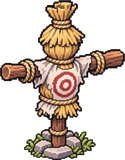
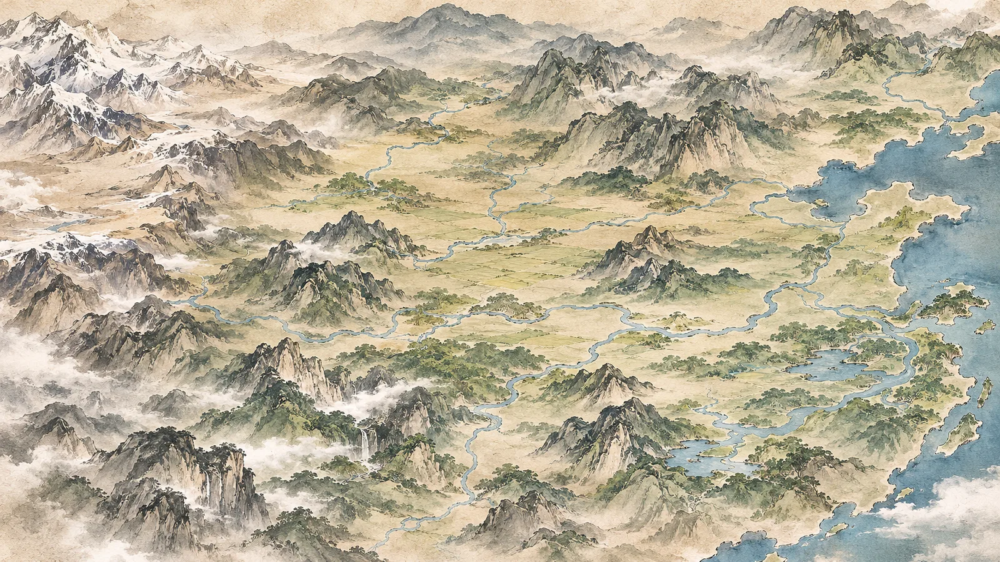

<!doctype html>
<html lang="ko">
<head>
<meta charset="utf-8">
<meta name="viewport" content="width=device-width,initial-scale=1">
<title>군림천하 문파 경영</title>
<link rel="icon" href="data:image/svg+xml,<svg xmlns='http://www.w3.org/2000/svg' viewBox='0 0 64 64'><rect width='64' height='64' rx='12' fill='%231d1a16'/><text x='32' y='45' font-size='38' text-anchor='middle' fill='%23b8862b' font-family='serif'>宗</text></svg>">
<link href="https://fonts.googleapis.com/css2?family=Nanum+Myeongjo:wght@700;800&family=Noto+Sans+KR:wght@400;500;700&display=swap" rel="stylesheet">
<style>
:root{
  --paper:#f1e9d8; --paper2:#e8dcc3; --card:#fbf6ea; --ink:#1d1a16; --ink2:#4a443b; --muted:#857a68;
  --red:#a3312a; --gold:#b8862b; --green:#3d7a5a; --blue:#2f6f9f; --line:#c9b994;
}
*{box-sizing:border-box}
html,body{margin:0;background:var(--paper);color:var(--ink);font-family:'Noto Sans KR',sans-serif;font-size:15px}
button{font-family:inherit;font-size:14px;cursor:pointer;border:1px solid var(--ink2);background:var(--card);color:var(--ink);border-radius:6px;padding:7px 12px}
button:disabled{opacity:.4;cursor:default}
button.main{background:var(--ink);color:var(--paper)}
h1,h2,h3{font-family:'Nanum Myeongjo',serif;margin:.4em 0}
.serif{font-family:'Nanum Myeongjo',serif}
.muted{color:var(--muted)}
.wrap{max-width:1000px;margin:0 auto;padding:0 16px 80px}
.top{position:sticky;top:0;z-index:5;background:var(--ink);color:var(--paper);padding:8px 16px;display:flex;flex-wrap:wrap;gap:6px 18px;align-items:center;font-size:14px}
.top b{color:#e7c77a}
.bar{display:inline-block;width:110px;height:8px;background:#4a443b;border-radius:4px;vertical-align:middle;overflow:hidden}
.bar i{display:block;height:100%;background:var(--gold)}
.tabs{display:flex;gap:6px;margin:12px 0}.tabs button{white-space:nowrap;flex:none}@media (max-width:600px){.tabs{overflow-x:auto;scrollbar-width:none;-webkit-overflow-scrolling:touch}.tabs::-webkit-scrollbar{display:none}.tabs button{padding:6px 10px}}
.tabs button.on{background:var(--ink);color:var(--paper)}
.panel{background:var(--card);border:1px solid var(--line);border-radius:10px;padding:12px 14px;margin:10px 0}
.grid{display:grid;grid-template-columns:repeat(auto-fill,minmax(230px,1fr));gap:10px}
.d{background:var(--card);border:1px solid var(--line);border-radius:10px;padding:10px;font-size:13px}
.d .hd{display:flex;gap:8px;align-items:center}
.pt{width:44px;height:44px;border-radius:50%;background:var(--paper2);border:2px solid var(--ink2);display:flex;align-items:center;justify-content:center;font-family:'Nanum Myeongjo',serif;font-weight:800;overflow:hidden;flex:none}
.pt img{width:100%;height:100%;object-fit:cover;object-position:top}
.chip{display:inline-block;font-size:11px;border:1px solid var(--line);border-radius:10px;padding:1px 7px;margin:2px 2px 0 0}
.chip.s{border-color:var(--blue);color:var(--blue)}
.chip.m{border-color:var(--red);color:var(--red)}
.chip.b{border-color:var(--green);color:var(--green)}
.mind{height:5px;background:var(--paper2);border-radius:3px;margin-top:6px;overflow:hidden}
.mind i{display:block;height:100%;background:var(--red)}
select{font-family:inherit;font-size:13px;padding:3px}
.ev{border-left:4px solid var(--ink2)}
.ev.crisis{border-left-color:var(--red)}
.ev.job{border-left-color:var(--green)}
.ev.task{border-left-color:var(--blue)}
.modal{position:fixed;inset:0;background:rgba(29,26,22,.55);display:flex;align-items:center;justify-content:center;z-index:20;padding:16px}
.modal .box{background:var(--card);border-radius:12px;max-width:560px;width:100%;padding:18px 20px;max-height:90vh;overflow:auto}
.modal .box p{line-height:1.8}
.modal .ch{display:flex;flex-direction:column;gap:8px;margin-top:12px}
.modal .ch button{text-align:left}
.log{font-size:13px;line-height:1.7;max-height:220px;overflow:auto}
.box.duel.gorge{background:linear-gradient(rgba(20,12,10,.55),rgba(20,12,10,.78)),url(img/gorge.webp) center/cover;color:#f4ead8}
.box.duel.gorge h2,.box.duel.gorge .duelside b,.box.duel.gorge p b{color:#fff3dc}.box.duel.gorge>.muted,.box.duel.gorge .duelside .muted,.box.duel.gorge p.muted{color:#d8c8b0}.box.duel.gorge button{color:#1d1a16}.box.duel.gorge button b{color:#1d1a16}.box.duel.gorge button .muted{color:#7a6a55}.box.duel.gorge .log{background:rgba(0,0,0,.35);padding:6px 8px;border-radius:6px}
.box.duel.gorge .duelside .pt{background:rgba(241,233,216,.15)}.box.duel.gorge .vs{color:#ff8a6a;text-shadow:0 0 8px #000}
.duelrow{display:flex;align-items:center;justify-content:space-around;gap:10px;margin-top:10px}
.box.duel.gorge.bimu{background:linear-gradient(rgba(16,14,20,.55),rgba(16,12,10,.82)),url(img/sd_gate_bg.webp) center/cover}
.hand{display:flex;flex-wrap:wrap;gap:8px;justify-content:center;margin-top:12px}
.ccard{width:138px;min-height:108px;background:#f1e9d8;color:#1d1a16;border-radius:10px;padding:8px 8px 6px;border:2px solid #8a6a3a;cursor:pointer;position:relative;transition:transform .12s;display:flex;flex-direction:column;gap:2px;text-align:left}
.ccard:hover{transform:translateY(-6px)}.ccard.off{opacity:.45;cursor:not-allowed;transform:none}.ccard.def{border-color:#3d6ea0}.ccard.ult{border-color:#c9a227;box-shadow:0 0 10px rgba(217,178,90,.6)}
.ccard .cost{position:absolute;top:-9px;left:-9px;width:26px;height:26px;border-radius:50%;background:#2d4f7c;color:#fff;font-weight:800;display:flex;align-items:center;justify-content:center;border:2px solid #f1e9d8}
.ccard b{font-size:14px;color:#1d1a16}.ccard i{font-style:normal;font-size:11px;color:#7a5a2a}.ccard small{font-size:12px;color:#1d1a16}
.intent{padding:2px 10px;border-radius:12px;background:rgba(0,0,0,.5);font-size:13px;margin-top:2px}
.pop{position:absolute;top:30px;font-weight:800;font-size:24px;color:#ffdf8a;text-shadow:0 0 6px #000;animation:pop .9s forwards;z-index:4;pointer-events:none}@keyframes pop{to{transform:translateY(-40px);opacity:0}}
.hpb{width:100%}
.box.duel.gorge button.main{background:#1d1a16;color:#f1e9d8;border-color:#d9b25a}.box.duel.gorge button.main:hover{background:#3a2f27}
.fx{position:absolute;width:320px;height:213px;margin-top:-50px;filter:brightness(1.35) saturate(1.3);background-size:300% 200%;pointer-events:none;mix-blend-mode:screen;z-index:2}
.duelside{position:relative;display:flex;flex-direction:column;align-items:center;gap:3px;min-width:140px}
.duelside .pt{width:72px;height:72px;font-size:28px}
.vs{font-size:32px;color:var(--red)}
.hpb{width:130px;height:8px;background:var(--paper2);border-radius:4px;overflow:hidden}.hpb i{display:block;height:100%;background:var(--red)}
.duelside.hit .pt{animation:hit .35s}@keyframes hit{0%{transform:translateX(0);filter:none}25%{transform:translateX(-8px);filter:brightness(2) sepia(1) hue-rotate(-30deg)}50%{transform:translateX(7px)}100%{transform:translateX(0);filter:none}}
.yard{position:relative;margin:12px 0 4px;border-radius:10px;overflow:hidden;border:1px solid var(--line);background:#cdbf9f}
.yard canvas{display:block;width:100%;height:250px}
.yard .tip{position:absolute;pointer-events:none;background:rgba(29,26,22,.85);color:#f1e9d8;font-size:12px;padding:2px 6px;border-radius:4px;display:none}
.map{position:relative;border-radius:10px;overflow:hidden;border:1px solid var(--line)}.map>img{display:block;width:100%}
.pin{position:absolute;transform:translate(-50%,-50%);cursor:pointer;display:flex;flex-direction:column;align-items:center;z-index:1}
.pin i{width:10px;height:10px;border-radius:50%;background:#5b4636;border:2px solid #f1e9d8;box-shadow:0 0 0 1px #1d1a16}
.pin span{margin-top:2px;font-size:12px;font-weight:700;color:#1d1a16;background:rgba(241,233,216,.82);padding:0 5px;border-radius:4px;white-space:nowrap}
.pin.hot i{background:var(--red);animation:pinpulse 1.2s infinite}.pin.hot span{background:#fff8e6;border:1px solid var(--red)}
.pin.sel span{background:#1d1a16;color:#f1e9d8}
@keyframes pinpulse{0%{box-shadow:0 0 0 1px #1d1a16,0 0 0 0 rgba(163,49,42,.6)}100%{box-shadow:0 0 0 1px #1d1a16,0 0 0 10px rgba(163,49,42,0)}}
.pds{display:flex;gap:1px;margin-top:2px}.pds img{height:30px;image-rendering:pixelated}.pds em{font-style:normal;font-size:11px;background:#f1e9d8;border:1px solid #1d1a16;border-radius:50%;width:18px;height:18px;display:flex;align-items:center;justify-content:center}
@media (max-width:600px){.pin span{font-size:10px}}
.next{position:fixed;right:16px;bottom:16px;z-index:6;font-size:16px;padding:12px 20px}
table.cal{border-collapse:collapse;font-size:13px;width:100%}
table.cal td,table.cal th{border-bottom:1px solid var(--line);padding:5px 6px;text-align:left}
@media (max-width:600px){.bar{width:70px}}
</style>
</head>
<body>
<div id="app"></div>
<script>
/* ================= 데이터 ================= */
// 무공: t = s(심법)/m(초식), cap = 기본 상한
const ARTS={
  yuun:{n:'유운검법',t:'m',w:'geom',cap:7}, yuungyeol:{n:'유운검결',t:'m',w:'geom',cap:10},
  cheonha:{n:'천하삼십육검',t:'m',w:'geom',cap:7}, nakha:{n:'낙하구구검',t:'m',w:'geom',cap:10},
  janggwae:{n:'장괘장권구식',t:'m',w:'gwon',cap:10}, hongdan:{n:'홍단서천',t:'m',w:'geom',cap:10},
  wolnyeo:{n:'월녀검법',t:'m',w:'geom',cap:10}, punghan:{n:'풍한팔식',t:'m',w:'geom',cap:10}, pungroe:{n:'풍뢰도법',t:'m',w:'geom',cap:10}, geombo:{n:'검보 가전검법',t:'m',w:'geom',cap:10}, yakryu:{n:'약류장',t:'m',w:'gwon',cap:10},
  taeeul:{n:'태을신공',t:'s',cap:10}, guyang:{n:'구양신공',t:'s',cap:10},
  hyeoncheong:{n:'현청건곤강기',t:'s',cap:10}, taejin:{n:'태진강기',t:'s',cap:10}, cheondan:{n:'천단신공',t:'s',cap:10},
  muyeom:{n:'무염십팔보',t:'b',cap:2}, janggwaebo:{n:'장괘보',t:'b',cap:2}, eoryong:{n:'이어룡',t:'b',cap:2}, hoeseon:{n:'회선표',t:'b',cap:2}, waseon:{n:'와선보',t:'b',cap:2}, biyeon:{n:'비연신법',t:'b',cap:2}, nanhwa:{n:'난화지',t:'m',w:'gwon',cap:10}, yeomhwa:{n:'염화옥수',t:'m',w:'gwon',cap:10},
  guban:{n:'구반장법',t:'m',w:'gwon',cap:10}, nakroe:{n:'낙뢰신권',t:'m',w:'gwon',cap:10}, chileum:{n:'칠음진기',t:'s',cap:2}
};
// 전수할 수 있는 초식. 가르칠 사람(5성 이상)이 있어야 하고, 천하삼십육검은 충성 70 이상만 배운다
// 상위 무공을 익히면 그 하위 무공은 이미 아는 것으로 친다
const SUPER={yuun:'yuungyeol'},knows=(d,a)=>d.arts[a]!=null||!!(SUPER[a]&&d.arts[SUPER[a]]!=null);
const LIB=['chileum','yuun','cheonha','nakha','janggwae','hongdan','wolnyeo','yakryu','hoeseon','eoryong','janggwaebo','waseon','biyeon','muyeom','nanhwa','yeomhwa','cheondan','taejin'];
const SECRET={cheonha:70,muyeom:70,nanhwa:70,yeomhwa:70,cheondan:70,taejin:70};
// 종남 심법 셋은 모두가 익히고 있고 성취만 다르다. 사부가 후계 후보로 키운 넷은 구양·현청이 1성
const BASE_S=['taeeul','guyang','hyeoncheong'],SENIOR=['lim','mae','so','eung','ak'];
// 제자: apt = 수련 배율, ch = 충성
const ROSTER=[
  {id:'jin',n:'진산월',r:'장문인',rl:'player',st:{tong:85,ji:80,jeong:65,ma:80,geom:95,gwon:70,oseong:80},ch:100,arts:{hoeseon:1,janggwaebo:1,eoryong:1,yuun:6,cheonha:6,nakha:5,janggwae:4,yakryu:3,hongdan:1,taeeul:3,guyang:1,hyeoncheong:1}},
  {id:'lim',n:'임영옥',r:'사매',img:'img/lim.webp',st:{tong:55,ji:75,jeong:45,ma:85,geom:95,gwon:50,oseong:85},ch:95,taeum:1,arts:{hoeseon:1,eoryong:1,yuun:7,wolnyeo:6,taeeul:5}},
  {id:'mae',n:'매상',r:'사제',img:'img/mae.webp',st:{tong:60,ji:45,jeong:30,ma:40,geom:80,gwon:60,oseong:55},ch:80,arts:{waseon:1,cheonha:6,taeeul:5}},
  {id:'so',n:'소지산',r:'사제',img:'img/so.webp',st:{tong:70,ji:55,jeong:55,ma:45,geom:70,gwon:50,oseong:60},ch:90,arts:{eoryong:1,nakha:5,taeeul:4}},
  {id:'eung',n:'응계성',r:'사제',img:'img/eung.webp',st:{tong:50,ji:35,jeong:25,ma:40,geom:45,gwon:80,oseong:45},ch:85,arts:{janggwaebo:1,janggwae:5,taeeul:4}},
  {id:'nak',n:'낙일방',r:'사제',img:'img/nak.webp',st:{tong:45,ji:50,jeong:30,ma:65,geom:40,gwon:95,oseong:70},ch:85,arts:{janggwaebo:1,janggwae:5,taeeul:3}},
  {id:'du',n:'두기춘',r:'사제',img:'img/du.webp',st:{tong:40,ji:80,jeong:70,ma:70,geom:50,gwon:45,oseong:75},ch:35,arts:{eoryong:1,yuun:5,taeeul:4}},
  {id:'jeong',n:'정해',r:'사제',img:'img/jeong.webp',st:{tong:55,ji:80,jeong:75,ma:60,geom:60,gwon:55,oseong:70},ch:80,arts:{waseon:1,yuun:5,taeeul:4}},
  {id:'ak',n:'악자화',r:'사형',img:'img/ak.webp',st:{tong:60,ji:70,jeong:50,ma:55,geom:90,gwon:60,oseong:80},ch:40,arts:{hoeseon:1,waseon:1,yuun:6,cheonha:5,taeeul:5}},
  {id:'bang',n:'방취아',r:'막내',img:'img/bang.webp',st:{tong:30,ji:60,jeong:40,ma:80,geom:65,gwon:45,oseong:65},ch:90,arts:{biyeon:2,hoeseon:1,eoryong:1,wolnyeo:4,taeeul:3}}
];
// 능력치 이름. 무골은 초식, 오성은 심법이 오르는 속도(80이 보통)
const STN={tong:'통솔',ji:'지력',jeong:'정치',ma:'매력',geom:'검재',gwon:'권재',oseong:'오성'};
const growOf=(d,a)=>(ARTS[a].t==='s'?d.st.oseong:ARTS[a].w==='sin'?(d.st.geom+d.st.gwon)/2:d.st[ARTS[a].w]||60)/80;
const POS={train:'수련',guard:'수비',rest:'휴식',study:'장경각 해독',shop:'주루 관리',seclude:'폐관',away:'파견 중',hurt:'요양'};
// 주루 관리: 정치가 높을수록 많이 번다(달마다). 자리는 대왕령 주루 3, 조암령 주루 +4, 초가보가 쥐던 주루 +2, 서안 객잔 +1(최대 10)
const secMul=()=>G.flags.sulyeon?3:2.5,secSlots=()=>(G.flags.yeongong?1:0)+(G.flags.sulyeon?1:0);
const shopSlots=()=>{const dd=G.devDone||[];return 3+(dd.includes('ju')?4:0)+(dd.includes('land')?2:0)+(dd.includes('sang')?1:0)};
const shopEarn=()=>G.ds.filter(d=>d.pos==='shop').map(d=>Math.round(d.st.jeong/6+d.st.ji/20)).sort((a,b)=>b-a).slice(0,shopSlots()).reduce((s,v)=>s+v,0);
const FAC={yeon:{n:'연무장',d:'수련치 +10%/단계'},jang:{n:'장경각',d:'해독 속도, 전수할 수 있는 무공 수'},yak:{n:'약방',d:'심마·부상 회복'},oe:{n:'외당',d:'본산 방어, 잠입 차단, 사건을 일찍 앎'}};
// 로그라이크 그림을 같은 사이트에서 불러 쓴다. 사이트: /gunrim/munpa/ → /gunrim/img/, 내 컴퓨터: 로그라이크 폴더
const RL_LOCAL=location.protocol==='file:';
const rlImg=n=>RL_LOCAL?`../../군림천하_로그라이크/img/${n}.png`:`../img/${n}.webp`;
const LOCAL_FX={wolnyeo:1,nakroe:1,nanhwa:1,yeomhwa:1,guban:1};const fxUrl=n=>LOCAL_FX[n]?`img/fx/${n}_sheet.${RL_LOCAL?'png':'webp'}`:rlFx(n);
const rlFx=n=>RL_LOCAL?`../../군림천하_로그라이크/img/fx/${n}_sheet.png`:`../img/fx/${n}_sheet.webp`;
// 일기토 초식: 무공마다 [강공, 쾌검, 수비] = [초식 이름, 이펙트]. 이펙트 이름은 로그라이크 img/fx와 같다(배포 때 검사)
const MOVES={
  yuun:[['유운검봉','geombong'],['운중암전','amjeon'],['유운출곡','chulgok']],
  yuungyeol:[['유운단악','danak'],['운해승기','seunggi'],['운무중첩','unmu']],
  cheonha:[['천하성산','seongsan'],['천하밀밀','milmil'],['천하수조','suzo']],
  nakha:[['반천흥염','bancheon'],['채흥서천','nakha'],['천강은홍','cheongang']],
  punghan:[['풍한참','suzo'],['풍한연환','seongjin'],['풍한회선','milmil']],pungroe:[['풍뢰벽','danbong'],['풍뢰질주','jetan'],['풍뢰회도','geumgang']],geombo:[['검보 직자','danak'],['검보 연자','unmu'],['검보 봉자','chulgok']],
  janggwae:[['천전만권','cheonjeon'],['조운육환','jounyuk'],['단봉조양','danbong']],
  hongdan:[['홍단서천','hongdan'],['홍단서천','hongdan'],['홍단서천','hongdan']],
  yakryu:[['약류장','yakryu'],['약류장','yakryu'],['약류장','yakryu']],
  muyeom:[['무염십팔보','muyeom'],['무염십팔보','muyeom'],['무염십팔보','muyeom']],
  nanhwa:[['난화지','nanhwa'],['난화지','nanhwa'],['난화지','nanhwa']],
  yeomhwa:[['염화옥수','yeomhwa'],['염화옥수','yeomhwa'],['염화옥수','yeomhwa']],
  guban:[['서우망월','guban'],['낭아선륜','guban'],['마면배심','guban']],
  nakroe:[['뇌정만균','nakroe'],['낙뢰신권','nakroe'],['낙뢰신권','nakroe']]};
// 로그라이크 적: 이름 → [초상 파일, 강공·쾌검·수비 때 쓰는 초식 이름]
const RLEN={'감종간':['gamjong',['대라섬요','색탈혼','허무보']],'두기춘':['dugichun',['검세','연검','운기']],'고진':['gojin',['대라궁해(반쪽)','백락심연','검막']],'유중악':['yujung',['뇌신파황','낙뢰구검','신뢰하격']],'백모란':['baekmo',['구주홍염화','월녀검법','음양화벽']],'조익현':['joik',['대라궁해','대라섬요','현음진기']],'야율척':['yayul',['항룡금강권','불광만천','금강항마']],'백대행':['baekdae',['천룡번공','천개유룡','백원적과']],'복양수':['bokyang',null],'당각':['danggak',null],'매장원':['maejang',null],'운자추':['unjachu',null]};
const ENIMG={'남궁연':'img/namgungyeon.webp','곽존해':'img/gwakjon.webp','백리장손':'img/baekri.webp','정화':'img/jeonghwa.webp','검단현':'img/geomdan.webp','점창 제자':'img/sd_ally_jeom.png','소림 무승':'img/sd_ally_sorim.png','화산 고수':'img/sd_mook_hs.png','서장 선봉장':'img/sd_sj_boss.png','서장 철기대장':'img/sd_sj_boss.png','서장 대장':'img/sd_sj_boss.png','석동':'img/seokdong.webp','용 선생':'img/yongseon.webp','초일산':'img/choil.webp','갈태독':'img/galtae.webp','곽태보':'img/gwaktae.webp'};
const enemyImg=bn=>ENIMG[bn]||(RLEN[bn]&&RLEN[bn][0]?rlImg(RLEN[bn][0]):null);
RLEN['서장 무승']=['sadae',null];RLEN['풍도']=['pungdo',null];RLEN['동휘']=['donghwi',null];RLEN['쾌의당 살수 두령']=['kwaesal',null];RLEN['석동']=['',['대라장천','천양신공','구양신공']];
const emvName=(bn,em)=>{const r=RLEN[bn];return r&&r[1]?r[1][['kang','kwae','su'].indexOf(em)]:MV[em]};
const ENEMY_FX=['b_noesin','b_biryong','b_baekhwa','b_hyeolhwa','b_paewang','b_samji'];
// 초식 이름 → 이펙트(로그라이크 짝 + 문파경영)
const NAMEFX={'대라궁해(반쪽)':'dara1','구주파천황':'b_gujupacheon','구주홍염화':'b_gujuhong','금강항마':'geumganghangma','뇌신파황':'b_noesin','대라궁해':'dara1','대라장천':'dara2','대라섬요':'dara3','마운장':'maun','분뢰경변':'bunroe','불광만천':'b_bulgwang','항룡금강권':'hangryong','혈라인':'hyeolra','제세모니인':'b_jese','음양화벽':'eumyang','음양쌍반진':'eumyang','현음진기':'eumyang','낙뢰구검':'bunroe','신뢰하격':'b_noesin','월녀검법':'wolnyeo','색탈혼':'talhon_saek','천룡번공':'b_cheonji','천양신공':'b_hyeolhwa','구양신공':'b_hyeolhwa'};
const efxOf=(bn,mv)=>{const nm=emvName(bn,mv);return NAMEFX[nm]||ENEMY_FX[Math.floor(Math.random()*ENEMY_FX.length)]};
const RLFX=[...new Set([...Object.values(MOVES).flat().map(x=>x[1]).filter(Boolean),...ENEMY_FX,'cheonha_mugung'])];
const SAVE='munpa-v1';

/* ================= 상태 ================= */
let G=null, TAB='main', MODAL=null;
function newGame(){
  G={m:1,half:0,act:1,eun:200,fame:5,fav:0,qual:30,broke:0,
     fac:{yeon:1,jang:1,yak:0,oe:0},
     ds:ROSTER.map(r=>{const arts={...r.arts};for(const s of BASE_S)if(arts[s]==null)arts[s]=SENIOR.includes(r.id)&&s!=='taeeul'?1:0;return{...r,arts,xp:{},pos:'train',away:0,mind:0,focusM:null,focusS:null,job:null}}),
     q:[],log:[],flags:{},ilbi:null,jinFocus:false,income:{sang:45,yak:20},task:null,done:false};
  // 진산월은 장문인이라 배치 대신 행동으로 수련한다
  G.ds[0].pos='guard';
  MODAL=prologue();
  save();render();
}
const D=id=>G.ds.find(d=>d.id===id);
const has=id=>!!D(id);
function log(t){G.log.unshift(`<b>${yr(G.m)}</b> ${t}`);G.log=G.log.slice(0,80)}
function yr(m){return `${Math.ceil(m/12)}년 ${((m-1)%12)+1}월`}
const HALF=['상순','하순'];
function save(){try{localStorage.setItem(SAVE,JSON.stringify(G))}catch(e){}}
function load(){try{const s=localStorage.getItem(SAVE);if(s){G=JSON.parse(s);return true}}catch(e){}return false}

/* ================= 수련 ================= */
const costOf=lv=>lv<3?1:lv<6?2:lv<9?3:4;
// 관문: 6성과 10성. 임영옥의 칠음진기 6성 관문은 강일비가 열어 준다
function gateOf(d,a){const lv=d.arts[a];if(a==='chileum'&&d.taeum&&has('ilbi'))return 0;if(lv===5)return 1;if(lv===9)return 2;return 0}
function gainWis(d,n,why){d.wis=(d.wis||0)+n;log(`${d.n}이(가) ${why}에서 깨달음 ${n}을(를) 얻었다. (가진 깨달음 ${d.wis})`)}
function capOf(d,a){if(a==='chileum')return d.taeum?10:2;if(d.capUp&&d.capUp[a])return 10;return ARTS[a].cap}
function power(d){const ms=[],ss=[];for(const a in d.arts){if(ARTS[a].t==='b')continue;(ARTS[a].t==='m'?ms:ss).push(d.arts[a])}ms.sort((a,b)=>b-a);ss.sort((a,b)=>b-a);
  let p=(ms[0]||0)*10+(ms[1]||0)*3+(ss[0]||0)*5+(d.mukryeong?10:0)+(d.arts.muyeom?d.arts.muyeom*8:0);if(d.id==='jin'){if(G.flags.yongyeong)p+=15;if(G.flags.geomjeong)p+=20;if(G.p2)p+=15*G.p2.relic;if(d.capUp&&d.capUp.cheonha)p+=5}return p}
// 수련 방향이 없으면 올릴 수 있는 것 중 가장 높은 무공(한 우물)
const FEMALE={lim:1,bang:1,seomun:1};
const fitOf=(d,a)=>{const A=ARTS[a];if(A.t==='s')return d.st.oseong;if(A.t==='b')return 60;const w=A.w==='sin'?(d.st.geom+d.st.gwon)/2:(d.st[A.w]||60);return w+(FEMALE[d.id]&&a==='wolnyeo'?25:0)};
function pickFocus(d,t){
  const cur=t==='m'?d.focusM:d.focusS;
  if(cur&&d.arts[cur]!=null&&d.arts[cur]<capOf(d,cur))return cur;
  let best=null;for(const a in d.arts){if(ARTS[a].t!==t||d.arts[a]>=capOf(d,a))continue;if(gateOf(d,a)&&(d.wis||0)<gateOf(d,a)&&(d.xp[a]||0)>=costOf(d.arts[a]))continue;const sc=x=>t==='m'?fitOf(d,x)+d.arts[x]*4:d.arts[x];if(!best||sc(a)>sc(best))best=a}
  return best;
}
function gain(d){
  const half=d.teachHalf?.5:1;d.teachHalf=false;
  if(d.id==='jin')return (G.jinSec?secMul():G.retreat?3*(G.flags.yeongong?1.3:1)*(G.flags.sulyeon?1.2:1):G.jinBusy?0:G.jinFocus?2:1)*(1+.1*G.fac.yeon)*half;
  if(d.coach){d.coach=false;return {train:1,guard:.35,study:.2,shop:.2,seclude:secMul(),rest:0,away:.2,hurt:0}[d.pos]*(1+.1*G.fac.yeon)*half*2}
  const base={train:1,guard:.35,study:.2,shop:.2,seclude:secMul(),rest:0,away:.2,hurt:0}[d.pos]||0;
  return base*(1+.1*G.fac.yeon)*half;
}
function monthPct(d,a){let g;if(d.id==='jin')g=(G.jinSec?secMul():G.retreat?3:G.jinBusy?0:G.jinFocus?2:1)*(1+.1*G.fac.yeon);else g=({train:1,guard:.35,study:.2,shop:.2,seclude:secMul(),rest:0,away:.2,hurt:0}[d.pos]||0)*(1+.1*G.fac.yeon)*(d.coach?2:1);
  return Math.round(100*g*growOf(d,a)*(a==='chileum'&&d.taeum?1.2:1)/costOf(d.arts[a]))}
function train(d){
  if(d.cold){d.cold=0;return}
  const g=gain(d)/2;if(!g)return;
  // 돈오: 수련에 든 순(진산월은 전념·폐관)에 오성에 따라 2~4%로 수련 중인 무공이 한 단계 오른다(관문도 넘는다)
  if((d.id==='jin'?(G.jinFocus||G.retreat):d.pos==='train')&&Math.random()<.025*d.st.oseong/80){const t=Math.random()<.5?'m':'s',a=pickFocus(d,t)||pickFocus(d,t==='m'?'s':'m');
    if(a&&d.arts[a]<capOf(d,a)){const big=gateOf(d,a)>0;d.arts[a]++;d.xp[a]=0;log(big?`<b>${d.n}이(가) ${ARTS[a].n}에 대해 크게 깨달았다.</b> (${d.arts[a]}성)`:`${d.n}의 ${ARTS[a].n}에 대한 조예가 깊어졌다. (${d.arts[a]}성)`)}}
  if(d.pos==='train'||d.pos==='seclude'||(d.id==='jin'&&(G.jinFocus||G.retreat||G.jinSec))){const stuck=Object.keys(d.arts).some(a=>gateOf(d,a)&&(d.wis||0)<gateOf(d,a)&&(d.xp[a]||0)>=costOf(d.arts[a]));
    if(Math.random()<(stuck?.06:.012)*d.st.oseong/80*(G.flags.yeongong?1.4:1)*(G.flags.sulyeon?1.2:1)*(d.pos==='seclude'||(d.id==='jin'&&G.jinSec)?2:1))gainWis(d,1,stuck?'벽 앞에서 버틴 수련':'수련')}
  for(const t of['m','s']){
    const a=pickFocus(d,t);if(!a)continue;
    d.xp[a]=(d.xp[a]||0)+g*growOf(d,a)*(a==='chileum'&&d.taeum?1.2:1);
    while(d.arts[a]<capOf(d,a)&&d.xp[a]>=costOf(d.arts[a])){const need=gateOf(d,a);if(need&&(d.wis||0)<need){if(!d.gateSaid)log(`${d.n}의 ${ARTS[a].n}이(가) ${d.arts[a]}성에서 막혔다. 깨달음 ${need}이(가) 필요하다.`);d.gateSaid=1;d.xp[a]=Math.min(d.xp[a],costOf(d.arts[a]));break}
      if(need){d.wis-=need;d.gateSaid=0;log(`${d.n}이(가) 깨달음을 얻어 ${ARTS[a].n}의 벽을 넘었다.`)}
      d.xp[a]-=costOf(d.arts[a]);d.arts[a]++;
      log(`${d.n}의 ${ARTS[a].n}이(가) ${d.arts[a]}성에 올랐다.`)}
    if(d.arts[a]>=capOf(d,a))d.xp[a]=0;
  }
}

/* ================= 사건 ================= */
function prologue(){return{title:'장례',art:'img/jin.png',p:[
  '태평검객 임장홍의 장례에 찾아온 사람은 열 명이 채 되지 않았다. 사부는 용문산 절벽에서 만년삼정을 손에 쥔 채 떨어졌고, 숨이 끊어지기 전에 그것과 장문인 자리를 진산월에게 맡겼다.',
  '조문객 사이에 삿갓을 깊이 눌러쓴 청삼 차림의 중년인이 있었다. 사내는 영전 앞에서 오래 절했다. 일어선 사내가 진산월을 보며 낮게 물었다.',
  '"태평검객이 목숨과 바꾼 만년삼정을, 그대는 어디에 쓸 생각인가?"'],
  ch:[
    ['사부님 뜻대로 제가 먹겠습니다.',()=>{G.ilbi='late';G.flags.samUse='jin';log('삿갓 쓴 사내는 말없이 떠났다.')}],
    ['문파를 위해 쓰겠습니다.',()=>{G.ilbi='late';G.flags.samUse='jin';log('삿갓 쓴 사내는 말없이 떠났다.')}],
    ['사매의 몸이 요즘 이상합니다. 사매에게 쓸까 합니다.',()=>{G.ilbi='early';G.flags.samUse='lim';
      MODAL={title:'삿갓 쓴 사내',p:['사내가 임영옥의 증상을 하나하나 물었다. 손끝이 차고, 기침이 잦고, 한여름에도 얼굴이 희다는 말을 듣자 사내의 얼굴이 굳었다.','"그 영약으로는 그 병을 못 고친다. 태음신맥이다." 사내는 삿갓을 벗었다. "내 이름은 강일비다. 네 사부의 사형이지. 그 아이는 내가 맡으마. 다만 내가 돌아왔다는 것은 문 밖에 알리지 마라."'],ch:[['알겠습니다, 사백님.',()=>{addArt('lim','chileum');addIlbi(false);log('(제자 탭에서 임영옥의 심법을 칠음진기로 정해 두어야 한다) ');log('강일비가 본산에 머물며 임영옥에게 칠음진기를 가르치기 시작했다.')}]]};
      return true}]
  ]}}
// 태을선거: 진산월이 직접 간다(한 달을 다 쓴다). 열석대진은 천하삼십육검 6성 이상이어야 뚫는다
function openTaeeul(){G.q.push({t:'quest',id:'taeeul',title:'태을선거',text:'《성심록》에 따르면 매종도가 말년을 보낸 태을선거는 화산 깊은 곳에 있다. 안개 낀 돌무더기 진이 길을 막는다고 한다. 장문인이 직접 가야 한다. (상순에 떠나 하순까지 진산월이 자리를 비운다. 천하삼십육검 5성 이상 필요)',btn:'진산월이 떠난다'})}
function goTaeeul(){const j=D('jin');
  if((j.arts.cheonha||0)<5){log('진산월이 열석대진 앞에서 며칠을 헤맸지만 길을 찾지 못하고 돌아왔다. (천하삼십육검 5성 필요)');return false}
  G.flags.taeeul=1;j.capUp=j.capUp||{};j.capUp.cheonha=1;j.arts.cheonha=Math.min(10,(j.arts.cheonha||0)+2);j.xp.cheonha=0;j.arts.taeeul=Math.min(10,j.arts.taeeul+2);j.xp.taeeul=0;gainWis(j,2,'태을선거의 열석대진');
  G.q.push({t:'quest',id:'seokshil',title:'중봉 석실',text:'중봉의 돌무더기 아래에서 석실을 찾았다. 백골 하나가 검을 안고 있다. 이곳에 들어앉아 폐관하면 큰 성취를 얻을 것이다. 다만 석 달 동안 장문인이 자리를 비운다(그동안 장문인 행동은 상순에만 1번, 진산월은 출전 불가). '+(G.flags.choDone?'':'초가보가 그 틈을 노릴 수 있다.'),btn:'폐관에 들어간다'});
  MODAL={title:'태을선거',p:['안개 속 돌무더기는 아무렇게나 쌓인 것이 아니었다. 열두 방위로 아홉 번씩 바뀌는 배치가 천하삼십육검 마지막 초식의 모양 그대로였다. 진산월은 검을 뽑아 한 걸음씩 진을 따라 걸었다. 천하무궁을 깨달았다.','진 안쪽의 초가는 비어 있었다. 뒤뜰에 〈일대종사 매종도지묘〉라는 묘비가 서 있었다. 누군가 수십 년 전에 시신을 묻고 비학을 가져간 뒤였다.','돌아오는 길에 사부의 무덤에 들렀다. 중봉의 돌무더기 위에 "진리를 얻고 싶은 자, 파하라"고 적힌 양피지가 놓여 있었다.'],ch:[['돌무더기를 부순다.',()=>{log(`천하무궁을 깨달았다. 천하삼십육검 ${D('jin').arts.cheonha}성(+2)·상한 해제, 태을검선의 거처에서 태을신공 ${D('jin').arts.taeeul}성(+2). 중봉에서 석실을 찾았다.`)}]]};
  return true}
// 폐관을 마치면: 용영검, 혈선비록(태진강기 2성), 유운검결(유운검법의 상한이 풀림), 검정중원(유운검결 7성)
function endRetreat(){const j=D('jin');G.flags.yongyeong=1;gainWis(j,3,'석실 폐관');
  if(j.arts.taejin==null){j.arts.taejin=3;j.xp.taejin=0}j.arts.taeeul=Math.min(10,j.arts.taeeul+1);
  if(j.arts.yuun!=null){j.arts.yuungyeol=j.arts.yuun;j.xp.yuungyeol=j.xp.yuun||0;delete j.arts.yuun;delete j.xp.yuun;if(j.focusM==='yuun')j.focusM='yuungyeol'}j.arts.yuungyeol=Math.min(10,(j.arts.yuungyeol||0)+2);j.xp.yuungyeol=0;
  const gj=(j.arts.yuungyeol||0)>=7;if(gj)G.flags.geomjeong=1;
  // 출관 뒤 진산월이 도해와 열석대진에서 본 것을 풀어 가르친다: 유운검법·천하삼십육검을 익힌 제자 +1성(상한 안에서), 깨달음 +1
  const up=[];for(const d of G.ds){if(d.id==='jin')continue;let hit=0;for(const a of ['yuun','cheonha'])if(d.arts[a]!=null&&d.arts[a]<capOf(d,a)){d.arts[a]++;d.xp[a]=0;hit=1}if(hit){d.wis=(d.wis||0)+1;up.push(d.n)}}
  MODAL={title:'출관',p:['백골은 이백 년 전의 혈선 정립병이었다. 그가 안고 있던 용영검과 《혈선비록》, 그리고 돌침상 밑 석판에 새겨진 곽일산의 유운검결 도해 백이십여 개가 남아 있었다.','석 달 동안 진산월은 도해를 따라 유운검법을 처음부터 다시 익혔다.'+(gj?' 마지막 달, 열여덟 초가 하나로 꿰이는 초식이 손끝에서 나왔다. 진산월은 그것을 검정중원이라 불렀다.':' 아직 열여덟 초가 하나로 꿰이지는 않았다. 유운검결이 7성에 이르면 닿을 것이다.'),'산에 돌아온 진산월은 사흘 밤을 연무장에 나와 제자들 앞에서 도해의 검로를 하나하나 풀었다. 열석대진에서 본 천하무궁의 걸음도 함께 그려 보였다.'+(up.length?` (${up.join(', ')} — 유운검법·천하삼십육검 +1성, 깨달음 +1)`:'')],
    ch:[['산을 내려간다.',()=>{log(`진산월이 출관했다. 용영검, 태진강기 3성, 태을신공 +1, 유운검법 → 유운검결 ${D('jin').arts.yuungyeol}성(+2)`+(gj?', 검정중원':''))}]]}}
// 강일비: 임장홍의 사형. 본산에 머물지만 싸움에는 나서지 않는다(파견·위기·기습 제외). 늦은 길이면 정체를 숨긴 떠돌이 사내로 지낸다
function ilbiMuyeom(){const j=D('jin');if(j&&j.arts.muyeom==null){j.arts.muyeom=1;log('<b>강일비가 진산월에게 무염십팔보를 일러 주었다.</b> (진산월 무염십팔보 익힘 · 받는 피해 감소)')}}
function addIlbi(hidden){if(has('ilbi'))return;G.ds.push({id:'ilbi',n:hidden?'삿갓 쓴 사내':'강일비',r:hidden?'떠돌이 객':'사백(원로)',elder:1,img:hidden?'img/ilbi_hat.webp':'img/ilbi.webp',ch:90,
  st:{tong:60,ji:90,jeong:50,ma:55,geom:70,gwon:95,oseong:95},arts:{yuun:2,cheonha:2,taeeul:8,guyang:3,hyeoncheong:3,chileum:2,muyeom:2,hoeseon:2,nanhwa:8,yeomhwa:8},xp:{},pos:'train',away:0,mind:0,focusM:null,focusS:null,job:null});if(!hidden)ilbiMuyeom()}
// 문파 개발: 장문인 행동 1번과 은자로 시작하고, 순마다 진행된다. 동시에 둘까지
const INCN={nohae:'노해광 첩보망',gyeong:'경요궁',sang:'서안 상권',yak:'약초밭',ju:'조암령 주루',pyo:'표국',land:'초가보 옛 땅'};
const DEV=[
  {id:'sang',n:'서안 상권 확장',c:120,t:4,d:'서안 상권 수입 +15, 서안 객잔 하나(주루 관리 자리 +1)'},
  {id:'yak',n:'약초밭 개간',c:80,t:4,d:'약초밭 수입 +10'},
  {id:'ju',n:'조암령 주루 되찾기',c:150,t:4,d:'노해광에게 넘긴 주루 네 곳을 되사 온다. 수입 +25, 주루 관리 자리 +4',req:()=>G.fame>=20,rq:'명성 20'},
  {id:'forge',n:'대장간',c:200,t:4,d:'무기·방어구를 벼릴 수 있다(제자 탭). 무기 개발·방어구 개발이 열린다',big:1},
  {id:'wpn1',n:'무기 개발 1',c:150,t:4,d:'정련 장검·철권갑(공격 +8%)을 벼릴 수 있다',req:()=>(G.devDone||[]).includes('forge'),rq:'대장간'},
  {id:'wpn2',n:'무기 개발 2',c:400,t:6,d:'백련강 장검·강철 권갑(공격 +15%)',req:()=>(G.devDone||[]).includes('wpn1'),rq:'무기 개발 1'},
  {id:'wpn3',n:'무기 개발 3',c:800,t:8,d:'명장의 검·권갑(공격 +25%)',req:()=>(G.devDone||[]).includes('wpn2')&&(G.devDone||[]).includes('sang'),rq:'무기 개발 2, 서안 상권 확장'},
  {id:'arm1',n:'방어구 개발 1',c:150,t:4,d:'가죽 경갑(받는 피해 −8%)을 벼릴 수 있다',req:()=>(G.devDone||[]).includes('forge'),rq:'대장간'},
  {id:'arm2',n:'방어구 개발 2',c:450,t:6,d:'연환갑(받는 피해 −15%)',req:()=>(G.devDone||[]).includes('arm1'),rq:'방어구 개발 1'},
  {id:'pyo',n:'표국 설립',c:200,t:6,d:'의뢰 보수 +20%, 수입 +10',req:()=>G.fame>=15,rq:'명성 15'},
  {id:'yeon',n:'연공실',c:180,t:6,d:'제자 폐관 1자리·진산월 폐관(한 달, 수련 2.5배), 석실 폐관 1.3배, 직접 지도의 깨달음 확률 +20%'},
  {id:'land',n:'초가보 옛 땅 흡수',c:50,t:2,d:'초가보가 쥐던 관중 상권과 주루. 수입 +30, 주루 관리 자리 +2',req:()=>G.flags.choDone,rq:'초가보 멸망'},
  {id:'sukso1',n:'숙소 증축 1',c:150,t:4,d:'제자 정원 15 → 20',big:1},
  {id:'sukso2',n:'숙소 증축 2',c:250,t:6,d:'제자 정원 20 → 27',req:()=>(G.devDone||[]).includes('sukso1'),rq:'숙소 증축 1',big:1},
  {id:'sukso3',n:'숙소 증축 3',c:500,t:8,d:'제자 정원 27 → 35',req:()=>(G.devDone||[]).includes('sukso2'),rq:'숙소 증축 2',big:1},
  {id:'sanmun',n:'산문 중건',c:200,t:6,d:'무너진 산문을 다시 세운다. 명성 +10, 지원자가 더 온다',big:1},
  {id:'josa',n:'조사전 복원',c:400,t:8,d:'역대 조사의 위패를 다시 모신다. 구파 자격 +10, 모든 제자 심마 -20',req:()=>G.fame>=30,rq:'명성 30',big:1},
  {id:'jeongak1',n:'전각 증축 1',c:300,t:6,d:'시설을 4단계까지 올릴 수 있다',big:1},
  {id:'jeongak2',n:'전각 증축 2',c:600,t:8,d:'시설을 5단계까지 올릴 수 있다',req:()=>(G.devDone||[]).includes('jeongak1'),rq:'전각 증축 1',big:1},
  {id:'sulyeon',n:'후산 수련동',c:250,t:6,d:'폐관 자리 +1, 폐관 수련 3배, 석실 폐관 1.2배, 직접 지도의 깨달음 확률 +10%',big:1},
  {id:'wall1',n:'성벽·망루 1',c:200,t:6,d:'본산 방어 +40, 큰 싸움에서 아군 +10%',big:1},
  {id:'wall2',n:'성벽·망루 2',c:450,t:8,d:'본산 방어 +40, 큰 싸움에서 아군 +10% 더',req:()=>(G.devDone||[]).includes('wall1'),rq:'성벽·망루 1',big:1}];
const capOfDs=()=>[15,20,27,35][G.fac.sukso||0];
const dsCount=()=>G.ds.filter(d=>!d.elder&&d.id!=='jin'&&d.id!=='jeonp').length;
function devDone(id){G.devDone=G.devDone||[];const rb=yardRebuilt();G.devDone.push(id);if(!rb&&yardRebuilt())log('<b>본산의 모습이 달라졌다.</b> 무너졌던 곳을 다시 세우고 새 깃발과 등을 걸었다.');const x=DEV.find(v=>v.id===id);
  if(id==='sang')G.income.sang+=15;if(id==='yak')G.income.yak+=10;if(id==='ju')G.income.ju=25;if(id==='pyo'){G.flags.pyo=1;G.income.pyo=10}if(id==='yeon')G.flags.yeongong=1;if(id==='land')G.income.land=30;
  if(id.startsWith('sukso'))G.fac.sukso=(G.fac.sukso||0)+1;if(id==='sanmun'){G.fame+=10;G.flags.sanmun=1}if(id==='josa'){G.qual+=10;for(const o of G.ds)o.mind=Math.max(0,o.mind-20)}
  if(id==='jeongak1')G.facCap=4;if(id==='jeongak2')G.facCap=5;if(id==='sulyeon')G.flags.sulyeon=1;if(id==='wall1')G.wall=1;if(id==='wall2')G.wall=2;
  log(`문파 개발을 마쳤다: ${x.n} (${x.d})`)}
const GEAR={w:[null,{n:'정련 장검',gn:'철권갑',v:.08,c:250},{n:'백련강 장검',gn:'강철 권갑',v:.15,c:600},{n:'명장의 검',gn:'명장의 권갑',v:.25,c:1200}],a:[null,{n:'가죽 경갑',v:.08,c:250},{n:'연환갑',v:.15,c:700}]};
const forgeLv=s=>{const dd=G.devDone||[];return s==='w'?(dd.includes('wpn3')?3:dd.includes('wpn2')?2:dd.includes('wpn1')?1:0):(dd.includes('arm2')?2:dd.includes('arm1')?1:0)};
const gwonOf=d=>d.st.gwon>d.st.geom;
const eqW=d=>{const s=d.wpn?GEAR.w[d.wpn].v:0,yy=d.id==='jin'&&G.flags.yongyeong?.2:0;return Math.max(s,yy)};
const eqA=d=>{const s=d.arm?GEAR.a[d.arm].v:0,mk=d.mukryeong?.2:0;return Math.max(s,mk)};
const eqAtk=d=>1+eqW(d),eqDef=d=>1-eqA(d);
const gearName=(d,s)=>s==='w'?(d.id==='jin'&&G.flags.yongyeong&&eqW(d)===.2?'용영검':d.wpn?(gwonOf(d)?GEAR.w[d.wpn].gn:GEAR.w[d.wpn].n):'없음'):(d.mukryeong&&eqA(d)===.2?'묵령갑':d.arm?GEAR.a[d.arm].n:'없음');
function gearHTML(d){if(!(G.devDone||[]).includes('forge')||d.elder)return'';const row=s=>{const lv=forgeLv(s),cur=s==='w'?(d.wpn||0):(d.arm||0),nx=lv>cur?(s==='w'?GEAR.w:GEAR.a)[lv]:null,v=s==='w'?eqW(d):eqA(d);
  return `${s==='w'?'무기':'방어구'} <b>${gearName(d,s)}</b>${v?` <span class="muted">(${s==='w'?'공격':'받는 피해'} ${s==='w'?'+':'−'}${Math.round(v*100)}%)</span>`:''}${nx&&nx.v>v?` <button onclick="A.forge('${d.id}','${s}')" ${G.eun<nx.c?'disabled':''}>${s==='w'&&gwonOf(d)?nx.gn:nx.n} 벼리기 (${nx.c}냥)</button>`:''}`};
  return `<div style="margin-top:6px;font-size:12px">${row('w')} · ${row('a')}</div>`}
function devTab(){G.dev=G.dev||[];G.devDone=G.devDone||[];
  const run=G.dev.map(v=>{const x=DEV.find(y=>y.id===v.id);return `<div class="d"><b>${x.n}</b> 진행 중 · ${v.left}순 남음<br><span class="muted">${x.d}</span></div>`}).join('');
  const card=x=>{const ok=(!x.req||x.req())&&G.eun>=x.c&&G.act>0&&G.dev.length<3;
    return `<div class="d"><b>${x.n}</b> <span class="muted">${x.c}냥 · ${x.t}순</span><br>${x.d}${x.req&&!x.req()?`<br><span style="color:var(--red)">조건: ${x.rq}</span>`:''}<br><button style="margin-top:6px" onclick="A.dev('${x.id}')" ${ok?'':'disabled'}>시작 (행동 1)</button></div>`};
  const left=DEV.filter(x=>!G.devDone.includes(x.id)&&!G.dev.some(v=>v.id===x.id));const list=left.filter(x=>!x.big).map(card).join(''),big=left.filter(x=>x.big).map(card).join('');
  return `<p class="muted">은자와 시간을 들여 수입원과 시설을 늘린다. 동시에 셋까지 진행된다.</p>${run?`<div class="panel"><h3>진행 중</h3><div class="grid">${run}</div></div>`:''}<div class="panel"><h3>수입원</h3><div class="grid">${list||'<span class="muted">남은 개발이 없다.</span>'}</div></div><div class="panel"><h3>문파 공사</h3><p class="muted" style="font-size:13px">지금 제자 ${dsCount()}명 / 정원 ${capOfDs()}명</p><div class="grid">${big||'<span class="muted">남은 공사가 없다.</span>'}</div></div>${G.devDone.length?`<p class="muted">마친 일: ${G.devDone.map(id=>DEV.find(x=>x.id===id).n).join(', ')}</p>`:''}`}
// 낙일방 소선 유진(원작 133장)
function nakReturn(d){d.pos='rest';d.away=0;d.job=null;
  for(const [a,v] of [['cheondan',5],['guban',6],['nakroe',6]]){if(d.arts[a]==null||d.arts[a]<v){d.arts[a]=v;d.xp[a]=0}}
  d.arts.janggwae=Math.min(10,(d.arts.janggwae||0)+1);d.arts.taeeul=Math.min(10,d.arts.taeeul+1);d.arts.guyang=Math.min(10,d.arts.guyang+1);d.arts.hyeoncheong=Math.min(10,d.arts.hyeoncheong+1);
  d.wis=(d.wis||0)+2;d.mukryeong=1;d.img='img/nak2.webp';d.st.gwon=Math.min(100,d.st.gwon+5);G.flags.soseon=1;
  MODAL={title:'사년귀로',p:['협곡 정찰을 나갔던 낙일방이 반년 만에 산문으로 걸어 들어왔다. 검은 장갑을 끼고 있었다.','"절벽에서 떨어졌습니다. 동굴 안에 종남삼검의 첫째 낙일검 해조림 사백조님이 계셨습니다." 동굴에는 종남 12대 장문인 소선 우일기의 유해와 옥함이 있었고, 해조림은 마지막 공력을 낙일방에게 넘기고 눈을 감았다고 했다.','낙일방은 우일기가 남긴 칠종절학 가운데 구반장법과 낙뢰신권, 그리고 천단신공을 익혀 돌아왔다.'],
    ch:[['살아 돌아와 다행이다.',()=>{log(`낙일방이 돌아왔다. 천단신공 5성, 구반장법·낙뢰신권 6성, 장괘장권구식 +1, 태을신공 +1, 깨달음 2, 묵령갑 (전력 ${power(d)})`)}]]}}
// 종남혈사: 세 갈래 전선. 갈래마다 둘까지, 진산월도 한 갈래에 설 수 있다. 두 갈래를 이기면 승리
const LN=e=>(e&&e.lanes)||LANES;
const LANES=[{n:'소량산로',e:180,boss:{n:'초일산',pw:110}},{n:'태평곡로',e:150,boss:{n:'갈태독',pw:100}},{n:'협곡로',e:230,boss:{n:'곽태보',pw:135}}];
const canOut=d=>!d.elder||(d.id==='ilbi'&&d.n!=='삿갓 쓴 사내');
function laneCands(){return G.ds.filter(d=>canOut(d)&&d.pos!=='away'&&d.pos!=='hurt'&&d.pos!=='seclude'&&!(d.id==='jin'&&(G.retreat||G.jinBusy)))}
function battleSuggest(e){const home=e&&e.kind==='hwasan';const c=laneCands().filter(d=>!d.elder&&!(home&&d.id==='jin')).sort((a,b)=>home&&(a.pos==='guard')!==(b.pos==='guard')?(b.pos==='guard')-(a.pos==='guard'):power(b)-power(a)),pick=[[],[],[]];const order=[2,0,1];let i=0;for(const d of c.slice(0,6)){pick[order[i%3]].push(d.id);i++}return pick}
function readLanes(){const used=new Set();return [0,1,2].map(l=>{const ids=[0,1].map(i=>(document.getElementById(`bl_${l}_${i}`)||{}).value).filter(v=>v&&!used.has(v));ids.forEach(v=>used.add(v));return ids})}
function fight(eid,lanes,mods){const e=G.q.find(x=>x.id===eid);if(!e)return;const k=e.k||1,res=[];lanes=lanes||battleSuggest(e);mods=mods||[];
  for(let l=0;l<3;l++){const md=mods[l]||{o:1,e:1};
    const ds=lanes[l].map(D).filter(Boolean),our=ds.reduce((s,d)=>s+power(d)*(.6+d.st.tong/250),0)*(.85+Math.random()*.3)*md.o*(1+.1*(G.wall||0)),en=Math.round(LN(e)[l].e*k*md.e);res.push({l,boss:LN(e)[l].boss&&LN(e)[l].boss.n,dw:md.dw,ds,win:md.force!=null?md.force:our>=en,our:Math.round(our),en,duel:md.t})}
  const wins=res.filter(r=>r.win).length,ok=wins>=2;
  for(const r of res){for(const d of r.ds){if(r.win){if(Math.random()<.6)gainWis(d,1,e.title)}else if(d.id!=='jin'&&Math.random()<.5){d.pos='hurt';d.away=4}}}
  G.q=G.q.filter(x=>x!==e);
  const txt=res.map(r=>`${LN(e)[r.l].n}: ${r.duel?r.duel+' / ':''}${r.ds.map(d=>d.n).join('·')||'아무도 없음'} ${r.our} 대 ${r.en} → ${r.win?'승':'패'}`);
  if(P2FIGHT[e.kind]){P2FIGHT[e.kind](ok,txt,e,res);save();render();return}
  if(e.kind==='hwasan'&&wins===0){G.q=G.q.filter(x=>x!==e);gameOver(e.title+'에 산문·연무장·장경각이 모두 무너졌다. 본산이 불타고, 종남은 멸문했다.');return}
  if(e.kind==='hwasan'){if(ok){G.fame+=10;G.qual+=5;MODAL={title:e.title,p:[...txt,'본산을 지켜 냈다.'],ch:[['좋다.',()=>log(e.title+'을(를) 막았다. 명성 +10, 구파 자격 +5')]]}}else{G.income.sang=Math.max(25,G.income.sang-15);G.qual=Math.max(0,G.qual-8);MODAL={title:e.title,p:[...txt,'본산이 크게 상했다.'],ch:[['……',()=>log(e.title+'에 본산이 상했다. 상권 수입 -15, 구파 자격 -8')]]}}save();render();return}
  if(ok){G.flags.choDone=1;G.flags.choM=G.m;G.fame+=15;G.qual+=10;G.flags.jeonM=G.m+1;
    MODAL={title:'초가보 멸망',p:['초가보가 세 갈래로 종남산을 쳤다. 종남은 미리 흘린 정보로 고관담에서 거꾸로 매복했다.',...txt,'본진이 빈 초가보는 같은 날 무너졌다. 관중에서 종남의 이름이 다시 오르내렸다.'],ch:[['산문으로 돌아간다.',()=>{log(`종남혈사 승리, 초가보 멸망. 명성 +15, 구파 자격 +10`);revealIlbi()}]]}}
  else{G.income.sang=Math.max(25,G.income.sang-10);
    if(wins===0||e.retry){G.q=G.q.filter(x=>x!==e);gameOver(wins===0?'종남혈사에서 세 갈래가 모두 무너졌다. 초가보의 무사들이 산문을 넘었고, 종남은 멸문했다.':'두 번째 종남혈사마저 막지 못했다. 초가보가 종남산을 차지했고, 종남은 멸문했다.');return}
    if(!e.retry){G.flags.hyeolsaRetry=G.m+3;MODAL={title:'종남혈사',p:[...txt,'두 갈래 이상을 지키지 못했다. 초가보는 물러갔지만 다시 올 것이다. (석 달 뒤 다시 온다)'],ch:[['다음을 준비한다.',()=>log('종남혈사에서 밀렸다. 서안 상권 수입 -10')]]}}
    else MODAL={title:'종남혈사',p:[...txt,'초가보를 끝내 꺾지 못했다. 관중의 패권은 초가보에게 남았다.'],ch:[['……',()=>log('초가보를 꺾지 못했다.')]]}}
  save();render()}
// 늦은 길: 초가보 멸망으로 이름이 오르자 떠돌이 사내이 정체를 밝힌다
function ilbiArrive(why){if(has('ilbi'))return;addIlbi(false);addArt('lim','chileum');addArt('jin','chileum');G.flags.ilbiFound=G.m;
  MODAL={title:'강일비',p:[why,'사내는 임영옥의 손목을 잡아 보고 얼굴이 굳었다. "태음신맥이다. 지금이라도 칠음진기를 익혀야 한다." 사내는 삿갓을 벗었다. "내 이름은 강일비다. 네 사부의 사형이지."'],ch:[['사백님을 뵙습니다.',()=>{log('강일비가 본산에 들어왔다. 임영옥이 칠음진기를 배우기 시작했다(제자 탭에서 심법을 칠음진기로 정해 두어야 한다). 진산월도 배울 수 있다.')}]]}}
function revealIlbi(){if(G.ilbi==='late'&&!has('ilbi')){ilbiArrive('초가보가 무너졌다는 소문이 퍼진 지 며칠 뒤, 장례식 날의 삿갓 쓴 사내가 산문 앞에 나타났다. "종남의 이름이 다시 들리기에 왔다."');return}const i=D('ilbi');if(G.ilbi==='late'&&i&&i.n!=='강일비'){i.n='강일비';i.r='사백(원로)';ilbiMuyeom();i.img='img/ilbi.webp';
  MODAL={title:'떠돌이 사내',p:['후산 초막의 사내가 처음으로 산문 앞까지 내려왔다. 사내는 삿갓을 벗었다.','"종남의 이름이 다시 들리는구나. 내 이름은 강일비다. 네 사부의 사형이지." 그동안 임영옥에게 가르친 것이 칠음진기였다고 했다.'],ch:[['사백님을 뵙습니다.',()=>{addArt('jin','chileum');log('삿갓 쓴 사내의 정체는 강일비였다. 진산월도 칠음진기를 배울 수 있다.')}]]}}}
// 일기토: 강공·쾌검·수비. 강공은 쾌검을, 쾌검은 수비를, 수비는 강공을 이긴다. 체력 100, 여섯 합
let DUEL=null;
const MV={kang:'강공',kwae:'쾌검',su:'수비'},BEAT={kang:'kwae',kwae:'su',su:'kang'};
const TELL={kang:['상대가 검을 높이 치켜든다.','상대의 어깨에 힘이 몰린다.'],kwae:['상대의 발끝이 가볍게 들린다.','상대의 검끝이 잘게 떨린다.'],su:['상대가 검을 거두고 숨을 고른다.','상대가 반 걸음 물러선다.']};
/* ================= 떼싸움 (갈래 전투) ================= */
// 갈래마다 한 판. 적 병사 수는 그 갈래 적 병력에서, 종남 병사 수는 문파원 수에서 나온다. 장수·적장의 강함은 전력에서
const MW=960,MH=540,MTOP=230,MBOT=500;
const mImg=s=>{if(typeof Image==='undefined')return{};MIMG[s]=MIMG[s]||Object.assign(new Image(),{src:s});return MIMG[s]};const MIMG={};
const MELEE_BG={hwasan:'img/sd_yard.webp',p2a:'img/bg_sacheon.webp',p2b:'img/bg_geomgak.webp'};
const mBgOf=(e,L)=>MELEE_BG[e.kind]||(/협곡/.test(L.n)?'img/bg_gorge.webp':'img/bg_road.webp');
const MFOE_IMG={kwae:'img/sd_mook_kw.png',cho:'img/sd_mook_cho.png',hwasan:'img/sd_mook_hs.png',seojang:'img/sd_mook_sj.png'};
const MALLY_IMG={'소림':'img/sd_ally_sorim.png','점창':'img/sd_ally_jeom.png','청의방':'img/sd_ally_cheong.png','남궁세가':'img/sd_ally_nam.png','경요궁':'img/sd_ally_gyeong.png','무당':'img/sd_ally_mu.png'};
const MBOSS_IMG={'서장 선봉장':'img/sd_sj_boss.png','서장 철기대장':'img/sd_sj_boss.png','서장 대장':'img/sd_sj_boss.png','서장 무승':'img/sd_mook_sj.png','초일산':'img/sd_choil.png','갈태독':'img/sd_galtae.png','곽태보':'img/sd_gwaktae.png'};
const MFOE={kwae:['쾌의당','grayscale(.4) brightness(.8)'],cho:['초가보','sepia(.9) hue-rotate(-25deg) saturate(1.8)'],hwasan:['화산','sepia(.5) hue-rotate(230deg) saturate(1.5)'],seojang:['서장군','sepia(1) hue-rotate(-40deg) saturate(2.6)']};
const mFoeOf=e=>e.foe||(e.kind==='hwasan'?'hwasan':e.kind==='p2a'||e.kind==='p2b'?'seojang':'cho');
const mTroops=()=>Math.max(13,Math.min(24,8+Math.round(dsCount()*.45)));
function mSkillOf(d){const a=duelArt(d)||'yuun';if((d.arts.wolnyeo||0)>=(d.arts[a]||0)&&d.arts.wolnyeo!=null)return{n:'월녀검법',t:'ring',fx:'wolnyeo'};
  const t=['janggwae','nakroe','guban','pungroe','yeomhwa'].includes(a)?'cone':'line',mf=MOVES[a]&&MOVES[a][0][1];return{n:ARTS[a].n,t,fx:mf||(t==='cone'?'cheonjeon':'geombong')}}
function meleeInit(c){const e=G.q.find(x=>x.id===DUEL.eid),L=LN(e)[c.l],k=e.k||1,rnd=(a,b)=>a+Math.random()*(b-a),U=[];
  c.ids.forEach((id,i)=>{const d=D(id),P=power(d);U.push({side:0,d:id,n:d.n,sk:mSkillOf(d),hero:1,x:120,y:270+i*110,hp:(90+P)/eqDef(d),max:(90+P)/eqDef(d),atk:(4+P/9)*eqAtk(d),rng:46,spd:62,cd:0,skc:3,f:0})});
  const others=G.ds.filter(d=>!d.elder&&d.id!=='jin'&&!c.ids.includes(d.id)),tm0=Math.max(.7,Math.min(1.6,(others.reduce((s,d)=>s+power(d),0)/Math.max(1,others.length))/110)),tm=tm0*(1+.05*(e.arm||0)),ourB=c.ids.reduce((s,id)=>{const d=D(id);return s+power(d)*(.6+d.st.tong/250)},0)*(1+.1*(G.wall||0)),emR=dk()*(typeof MKM!=='undefined'?MKM:1.35)*Math.pow(L.e*k/Math.max(1,ourB),typeof MKE!=='undefined'?MKE:.5);
  const nt=mTroops()+(e.kind==='p2b'&&G.p2?2*Math.min(5,G.p2.kept.length):0),ne=Math.max(19,Math.min(32,Math.round(L.e*k/10))),em=Math.max(.3,Math.min(3,emR*15/ne*tm0));
  for(let i=0;i<nt;i++)U.push({side:0,ally:e.kind==='p2b'&&i>=mTroops(),allyN:e.kind==='p2b'&&i>=mTroops()&&G.p2&&G.p2.kept.length?G.p2.kept[(i-mTroops())%G.p2.kept.length]:null,x:rnd(30,200),y:MTOP+10+(i+rnd(.1,.9))*(MBOT-MTOP-10)/nt,hp:90*tm,max:90*tm,atk:9*tm,rng:34,spd:55,cd:rnd(0,1),f:0});
  for(let i=0;i<ne;i++)U.push({side:1,vimg:mFoeOf(e)==='seojang'?(i%4===1?'img/sd_mook_kw.png':i%4===3?'img/sd_mook_hg.png':null):null,x:rnd(700,930),y:MTOP+10+(i+rnd(.1,.9))*(MBOT-MTOP-10)/ne,hp:86*em,max:86*em,atk:9*em,rng:34,spd:55,cd:rnd(0,1),f:0});
  const chain=e.kind==='hwasan'||!!(G.p2&&P2BOSS[L.boss.n]);const bp=Math.round(L.boss.pw*k*dk());if(!chain)U.push({side:1,boss:1,n:L.boss.n,x:860,y:330,hp:200+bp*2,max:200+bp*2,atk:8+bp/6,rng:50,spd:45,cd:0,f:0});
  c.m={U,FX:[],TXT:[],COIN:[],T:30,tt:0,eun:0,shake:0,auto:G.mAuto!==false,sel:U[0],foe:mFoeOf(e),bg:mBgOf(e,L),ne,nt,em,tm};c.m.chain=chain;c.msg=[`${L.n}. 종남 ${c.ids.length+nt}명 대 ${MFOE[c.m.foe][0]} ${ne+(chain?0:1)}명.${chain?` 적장 ${L.boss.n}은(는) 뒤에서 지켜본다.`:''}`]}
const mAlive=(M,s)=>M.U.filter(u=>u.side===s&&u.hp>0);
const mMorale=(M,s)=>{const a=M.U.filter(u=>u.side===s);return a.reduce((t,u)=>t+Math.max(0,u.hp)*(u.boss||u.hero?1.6:1),0)/a.reduce((t,u)=>t+u.max*(u.boss||u.hero?1.6:1),0)};
function mHit(M,v,d,col){if(v.hp<=0)return;v.hp-=d;M.TXT.push({x:v.x,y:v.y-56,t:0,s:String(Math.round(d)),col:col||(v.side?'#ffd36a':'#ff6a5a')});
  if(v.hp<=0){v.dead=0;if(v.side===1)for(let i=0,n=v.boss?6:Math.random()<.5?1:0;i<n;i++)M.COIN.push({x:v.x+14,y:v.y-20,vx:(Math.random()-.5)*120,vy:-90-Math.random()*70,gy:v.y+Math.random()*14,t:0,v:v.boss?3:1});
    if(v.boss){M.TXT.push({x:v.x,y:v.y-90,t:0,s:`적장 ${v.n}이(가) 쓰러졌다!`,col:'#fff',big:1});M.shake=14;for(const e of mAlive(M,1))e.hp*=.7}
    if(v.hero){M.TXT.push({x:v.x,y:v.y-90,t:0,s:`${v.n}이(가) 물러났다`,col:'#ffb0a0',big:1});for(const e of mAlive(M,0))if(!e.hero)e.hp*=.85}}}
function mSkill(M,i){const u=M.U.filter(x=>x.hero)[i];if(!u||u.hp<=0||u.skc>0||M.over)return;u.skc=10;u.bub={s:u.sk.n+'!',t:0};M.shake=8;const foes=mAlive(M,1),dmg=u.atk*3;
  if(u.sk.t==='line'){M.FX.push({k:'line',x:u.x+30,y:u.y-30,len:280,t:0},{k:'sheet',n:u.sk.fx,x:u.x+140,y:u.y-22,w:200,t:0});for(const e of foes)if(e.x>u.x-10&&e.x<u.x+300&&Math.abs(e.y-u.y)<32)mHit(M,e,e.boss?dmg*1.4:dmg,'#9fe6ff');u.x=Math.min(MW-60,u.x+60)}
  if(u.sk.t==='ring'){M.FX.push({k:'ring',x:u.x+20,y:u.y-20,r:80,t:0},{k:'sheet',n:u.sk.fx,x:u.x+24,y:u.y-34,w:170,t:0});for(const e of foes)if(Math.hypot(e.x-u.x,(e.y-u.y)*1.4)<110)mHit(M,e,dmg*.75,'#cfe4ff')}
  if(u.sk.t==='cone'){M.FX.push({k:'cone',x:u.x+30,y:u.y-25,t:0},{k:'sheet',n:u.sk.fx,x:u.x+120,y:u.y-34,w:160,t:0});for(const e of foes)if(e.x>u.x&&e.x<u.x+180&&Math.abs(e.y-u.y)<60){mHit(M,e,dmg*.6,'#ffe08a');e.x=Math.min(MW-20,e.x+60)}}}
function mStep(M,dt){M.tt+=dt;if(M.over)return;M.T-=dt;const rnd=(a,b)=>a+Math.random()*(b-a);
  for(const u of M.U){if(u.hp<=0){u.dead=(u.dead||0)+dt;continue}    u.cd-=dt;if(u.hero)u.skc=Math.max(0,u.skc-dt);if(u.bub)u.bub.t+=dt;
    if(u.boss){u.bsk=(u.bsk==null?7:u.bsk)-dt;if(u.bsk<=0){const t=mAlive(M,0).filter(o=>Math.hypot(o.x-u.x,o.y-u.y)<170);if(t.length){u.bsk=13;const r=RLEN[u.n],nm=r&&r[1]?r[1][0]:null,fx=(nm&&NAMEFX[nm])||ENEMY_FX[Math.floor(Math.random()*ENEMY_FX.length)];u.bub={s:(nm||'일격')+'!',t:0};M.shake=6;const c0=t.reduce((s,o)=>({x:s.x+o.x/t.length,y:s.y+o.y/t.length}),{x:0,y:0});M.FX.push({k:'sheet',n:fx,x:c0.x+20,y:c0.y-30,w:180,t:0});for(const o of t)if(Math.hypot(o.x-c0.x,o.y-c0.y)<60)mHit(M,o,u.atk*(o.hero?.4:.6)*(typeof MBK!=='undefined'?MBK:1))}}}
    if(u.go){const dx=u.go.x-u.x,dy=u.go.y-u.y,d=Math.hypot(dx,dy);if(d>8){u.x+=dx/d*u.spd*1.5*dt;u.y+=dy/d*u.spd*1.5*dt;u.face=dx<0;u.f=0;u.mv=1;continue}u.go=null;u.tg=null}
    const foes=mAlive(M,1-u.side);if(!foes.length)continue;let tg=u.tg;
    if(!tg||tg.hp<=0||Math.random()<.01){const cost=e=>Math.abs(e.x-u.x)+2.6*Math.abs(e.y-u.y)+(e.boss&&!u.hero?60:0)+8*M.U.filter(o=>o.tg===e&&o.hp>0).length;tg=foes.reduce((b,e)=>cost(e)<cost(b)?e:b);u.tg=tg}
    const dx=tg.x-u.x,dy=tg.y-u.y,dist=Math.hypot(dx,dy);u.face=dx<0;u.mv=dist>u.rng;
    if(u.mv){const ax=Math.abs(dx)>u.rng*.7?Math.sign(dx):0,ay=Math.abs(dy)>14?Math.sign(dy)*(Math.abs(dx)<120?.8:.3):0,n=Math.hypot(ax,ay)||1;u.x+=ax/n*u.spd*dt;u.y+=ay/n*u.spd*dt;u.f=0}
    else if(u.cd<=0){u.cd=rnd(.7,1.1);u.f=.18;mHit(M,tg,u.atk*rnd(.8,1.2));M.FX.push({k:'spark',x:tg.x+10,y:tg.y-30,t:0});
      if(Math.random()<.03)u.bub={s:u.side?['쳐라!','밀어붙여라!','한 놈도 놓치지 마라!'][Math.random()*3|0]:['종남을 지켜라!','물러서지 마라!'][Math.random()*2|0],t:0}}
    u.f=Math.max(0,u.f-dt);u.y=Math.max(MTOP,Math.min(MBOT,u.y));u.x=Math.max(10,Math.min(MW-40,u.x))}
  const L=M.U.filter(u=>u.hp>0);for(let i=0;i<L.length;i++)for(let j=i+1;j<L.length;j++){const a=L[i],b=L[j],dx=b.x-a.x,dy=b.y-a.y,d=Math.hypot(dx,dy)||1;if(d<30){const p=(30-d)/2*(a.side===b.side?1:.6);a.x-=dx/d*p;a.y-=dy/d*p;b.x+=dx/d*p;b.y+=dy/d*p}}
  if(M.auto)M.U.filter(x=>x.hero).forEach((u,i)=>{if(u.hp>0&&u.skc<=0&&mAlive(M,1).some(e=>Math.hypot(e.x-u.x,e.y-u.y)<200))mSkill(M,i)});
  for(const k of M.COIN){k.t+=dt;if(k.t<.9){k.x+=k.vx*dt;k.vy+=420*dt;k.y+=k.vy*dt;if(k.y>k.gy){k.y=k.gy;k.vy*=-.35;k.vx*=.6}}else{const dx=600-k.x,dy=22-k.y,d=Math.hypot(dx,dy);if(d<16){k.done=1;M.eun+=k.v}else{const sp=300+k.t*500;k.x+=dx/d*sp*dt;k.y+=dy/d*sp*dt}}}M.COIN=M.COIN.filter(k=>!k.done);
  for(const f of M.FX)f.t+=dt;M.FX=M.FX.filter(f=>f.t<(f.k==='sheet'?.9:.5));for(const t of M.TXT)t.t+=dt;M.TXT=M.TXT.filter(t=>t.t<(t.big?2.2:.9));
  if(!mAlive(M,1).length||!mAlive(M,0).length||M.T<=0){const m0=mMorale(M,0),m1=mMorale(M,1);M.over={win:!mAlive(M,1).length||(mAlive(M,0).length>0&&m0>=m1),m0,m1};M.eun+=M.COIN.reduce((s,k)=>s+k.v,0);M.COIN=[]}}
const MOC=typeof document!=='undefined'&&document.createElement?document.createElement('canvas'):null;
function mDraw(M,c){c.save();if(M.shake>0){c.translate((Math.random()-.5)*M.shake,(Math.random()-.5)*M.shake);M.shake*=.85;if(M.shake<.5)M.shake=0}
  const BG=mImg(M.bg);if(BG.naturalWidth){const r=Math.max(MW/BG.naturalWidth,MH/BG.naturalHeight);c.drawImage(BG,(MW-BG.naturalWidth*r)/2,(MH-BG.naturalHeight*r)/2,BG.naturalWidth*r,BG.naturalHeight*r)}else{c.fillStyle='#2a241d';c.fillRect(0,0,MW,MH)}
  c.fillStyle='rgba(20,14,10,.4)';c.fillRect(0,0,MW,MH);
  const mook=mImg('img/sd_mook_jn.png'),order=M.U.slice().sort((a,b)=>(a.hp>0)-(b.hp>0)||a.y-b.y);
  for(const u of order){const dead=u.hp<=0;if(dead&&u.dead>3)continue;c.globalAlpha=dead?Math.max(0,1-u.dead/3):1;
    const hi=u.hero?mImg('img/sd_'+u.d+'.png'):null,fi=u.vimg?mImg(u.vimg):u.allyN&&MALLY_IMG[u.allyN]?mImg(MALLY_IMG[u.allyN]):u.side&&(u.boss?MBOSS_IMG[u.n]:MFOE_IMG[M.foe])?mImg(u.boss?MBOSS_IMG[u.n]:MFOE_IMG[M.foe]):null,own=fi&&fi.naturalWidth,im=hi&&hi.naturalWidth?hi:own?fi:mook;
    if(im.naturalWidth){const h=u.hero?66:u.boss?72:52,w=h*im.naturalWidth/im.naturalHeight,bob=u.mv?Math.abs(Math.sin(M.tt*14))*4:0;c.save();
      if(!u.hero&&!own&&(u.side||u.ally))c.filter=u.ally?'hue-rotate(90deg) saturate(1.4)':u.boss?'sepia(1) hue-rotate(-40deg) saturate(3) brightness(.85)':MFOE[M.foe][1];
      c.translate(u.x+24,u.y+16-bob);if(dead){c.rotate(u.side?1.45:-1.45);c.translate(10,-6)}if(!u.face)c.scale(-1,1);c.rotate(u.f>0?.22:0);c.translate(u.f>0?6:0,0);c.drawImage(im,-w/2,-h,w,h);c.restore()}
    c.globalAlpha=1;
    if(!dead){const bw=u.hero||u.boss?40:26,y=u.y-(u.hero?64:u.boss?70:52);c.fillStyle='rgba(0,0,0,.6)';c.fillRect(u.x+8,y,bw,4);c.fillStyle=u.side?'#e0603a':u.ally?'#7ad08a':'#6ab0e8';c.fillRect(u.x+8,y,bw*u.hp/u.max,4);
      if(u===M.sel){c.strokeStyle='#ffd36a';c.lineWidth=2;c.beginPath();c.ellipse(u.x+24,u.y+16,26,8,0,0,7);c.stroke()}
      if(u.n){c.font='bold 12px sans-serif';c.fillStyle=u.boss?'#ffb08a':'#fff3dc';c.fillText(u.n,u.x+6,y-4)}
      if(u.bub&&u.bub.t<2.2){c.font='13px sans-serif';const tw=c.measureText(u.bub.s).width+12;c.fillStyle='rgba(241,233,216,.92)';c.fillRect(u.x,y-30,tw,20);c.fillStyle='#1d1a16';c.fillText(u.bub.s,u.x+6,y-15)}}}
  for(const f of M.FX){const a=Math.max(0,1-f.t/.5);c.globalAlpha=a;
    if(f.k==='sheet'){const im=mImg(fxUrl(f.n));if(im.naturalWidth&&MOC){const fw=im.naturalWidth/3,fh=im.naturalHeight/2,k=Math.min(5,f.t/.12|0),h=f.w*fh/fw,o=MOC,ox=o.getContext('2d');c.globalAlpha=f.t>.72?Math.max(0,1-(f.t-.72)/.18):1;
      o.width=f.w|0;o.height=h|0;ox.drawImage(im,(k%3)*fw,(k/3|0)*fh,fw,fh,0,0,o.width,o.height);ox.globalCompositeOperation='destination-in';const gr=ox.createRadialGradient(o.width/2,o.height/2,0,o.width/2,o.height/2,o.width/2);gr.addColorStop(0,'#fff');gr.addColorStop(.55,'rgba(255,255,255,.9)');gr.addColorStop(1,'rgba(255,255,255,0)');
      ox.save();ox.translate(o.width/2,o.height/2);ox.scale(1,o.height/o.width);ox.translate(-o.width/2,-o.height/2);ox.fillStyle=gr;ox.fillRect(-o.width,-o.height*2,o.width*3,o.height*5);ox.restore();ox.globalCompositeOperation='source-over';
      c.globalCompositeOperation='lighter';c.drawImage(o,f.x-f.w/2,f.y-h/2);c.globalCompositeOperation='source-over'}}
    if(f.k==='spark'){c.strokeStyle='#fff6d0';c.lineWidth=2;for(let i=0;i<4;i++){const an=i*1.57+f.t*8;c.beginPath();c.moveTo(f.x,f.y);c.lineTo(f.x+Math.cos(an)*12,f.y+Math.sin(an)*12);c.stroke()}}
    if(f.k==='line'){const g=c.createLinearGradient(f.x,0,f.x+f.len,0);g.addColorStop(0,'rgba(160,230,255,0)');g.addColorStop(.2,'#bff0ff');g.addColorStop(1,'rgba(160,230,255,0)');c.fillStyle=g;c.fillRect(f.x,f.y-4-8*a,f.len,8+16*a)}
    if(f.k==='ring'){c.strokeStyle='#b9d8ff';c.lineWidth=10*a;c.beginPath();c.ellipse(f.x,f.y,f.r*(.4+f.t*1.4),f.r*.45*(.4+f.t*1.4),0,0,7);c.stroke()}
    if(f.k==='cone'){c.fillStyle='rgba(255,220,120,.5)';c.beginPath();c.moveTo(f.x,f.y);c.arc(f.x,f.y,30+f.t*240,-.32,.32);c.closePath();c.fill()}
    c.globalAlpha=1}
  for(const k of M.COIN){const x=k.x|0,y=k.y|0;c.fillStyle='#6d6a63';c.fillRect(x-5,y-4,10,8);c.fillRect(x-4,y-5,8,10);c.fillStyle='#dfe3e8';c.fillRect(x-4,y-3,8,6);c.fillRect(x-3,y-4,6,8);c.fillStyle='#6d6a63';c.fillRect(x-1,y-1,2,2)}
  for(const t of M.TXT){c.globalAlpha=1-t.t/(t.big?2.2:.9);c.font=t.big?'bold 24px serif':'bold 17px sans-serif';c.strokeStyle='#000';c.lineWidth=3;const y=t.y-t.t*30,x=t.big?Math.max(10,t.x-130):t.x;c.strokeText(t.s,x,y);c.fillStyle=t.col;c.fillText(t.s,x,y)}c.globalAlpha=1;
  const m0=mMorale(M,0),m1=mMorale(M,1);c.fillStyle='rgba(0,0,0,.6)';c.fillRect(0,0,MW,58);c.font='bold 16px serif';c.fillStyle='#fff3dc';c.fillText('종남',14,24);c.fillText(MFOE[M.foe][0],14,48);
  c.fillStyle='#333';c.fillRect(80,12,410,14);c.fillRect(80,36,410,14);c.fillStyle='#6ab0e8';c.fillRect(80,12,410*m0,14);c.fillStyle='#e0603a';c.fillRect(80,36,410*m1,14);
  c.font='12px sans-serif';c.fillStyle='#ddd';c.fillText(`${mAlive(M,0).length}명`,500,24);c.fillText(`${mAlive(M,1).length}명`,500,48);c.font='bold 15px sans-serif';c.fillStyle='#e8edf2';c.fillText(`은자 +${M.eun}`,612,30);
  c.font='bold 24px serif';c.fillStyle=M.T<8?'#ff7a5a':'#fff3dc';c.fillText(Math.max(0,Math.ceil(M.T))+'초',MW-70,38);
  if(M.over){c.fillStyle='rgba(0,0,0,.6)';c.fillRect(0,MH/2-46,MW,92);c.font='bold 32px serif';c.fillStyle=M.over.win?'#ffd36a':'#ff8a6a';c.textAlign='center';c.fillText(M.over.win?'이 갈래를 지켜 냈다':'이 갈래가 밀렸다',MW/2,MH/2+4);c.font='15px sans-serif';c.fillStyle='#eee';c.fillText(`기세 종남 ${Math.round(M.over.m0*100)} 대 ${MFOE[M.foe][0]} ${Math.round(M.over.m1*100)} · 주운 은자 ${M.eun}냥`,MW/2,MH/2+30);c.textAlign='left'}
  c.restore()}
// 끝난 판을 정리한다(한 번만)
function meleeEnd(c){const M=c.m;if(c.over)return;c.over=true;const win=M.over.win;c.win=win;DUEL.list[DUEL.i].win=win;DUEL.mods[c.l]={o:1,e:1,force:win,t:`떼싸움 ${win?'승':'패'}`};
  if(M.eun){G.eun+=M.eun;log(`${c.t}에서 은자 ${M.eun}냥을 주웠다.`)}
  for(const u of M.U.filter(x=>x.hero)){const d=D(u.d);if(!d)continue;boExp(d);if(win&&u.hp>0&&Math.random()<.6)gainWis(d,1,c.t)}
  c.msg.push(win?`${c.t}을(를) 지켜 냈다.`:`${c.t}이(가) 밀렸다.`);
  if(win&&M.chain){const e=G.q.find(x=>x.id===DUEL.eid),L=LN(e)[c.l],d=c.ids.map(D).filter(Boolean).sort((a,b)=>power(b)-power(a))[0];if(d){DUEL.list.splice(DUEL.i+1,0,{l:c.l,t:c.t+' — 적장',d:d.id,bn:L.boss.n,bpw:Math.round(L.boss.pw*(e.k||1)*dk()),chain:1});c.msg.push(`적장 ${L.boss.n}이(가) 직접 나섰다.`)}}}
function meleeHTML(){const c=DUEL.cur,M=c.m,hs=M.U.filter(x=>x.hero);
  return `<div class="modal"><div class="box duel gorge" style="max-width:1000px;padding:12px 14px"><h2 style="margin:0 0 8px">떼싸움 · ${c.t}</h2><canvas id="mcv" width="${MW}" height="${MH}" style="width:100%;display:block;border-radius:8px;touch-action:manipulation" onpointerdown="meleeTap(event)"></canvas>
<div style="display:flex;gap:8px;margin-top:8px;align-items:stretch;flex-wrap:wrap">${hs.map((u,i)=>`<button id="msk${i}" class="msk" onclick="A.mSkill(${i})" style="position:relative;width:74px;height:92px;padding:0;overflow:hidden;border-radius:8px;background:#2a241d">${D(u.d).img?``:`<b style="font-size:28px;color:#fff3dc">${u.n[0]}</b>`}<span style="position:absolute;left:0;right:0;top:0;background:rgba(0,0,0,.6);color:#fff3dc;font-size:11px;line-height:1.3">${u.n}<br>${u.sk.n}</span><span class="mcd" style="position:absolute;left:0;right:0;bottom:0;background:rgba(10,8,6,.72);height:0"></span><b style="position:absolute;right:3px;bottom:3px;background:#d9b25a;color:#1d1a16;border-radius:4px;padding:0 5px;font:bold 12px sans-serif">${'QW'[i]}</b></button>`).join('')}
<span style="margin-left:auto;display:flex;flex-direction:column;gap:6px">${c.over?`<button class="main" onclick="A.duelNext()">${DUEL.list[DUEL.i+1]&&DUEL.list[DUEL.i+1].chain?'적장과 일기토':DUEL.i+1<DUEL.list.length?'다음 갈래로':'결과 보기'}</button>`:`<button id="mauto" onclick="A.mAuto()">${M.auto?'절초 맡김 켬':'절초 맡김 끔'}</button><button onclick="A.duelAuto()">결과만 보기</button>`}</span></div>
<p class="muted" style="font-size:12px;margin:6px 0 0">장수를 누르면 고르고, 땅을 누르면 그 장수가 그리로 간다. 초상이나 Q·W로 절초. 30초 뒤 기세가 높은 쪽이 이긴다. 적장을 쓰러뜨리면 적 기세가 크게 꺾인다.</p></div></div>`}
function meleeTap(ev){const c=DUEL&&DUEL.cur;if(!c||!c.m||c.m.over)return;const M=c.m,cv=ev.currentTarget,r=cv.getBoundingClientRect(),x=(ev.clientX-r.left)*MW/r.width,y=(ev.clientY-r.top)*MH/r.height;
  const h=M.U.find(u=>u.hero&&u.hp>0&&x>u.x-10&&x<u.x+60&&y>u.y-80&&y<u.y+24);if(h){M.sel=h;return}if(M.sel&&M.sel.hp>0){M.sel.go={x:x-24,y:Math.max(MTOP,Math.min(MBOT,y))};M.FX.push({k:'spark',x,y,t:0})}}
let MLOOP=0,MLAST=0;
function meleeKick(){if(MLOOP||typeof requestAnimationFrame==='undefined')return;MLOOP=1;MLAST=0;requestAnimationFrame(meleeFrame)}
function meleeFrame(t){const c=DUEL&&DUEL.cur;if(!c||!c.m){MLOOP=0;return}const M=c.m,dt=Math.min(.05,MLAST?(t-MLAST)/1000:0);MLAST=t;mStep(M,dt);
  const cv=document.getElementById('mcv');if(cv&&cv.getContext)mDraw(M,cv.getContext('2d'));
  M.U.filter(x=>x.hero).forEach((u,i)=>{const b=document.getElementById('msk'+i);if(b){b.style.opacity=u.hp>0?1:.4;const cd=b.querySelector('.mcd');if(cd)cd.style.height=(u.hp>0?Math.round(100*u.skc/10):100)+'%'}});
  if(M.over&&!c.over){meleeEnd(c);save();render()}
  if(M.over&&M.tt>(M.endT=M.endT||M.tt)+2.5){MLOOP=0;return}requestAnimationFrame(meleeFrame)}
if(typeof addEventListener!=='undefined')addEventListener('keydown',e=>{if(WIS&&e.code==='Space'){e.preventDefault();wisPress();return}const c=DUEL&&DUEL.cur;if(!c||!c.m)return;const i='QW'.indexOf(e.key.toUpperCase());if(i>=0)A.mSkill(i)});
/* ================= 깨달음 (허수아비 앞의 수련) ================= */
const wisStuck=d=>Object.keys(d.arts).find(a=>ARTS[a].t!=='b'&&d.arts[a]<capOf(d,a)&&gateOf(d,a)&&(d.wis||0)<gateOf(d,a)&&(d.xp[a]||0)>=costOf(d.arts[a])*.9);
function wisEvents(m,E){for(const d of G.ds){if(d.elder||d.pos==='away'||d.pos==='hurt'||(d.wisT&&m<d.wisT+4)||G.q.some(e=>e.kind==='wis'&&e.did===d.id))continue;const a=wisStuck(d);if(!a||Math.random()>.35)continue;d.wisT=m;
  E.push({t:'quest',kind:'wis',id:'wis_'+d.id+m,did:d.id,art:a,due:m+2,title:`${d.n}이(가) 벽 앞에 섰다`,btn:ARTS[a].t==='s'?'운기조식을 시킨다':'허수아비 앞에 세운다',text:`${d.n}의 ${ARTS[a].n}이(가) ${d.arts[a]}성에서 막혀 있다. ${ARTS[a].t==='s'?'조용한 곳에 앉혀 기를 한 바퀴 돌리게 한다. 막힘 없이 돌면 깨달음을 얻는다.':'연무장에서 허수아비를 상대로 초식을 하나씩 다시 짚게 한다. 셋 다 들어가면 깨달음을 얻는다.'} 엉키면 마음이 어지러워진다. (${yr(m+2)}까지, 장문인 행동을 쓰지 않는다)`})}}
let WIS=null;
function wisMoves(d,a){if(a==='wolnyeo')return[['월녀검법 첫째 초식','wolnyeo','월녀검법'],['월녀검법 둘째 초식','wolnyeo','월녀검법'],['월녀검법 셋째 초식','wolnyeo','월녀검법']];if(ARTS[a].t==='s')return[['단전에 기를 모은다','unmu',ARTS[a].n],['임맥을 따라 올린다','unmu',ARTS[a].n],['독맥으로 넘긴다','unmu',ARTS[a].n]];const m=MOVES[a]?a:duelArt(d);return m&&MOVES[m]?MOVES[m].map(x=>[x[0],x[1]||'geombong',ARTS[m].n]):[['내지르기','danak','기본기'],['베어 넘기기','geombong','기본기'],['거두기','chulgok','기본기']]}
function wisOpen(eid){const e=G.q.find(x=>x.id===eid),d=e&&D(e.did);if(!d)return;WIS={eid,d:d.id,art:e.art,lv:d.arts[e.art],mv:wisMoves(d,e.art),i:0,res:[],pos:0,dir:1,spd:.8,busy:false,last:0,msg:''};wisZone();render();wisKick()}
function wisZone(){const w=Math.max(.05,Math.min(.17,.07+WIS.lv*.008)-WIS.i*.02);const a=.15+Math.random()*(.7-w);WIS.zone=[a,a+w]}
function wisHTML(){const W=WIS,d=D(W.d),done=W.i>=3;
  return `<div class="modal"><div class="box" style="max-width:860px;padding:12px 14px;background:#1d1a16;color:#f1e9d8"><div style="position:relative;border-radius:10px;overflow:hidden;aspect-ratio:16/9;background:#2a241d url(${yardRebuilt()?'img/sd_yard_a.webp':'img/sd_yard.webp'}) center/cover">
<div style="position:absolute;left:0;right:0;top:0;padding:10px 14px;background:linear-gradient(rgba(0,0,0,.65),transparent);z-index:4"><b style="font-size:18px">${d.n}이(가) 벽 앞에 섰다</b><div style="font-size:13px;color:#d8c8b0">${ARTS[W.art].n} ${W.lv}성. ${ARTS[W.art].t==='s'?'자리에 앉아 기를 한 바퀴 돌린다.':'허수아비 앞에서 초식을 하나씩 다시 짚는다.'}</div></div>

${ARTS[W.art].t==='s'?'':''}
<div id="wfx" style="position:absolute;left:${ARTS[W.art].t==='s'?16:52}%;bottom:12%;width:34%;aspect-ratio:3/2;z-index:3;background-size:300% 200%;mix-blend-mode:screen;pointer-events:none;opacity:0;-webkit-mask-image:radial-gradient(ellipse,#000 50%,transparent 75%);mask-image:radial-gradient(ellipse,#000 50%,transparent 75%)"></div></div>
<div style="display:flex;gap:8px;justify-content:center;margin:10px 0">${W.mv.map((m,k)=>{const r=W.res[k];return `<div style="width:30%;max-width:170px;border:2px solid ${r===true?'#d9b25a':r===false?'#b8423a':'#6b5a43'};border-radius:8px;background:${r===true?'#3a3020':'#2a241d'};padding:8px;text-align:center;${r===false?'opacity:.55':''}"><b style="display:block">${m[0]}</b><span style="font-size:12px;color:#b9ab93">${m[2]}</span></div>`}).join('')}</div>
<div style="position:relative;height:30px;border-radius:15px;background:#2a241d;border:2px solid #6b5a43;overflow:hidden"><div style="position:absolute;top:0;bottom:0;left:${W.zone[0]*100}%;width:${(W.zone[1]-W.zone[0])*100}%;background:linear-gradient(90deg,rgba(217,178,90,.25),rgba(217,178,90,.85),rgba(217,178,90,.25))"></div><div id="wmark" style="position:absolute;top:-2px;bottom:-2px;width:6px;margin-left:-3px;background:#fff;box-shadow:0 0 8px #fff;border-radius:3px;left:${W.pos*100}%"></div></div>
<div style="font-size:16px;min-height:24px;margin:8px 0">${W.msg}</div>
<div style="display:flex;gap:8px">${done?`<button class="main" style="flex:1" onclick="A.wisClose()">돌아간다</button>`:`<button class="main" style="flex:1" onclick="A.wisPress()">친다 (스페이스)</button><button onclick="A.wisAuto()">맡긴다</button>`}</div></div></div>`}
let WLOOP=0;function wisKick(){if(WLOOP||typeof requestAnimationFrame==='undefined')return;WLOOP=1;requestAnimationFrame(wisFrame)}
function wisFrame(t){if(!WIS||WIS.i>=3){WLOOP=0;return}const W=WIS,dt=W.last?(t-W.last)/1000:0;W.last=t;if(!W.busy){W.pos+=W.dir*W.spd*dt;if(W.pos>1){W.pos=1;W.dir=-1}if(W.pos<0){W.pos=0;W.dir=1}const m=document.getElementById('wmark');if(m)m.style.left=W.pos*100+'%'}requestAnimationFrame(wisFrame)}
function wisPress(){const W=WIS;if(!W||W.busy||W.i>=3)return;W.busy=true;const ok=W.pos>=W.zone[0]&&W.pos<=W.zone[1],mv=W.mv[W.i];W.res.push(ok);const sim=ARTS[W.art].t==='s';W.msg=ok?(sim?`${mv[0]}. 기가 막힘 없이 흐른다.`:`「${mv[0]}」이(가) 허수아비에 정확히 들어갔다.`):(sim?`${mv[0]}… 기가 엇나갔다.`:`「${mv[0]}」이(가) 빗나갔다.`);render();
  const who=document.getElementById('wwho');if(who&&!sim){who.style.transform='scaleX(-1) translateX(-14px) rotate(-8deg)';setTimeout(()=>{const w2=document.getElementById('wwho');if(w2)w2.style.transform='scaleX(-1)'},160)}
  if(ok){const el=document.getElementById('wfx');if(el){el.style.backgroundImage=`url(${fxUrl(mv[1])})`;el.style.opacity=1;let f=0;const iv=setInterval(()=>{const k=Math.min(f,5);el.style.backgroundPosition=`${(k%3)*50}% ${Math.floor(k/3)*100}%`;el.style.opacity=f>6?Math.max(0,1-(f-6)/3):1;if(++f>=10)clearInterval(iv)},70)}}
  setTimeout(()=>{W.i++;W.busy=false;if(W.i>=3)wisEnd();else{W.spd*=1.3;wisZone()}render();wisKick()},700)}
function wisEnd(){const W=WIS,d=D(W.d),h=W.res.filter(Boolean).length,got=h===3||(h===2&&Math.random()<.5);G.q=G.q.filter(x=>x.id!==W.eid);
  if(got){gainWis(d,1,'허수아비 앞의 수련');W.msg=`<b style="color:#ffd36a">${d.n}이(가) 깨달음을 얻었다. (${h}/3)</b>`}
  else if(h>=2){W.msg=`<b>무언가 잡힐 듯하다가 흩어졌다. (${h}/3)</b>`;log(`${d.n}이(가) 허수아비 앞에서 수련했지만 깨달음에 닿지 못했다.`)}
  else{d.mind=Math.min(120,d.mind+10);W.msg=`<b style="color:#ff8a6a">초식이 엉켰다. ${d.n}의 마음이 어지럽다. (심마 +10)</b>`;log(`${d.n}의 초식이 엉켰다. 심마 +10`)}save()}
function wisAutoRes(eid){const e=G.q.find(x=>x.id===eid),d=e&&D(e.did);if(!d)return;WIS={eid,d:d.id,art:e.art,lv:d.arts[e.art],mv:wisMoves(d,e.art),i:3,res:[],msg:''};const w=Math.min(.17,.07+WIS.lv*.008);for(let k=0;k<3;k++)WIS.res.push(Math.random()<Math.max(.1,w-k*.02)*3.2);wisEnd();const r=WIS;WIS=null;return r}
function startDuels(eid,lanes){const e=G.q.find(x=>x.id===eid);const list=[];
  lanes.forEach((ids,l)=>{const ds=ids.map(D).filter(Boolean);const b=LN(e)[l].boss;if(ds.length&&b)list.push({l,t:LN(e)[l].n,d:ds[0].id,ids:ds.map(d=>d.id),bn:b.n,bpw:Math.round(b.pw*(e.k||1)),melee:1})});
  DUEL={kind:'lane',eid,lanes,list,i:0,mods:[{o:1,e:1},{o:1,e:1},{o:1,e:1}]};nextDuel()}
function nextDuel(){const c=DUEL.list[DUEL.i];if(!c){const X=DUEL;DUEL=null;if(X.kind==='match')matchEnd(X);else fight(X.eid,X.lanes,X.mods);return}
  const d=D(c.d);DUEL.cur={...c,hp:[100,100],r:0,msg:[`${c.t}. ${c.bn}이(가) 앞으로 나섰다. ${d.n}이(가) 검을 뽑았다.`],emv:pickMove(),hit:null};if(c.melee){meleeInit(DUEL.cur);render();meleeKick()}else{cardInit(DUEL.cur);render()}}
function pickMove(){const ks=['kang','kwae','su'];return ks[Math.floor(Math.random()*3)]}
function tellOf(c){if(c.fake==null||c.fakeR!==c.r){c.fakeR=c.r;c.fake=Math.random()<(.5-Math.max(boV(D(c.d),'waseon'),0))?['kang','kwae','su'].filter(k=>k!==c.emv)[Math.floor(Math.random()*2)]:c.emv}return TELL[c.fake][c.r%2]}
// 일기토에 쓰는 무공: 수련 중인 초식, 없으면 가장 높은 초식
function duelArt(d){const ms=Object.keys(d.arts).filter(a=>ARTS[a].t==='m'&&MOVES[a]);if(d.focusM&&MOVES[d.focusM])return d.focusM;return ms.sort((a,b)=>d.arts[b]-d.arts[a])[0]}
function mvName(d,mv){const a=duelArt(d),i=['kang','kwae','su'].indexOf(mv);if(!a)return MV[mv];if(a==='cheonha'&&mv==='kang'&&d.capUp&&d.capUp.cheonha)return '천하무궁';return MOVES[a][i][0]}
function mvFx(d,mv){const a=duelArt(d),i=['kang','kwae','su'].indexOf(mv);if(!a)return null;if(a==='cheonha'&&mv==='kang'&&d.capUp&&d.capUp.cheonha)return 'cheonha_mugung';return MOVES[a][i][1]}
function duelMove(mv){const c=DUEL.cur;if(!c||c.over)return;c.fx=null;const d=D(c.d),pw=power(d),bp=c.bpw,em=c.emv;c.r++;
  const dmg=(a,b)=>Math.round(22*Math.pow(a/b,.7)*(.85+Math.random()*.3));let line;
  if(mv===em){c.hp[0]-=8;c.hp[1]-=8;line=`${c.r}합: 「${mvName(d,mv)}」과 ${c.bn}의 「${emvName(c.bn,em)}」이(가) 맞부딪쳐 서로 밀려났다.`;c.hit='both';c.fx={side:'e',n:mvFx(d,mv)}}
  else if(BEAT[mv]===em){const da=duelArt(d),x=Math.round(dmg(pw,bp)*(1+(da&&ARTS[da].w==='gwon'?boV(d,'janggwaebo'):0)));c.hp[1]-=x;line=`${c.r}합: ${d.n}의 「${mvName(d,mv)}」이(가) ${c.bn}의 「${emvName(c.bn,em)}」을(를) 꺾었다. (-${x})`;c.hit='e';c.fx={side:'e',n:mvFx(d,mv)}}
  else{const x=Math.round(dmg(bp,pw)*(1-Math.min(.25,boV(d,'hoeseon')+boV(d,'muyeom'))));c.hp[0]-=x;line=`${c.r}합: ${c.bn}의 「${emvName(c.bn,em)}」에 ${d.n}의 「${mvName(d,mv)}」이(가) 밀렸다. (-${x})`;c.hit='p';c.fx={side:'p',n:efxOf(c.bn,em)}}
  c.msg.push(line);c.hp=c.hp.map(v=>Math.max(0,v));
  if(c.hp[0]<=0||c.hp[1]<=0||c.r>=6){c.over=true;const win=c.hp[1]<c.hp[0]||(c.hp[1]===c.hp[0]&&pw>=bp);c.win=win;
    DUEL.list[DUEL.i].win=win;boExp(d);
    if(win){if(DUEL.kind==='lane')DUEL.mods[c.l]={o:1,e:.7,t:`${d.n} 일기토 승`};c.msg.push(`${c.bn}이(가) 무릎을 꿇었다.`);gainWis(d,1,`${c.bn}와(과)의 일기토`)}
    else{if(DUEL.kind==='lane')DUEL.mods[c.l]={o:.85,e:1,t:`${d.n} 일기토 패`};c.msg.push(`${d.n}이(가) 물러났다. 아군의 기세가 꺾였다.`);if(d.id!=='jin'&&Math.random()<.5){d.pos='hurt';d.away=4}}}
  else c.emv=pickMove();
  render()}
function duelAuto(){const c=DUEL.cur;if(c&&c.m){c.m.auto=true;let n=0;while(!c.m.over&&n++<2000)mStep(c.m,1/15);meleeEnd(c);return}if(c&&c.k){cardAI(c);return}while(c&&!c.over){const ks=['kang','kwae','su'];duelMove(ks[Math.floor(Math.random()*3)])}}
/* ================= 카드 일기토 ================= */
// 로그라이크 초식 카드를 가져왔다. 덱은 제자가 고른 초식 무공 셋(안 고르면 성 높은 순 셋), 심법·보법은 패시브.
// 턴마다 내력 3, 다섯 장. 상대는 다음 행동을 보여 준다. 6턴 안에 쓰러뜨리거나 끝날 때 체력 비율이 높으면 이긴다
const CARDS={};const card=(id,n,art,type,cost,spec)=>CARDS[id]=Object.assign({id,n,art,type,cost},spec);
card('jounyuk','조운육환','janggwae','atk',1,{dmg:6});card('geumgang','금강서벽','janggwae','def',1,{block:8,fxn:'milmil'});card('samhwan','삼환투일','janggwae','atk',1,{dmg:4,hits:2});
card('ogang','오강감계','janggwae','atk',1,{dmg:6,weak:1,fxn:'jounyuk'});card('danbong','단봉조양','janggwae','atk',2,{dmg:20});card('yeongyang','영양괘각','janggwae','atk',1,{dmg:5,block:7});card('cheonseong','천성탈두','janggwae','atk',1,{dmg:8,vulnBonus:6});
card('dodo','천하도도','cheonha','atk',1,{dmg:8,vuln:1});card('seongjin','천하성진','cheonha','atk',1,{dmg:3,hits:3});card('bisa','천하비사','cheonha','atk',1,{dmg:6,draw:1});
card('suzo','천하수조','cheonha','atk',2,{dmg:28});card('jetan','천하제탄','cheonha','atk',1,{dmg:2,hits:4});card('milmil','천하밀밀','cheonha','def',1,{block:12});
card('unmu','운무중첩','yuun','atk',1,{dmg:5,hits:2,hits6:3});card('geombong','유운검봉','yuun','atk',2,{dmg:4,hits:4,hitsPer3:1});card('baeun','배운축월','yuun','atk',1,{dmg:8,vuln:2});
card('chulgok','유운출곡','yuun','def',1,{block:6,nextAtk:4});card('amjeon','운중암전','yuun','atk',1,{dmg:8,pierce:1});card('seunggi','운해승기','yuun','atk',2,{dmg:12,block:8});card('danak','유운단악','yuun','atk',1,{dmg:11});
card('nakha','채흥서천','nakha','atk',1,{dmg:10,pierce:1});card('bancheon','반천흥염','nakha','atk',2,{dmg:11,block:6});card('hongye','홍예장공','nakha','atk',1,{dmg:11,combo:'cheongang',comboDmg:8});card('cheongang','천강은홍','nakha','def',1,{block:7,counter:7});
card('yakryu','약류장','yakryu','atk',2,{dmg:18,execute:1});card('hongdan','홍단서천','hongdan','atk',1,{dmg:14});
card('wol1','월녀천사','wolnyeo','atk',1,{dmg:4,hits:2,fxn:'unmu'});card('wol2','월녀회풍','wolnyeo','atk',1,{dmg:7,draw:1,fxn:'bisa'});card('wol3','월녀영월','wolnyeo','def',1,{block:9,fxn:'milmil'});card('wol4','월녀분광','wolnyeo','atk',2,{dmg:6,hits:3,fxn:'seongjin'});
card('nan1','난화불혈','nanhwa','atk',1,{dmg:9,weak:1,fxn:'nakha'});card('nan2','난화점화','nanhwa','atk',2,{dmg:6,hits:3,fxn:'seongjin'});card('nan3','난화탄지','nanhwa','atk',1,{dmg:7,pierce:1,fxn:'amjeon'});
card('yeom1','염화옥수','yeomhwa','atk',2,{dmg:22,fxn:'danbong'});card('yeom2','옥수봉환','yeomhwa','def',1,{block:10,counter:5,fxn:'milmil'});
card('pung1','풍한참','punghan','atk',1,{dmg:9,fxn:'danak'});card('pung2','풍한연환','punghan','atk',1,{dmg:3,hits:3,fxn:'seongjin'});card('pung3','풍한회선','punghan','def',1,{block:8,fxn:'milmil'});
card('roe1','풍뢰벽','pungroe','atk',2,{dmg:19,fxn:'danbong'});card('roe2','풍뢰질주','pungroe','atk',1,{dmg:6,draw:1,fxn:'jetan'});
card('gb1','검보 직자','geombo','atk',1,{dmg:9,fxn:'danak'});card('gb2','검보 연자','geombo','atk',1,{dmg:4,hits:2,fxn:'unmu'});card('gb3','검보 봉자','geombo','def',1,{block:9,fxn:'chulgok'});
// 절초(덱에 한 장): 천하삼십육검 상한이 풀리면 천하무궁, 검정중원을 얻으면 검정중원
card('mugung','천하무궁','cheonha','atk',2,{dmg:7,hits:4,pierce:1,fxn:'cheonha_mugung',ult:1});card('geomjeong','검정중원','yuungyeol','atk',3,{dmg:34,pierce:1,fxn:'geombong',ult:1});
const CART=a=>a==='yuungyeol'?'yuun':a;  // 유운검결은 유운검법 초식을 쓴다
const cardsOf=a=>Object.values(CARDS).filter(c=>!c.ult&&c.art===CART(a));
const deckArts=d=>{const own=Object.keys(d.arts).filter(a=>ARTS[a].t==='m'&&d.arts[a]>=1&&cardsOf(a).length);const pick=(d.deck||[]).filter(a=>own.includes(a));
  return (pick.length?pick:own.sort((a,b)=>d.arts[b]-d.arts[a])).slice(0,3)};
const cmul=lv=>.85+.03*lv;
const CK={php:100,ehp:150,atk:34,multi:12,def:18,buff:12,pr:.9,er:.7};
function cardInit(c){const d=D(c.d),P=power(d),E=c.bpw,arts=deckArts(d);const deck=[];for(const a of arts)for(const x of cardsOf(a))deck.push(x.id);
  if(d.capUp&&d.capUp.cheonha&&arts.includes('cheonha'))deck.push('mugung');if(d.id==='jin'&&G.flags.geomjeong&&arts.includes('yuungyeol'))deck.push('geomjeong');
  if(!deck.length)deck.push('jounyuk','jounyuk','geumgang');
  const hp=CK.php,ehp=CK.ehp,ratio=P/Math.max(1,E);
  const k={arts,P,E,ps:Math.pow(ratio,CK.pr),es:Math.pow(1/ratio,CK.er)*(G.flags.yongyeong&&d.id==='jin'?1.1:1),turn:0,max:6,p:{hp,max:hp,block:0,vuln:0,weak:0,dodge:0,counter:0,nextAtk:0},e:{hp:ehp,max:ehp,block:0,vuln:0,weak:0,pw:E},
    deck:shuffleA(deck),disc:[],hand:[],nae:0,played:[]};
  if((d.arts.hyeoncheong||0)>=1)k.p.block=3+d.arts.hyeoncheong;if((d.arts.guyang||0)>=5){k.p.max=k.p.hp=Math.round(hp*1.1)}
  c.k=k;c.over=false;c.hit=null;c.fx=null;cardTurn(c)}
const shuffleA=a=>{for(let i=a.length-1;i>0;i--){const j=Math.random()*(i+1)|0;[a[i],a[j]]=[a[j],a[i]]}return a};
function cardDraw(k,n){for(let i=0;i<n;i++){if(!k.deck.length){k.deck=shuffleA(k.disc);k.disc=[]}if(k.deck.length)k.hand.push(k.deck.pop())}}
function cardPlan(k){const s=k.es*(k.e.pw/k.E),r=Math.random();k.intent=r<.45?{k:'atk',v:Math.round(CK.atk*s)}:r<.7?{k:'multi',v:Math.round(CK.multi*s),n:3}:r<.88?{k:'def',v:Math.round(CK.def*s)}:{k:'buff',v:Math.round(k.E*.1)}}
function cardTurn(c){const k=c.k,d=D(c.d);k.turn++;if(k.turn>k.max)return cardEnd(c);if(k.turn>1)k.p.block=0;
  k.nae=3+(k.turn===1&&(d.arts.taeeul||0)>=1?1:0)+((d.arts.taeeul||0)>=10?1:0);k.played=[];cardDraw(k,5);cardPlan(k)}
function cardLv(d,c){return d.arts[c.art]!=null?d.arts[c.art]:c.art==='yuun'&&d.arts.yuungyeol!=null?d.arts.yuungyeol:5}
function cardDmg(c,x){const d=D(c.d),k=c.k,lv=cardLv(d,x);let v=x.dmg||0;if(x.combo&&k.played.includes(x.combo))v+=x.comboDmg;if(x.vulnBonus&&k.e.vuln)v+=x.vulnBonus;v=v*cmul(lv)*k.ps;if(k.p.nextAtk)v+=k.p.nextAtk;
  if(k.p.weak)v*=.75;if(k.e.vuln)v*=1.5;if(ARTS[x.art]&&ARTS[x.art].w==='gwon')v*=1+boV(d,'janggwaebo');if(x.execute&&k.e.hp<=k.e.max*.4)v*=2;v*=eqAtk(d);return Math.round(v)}
function cardHits(c,x){const lv=cardLv(D(c.d),x);if(x.hits6&&lv>=6)return x.hits6;if(x.hitsPer3)return x.hits+Math.floor(lv/3)-1;return x.hits||1}
function cardPlay(i){const c=DUEL&&DUEL.cur;if(!c||c.over)return;const k=c.k,d=D(c.d),id=k.hand[i],x=CARDS[id];if(!x||x.cost>k.nae)return;k.nae-=x.cost;k.hand.splice(i,1);if(!x.ult)k.disc.push(id);
  const lv=cardLv(d,x);let tot=0,per=0,n=0;c.fx=null;c.hit=null;c.pops=[];
  if(x.dmg){n=cardHits(c,x);per=cardDmg(c,x);for(let j=0;j<n;j++){let v=per;if(!x.pierce&&k.e.block){const b=Math.min(k.e.block,v);k.e.block-=b;v-=b}k.e.hp-=v;tot+=v}k.p.nextAtk=0;c.fx={side:'e',n:x.fxn||x.id};c.hit='e';c.pops.push({side:'e',t:n>1?`${per}×${n}`:String(tot)})}
  let bl=0;if(x.block){bl=Math.round(x.block*cmul(lv));k.p.block+=bl;if(!x.dmg){c.fx={side:'p',n:x.fxn||x.id};c.pops.push({side:'p',t:'+'+bl,blue:1})}}
  if(x.vuln)k.e.vuln+=x.vuln;if(x.weak)k.e.weak+=x.weak;if(x.draw)cardDraw(k,x.draw);if(x.nextAtk)k.p.nextAtk+=x.nextAtk;if(x.counter)k.p.counter+=x.counter;if(x.dodge)k.p.dodge+=x.dodge;
  k.played.push(id);c.msg.push(`${k.turn}턴: ${d.n}의 「${x.n}」${tot?` → ${tot}`:''}${bl?` (방어 +${bl})`:''}`);
  if(k.e.hp<=0){k.e.hp=0;return cardEnd(c)}render()}
function cardFoe(c){const k=c.k,d=D(c.d),it=k.intent;k.disc.push(...k.hand);k.hand=[];k.e.block=0;c.fx=null;c.hit=null;c.pops=[];
  const red=(1-Math.min(.25,boV(d,'hoeseon')+boV(d,'muyeom')))*eqDef(d);
  const hitP=v=>{let x=v;if(k.e.weak)x*=.75;if(k.p.vuln)x*=1.5;x=Math.round(x*red);if(k.p.dodge){k.p.dodge--;c.msg.push('몸을 흘려 공격을 피했다.');return}
    const b=Math.min(k.p.block,x);k.p.block-=b;x-=b;k.p.hp-=x;if(x)c.pops.push({side:'p',t:'-'+x});if(k.p.counter){k.e.hp-=k.p.counter;c.pops.push({side:'e',t:'반격 '+k.p.counter})}};
  if(it.k==='atk'){hitP(it.v);c.fx={side:'p',n:efxOf(c.bn,'kang')};c.hit='p';c.msg.push(`${k.turn}턴: ${c.bn}의 「${emvName(c.bn,'kang')}」 ${it.v}`)}
  else if(it.k==='multi'){for(let j=0;j<it.n;j++)hitP(it.v);c.fx={side:'p',n:efxOf(c.bn,'kwae')};c.hit='p';c.msg.push(`${k.turn}턴: ${c.bn}의 「${emvName(c.bn,'kwae')}」 ${it.v}×${it.n}`)}
  else if(it.k==='def'){k.e.block+=it.v;c.msg.push(`${k.turn}턴: ${c.bn}이(가) 「${emvName(c.bn,'su')}」로 자세를 굳혔다 (방어 ${it.v})`)}
  else{k.e.pw+=it.v;c.msg.push(`${k.turn}턴: ${c.bn}의 기세가 오른다`)}
  k.p.counter=0;for(const t of['vuln','weak']){if(k.e[t])k.e[t]--;if(k.p[t])k.p[t]--}
  if(k.p.hp<=0){k.p.hp=0;return cardEnd(c)}if(k.e.hp<=0){k.e.hp=0;return cardEnd(c)}cardTurn(c);render()}
function cardEnd(c){const k=c.k,d=D(c.d);c.over=true;k.p.hp=Math.max(0,k.p.hp);k.e.hp=Math.max(0,k.e.hp);
  const win=k.e.hp<=0||(k.p.hp>0&&k.p.hp/k.p.max>k.e.hp/k.e.max);c.win=win;c.hp=[Math.round(100*k.p.hp/k.p.max),Math.round(100*k.e.hp/k.e.max)];
  DUEL.list[DUEL.i].win=win;boExp(d);
  if(win){if(c.chain){DUEL.mods[c.l].t+=` · ${d.n} 적장 일기토 승`;DUEL.mods[c.l].dw=true;G.fame+=3}else if(DUEL.kind==='lane')DUEL.mods[c.l]={o:1,e:.7,t:`${d.n} 일기토 승`};c.msg.push(`${c.bn}이(가) 무릎을 꿇었다.`);gainWis(d,1,`${c.bn}와(과)의 일기토`)}
  else{if(c.chain){DUEL.mods[c.l].t+=` · ${d.n} 적장 일기토 패`;DUEL.mods[c.l].dw=false}else if(DUEL.kind==='lane')DUEL.mods[c.l]={o:.85,e:1,t:`${d.n} 일기토 패`};c.msg.push(`${d.n}이(가) 물러났다. 아군의 기세가 꺾였다.`);if(d.id!=='jin'&&Math.random()<.5){d.pos='hurt';d.away=4}}
  render()}
// 맡긴다: 들어올 공격을 보고 방어를 먼저 쌓고, 남은 내력으로 내력당 피해가 큰 초식부터
function cardAI(c){const k=c.k;let guard=0;while(!c.over&&k.turn<=k.max){const it=k.intent,inc=it.k==='atk'?it.v:it.k==='multi'?it.v*it.n:0;
  const can=k.hand.map((id,i)=>({i,x:CARDS[id]})).filter(o=>o.x.cost<=k.nae);if(!can.length||guard++>40){if(c.over)break;cardFoe(c);guard=0;continue}
  const needDef=k.p.block<inc*.7,defs=can.filter(o=>o.x.block).sort((a,b)=>b.x.block/b.x.cost-a.x.block/a.x.cost);
  const atks=can.filter(o=>o.x.dmg).sort((a,b)=>cardDmg(c,b.x)*cardHits(c,b.x)/b.x.cost-cardDmg(c,a.x)*cardHits(c,a.x)/a.x.cost);
  const pick=(needDef&&defs[0])||atks[0]||can[0];cardPlay(pick.i)}}
function cardHTML(){const c=DUEL.cur,k=c.k,d=D(c.d);const bar=(v,m)=>`<div class="hpb"><i style="width:${Math.max(0,100*v/m)}%"></i></div>`;
  const st=(o,isP)=>[o.vuln?`내상 ${o.vuln}`:'',o.weak?`약화 ${o.weak}`:'',isP&&o.dodge?`회피 ${o.dodge}`:'',isP&&o.counter?`반격 ${o.counter}`:'',isP&&o.nextAtk?`다음 공격 +${o.nextAtk}`:''].filter(Boolean).join(' · ');
  const pops=s=>(c.pops||[]).filter(x=>x.side===s).map(x=>`<div class="pop" style="${x.blue?'color:#9cc8ff':''}">${x.t}</div>`).join('');
  const tx=x=>{const v=x.dmg?cardDmg(c,x):0,n=x.dmg?cardHits(c,x):0,lv=cardLv(d,x);return [v?`피해 ${v}${n>1?`×${n}`:''}`:'',x.block?`방어 ${Math.round(x.block*cmul(lv))}`:'',x.vuln?`내상 ${x.vuln}`:'',x.weak?`약화 ${x.weak}`:'',x.pierce?'방어 무시':'',x.draw?`${x.draw}장 뽑기`:'',x.nextAtk?`다음 공격 +${x.nextAtk}`:'',x.counter?`반격 ${x.counter}`:'',x.combo?'천강은홍 뒤 +8':'',x.execute?'체력 40% 이하면 2배':''].filter(Boolean).join(' · ')};
  const intent=k.intent&&!c.over?({atk:`⚔️ 공격 ${k.intent.v}`,multi:`⚔️ 연타 ${k.intent.v}×${k.intent.n}`,def:`🛡️ 방어 ${k.intent.v}`,buff:'🔥 기세를 끌어올린다'})[k.intent.k]:'';
  return `<div class="modal"><div class="box duel gorge${DUEL.kind==='lane'?'':' bimu'}" style="max-width:860px"><h2>일기토 · ${c.t}</h2>
<div class="duelrow"><div class="duelside ${c.hit==='p'?'hit':''}">${c.fx&&c.fx.side==='p'?`<div class="fx" data-fx="${c.fx.n}"></div>`:''}${pops('p')}${pt(d)}<b>${d.n}</b>${bar(k.p.hp,k.p.max)}<span>${k.p.hp}/${k.p.max}${k.p.block?` <b style="color:#9cc8ff">방어 ${k.p.block}</b>`:''}</span><span class="muted" style="font-size:12px">${st(k.p,1)}</span></div>
<div class="vs serif">對</div>
<div class="duelside ${c.hit==='e'?'hit':''}">${c.fx&&c.fx.side==='e'?`<div class="fx" data-fx="${c.fx.n}"></div>`:''}${pops('e')}<div class="pt">${enemyImg(c.bn)?``:c.bn[0]}</div><b>${c.bn}</b>${bar(k.e.hp,k.e.max)}<span>${k.e.hp}/${k.e.max}${k.e.block?` <b style="color:#9cc8ff">방어 ${k.e.block}</b>`:''}</span><span class="muted" style="font-size:12px">${st(k.e)}</span>${intent?`<span class="intent">${intent}</span>`:''}</div></div>
${c.over?`<div class="log" style="max-height:140px;margin:10px 0">${c.msg.slice().reverse().join('<br>')}</div><button class="main" onclick="A.duelNext()">${DUEL.i+1<DUEL.list.length?(DUEL.kind==='match'?'다음 판으로':'다음 갈래로'):'결과 보기'}</button>`:
`<div class="hand">${k.hand.map((id,i)=>{const x=CARDS[id],off=x.cost>k.nae;return `<div class="ccard ${x.type}${x.ult?' ult':''}${off?' off':''}" onclick="A.cardPlay(${i})"><span class="cost">${x.cost}</span><b>${x.n}</b><i>${(ARTS[x.art]||ARTS[CART(x.art)]||{n:''}).n} ${cardLv(d,x)}성</i><small>${tx(x)}</small></div>`}).join('')}</div>
<div style="display:flex;justify-content:space-between;align-items:center;gap:8px;flex-wrap:wrap;margin-top:8px"><span>${k.turn}/${k.max}턴 · 내력 <b style="color:#9cc8ff;font-size:18px">${k.nae}</b> · 덱 ${k.deck.length} · 버린 ${k.disc.length} <span class="muted" style="font-size:12px">· 덱: ${k.arts.map(a=>ARTS[a].n).join(', ')}</span></span>
<span><button class="main" onclick="A.cardFoe()">턴 끝내기</button> <button onclick="A.duelAuto()">맡긴다</button></span></div>
<div class="log" style="max-height:90px;margin:8px 0 0">${c.msg.slice(-6).reverse().join('<br>')}</div>`}</div></div>`}

function duelHTML(){if(DUEL&&DUEL.cur&&DUEL.cur.m)return meleeHTML();if(DUEL&&DUEL.cur&&DUEL.cur.k)return cardHTML();if(!DUEL||!DUEL.cur)return'';const c=DUEL.cur,d=D(c.d),bar=v=>`<div class="hpb"><i style="width:${v}%"></i></div>`;
  return `<div class="modal"><div class="box duel gorge${DUEL.kind==='lane'?'':' bimu'}"><h2>일기토 · ${c.t}</h2>
<div class="duelrow"><div class="duelside ${c.hit==='p'||c.hit==='both'?'hit':''}">${c.fx&&c.fx.side==='p'&&c.fx.n?`<div class="fx" data-fx="${c.fx.n}"></div>`:''}${pt(d)}<b>${d.n}</b><span class="muted">전력 ${power(d)}</span>${bar(c.hp[0])}<span>${c.hp[0]}</span></div>
<div class="vs serif">對</div>
<div class="duelside ${c.hit==='e'||c.hit==='both'?'hit':''}">${c.fx&&c.fx.side==='e'&&c.fx.n?`<div class="fx" data-fx="${c.fx.n}"></div>`:''}<div class="pt">${enemyImg(c.bn)?``:c.bn[0]}</div><b>${c.bn}</b><span class="muted">전력 ${c.bpw}</span>${bar(c.hp[1])}<span>${c.hp[1]}</span></div></div>
<div class="log" style="max-height:150px;margin:10px 0">${c.msg.slice().reverse().join('<br>')}</div>
${c.over?`<button class="main" onclick="A.duelNext()">${DUEL.i+1<DUEL.list.length?(DUEL.kind==='match'?'다음 판으로':'다음 갈래로'):'결과 보기'}</button>`:
`<p class="serif"><b>${tellOf(c)}</b></p><div class="ch" style="flex-direction:row;flex-wrap:wrap">${Object.keys(MV).map(k=>`<button onclick="A.duelMove('${k}')"><b>${MV[k]}</b> <span class="muted">${mvName(d,k)}</span></button>`).join('')}<button onclick="A.duelAuto()">맡긴다</button></div>
<p class="muted" style="font-size:12px">강공은 쾌검을, 쾌검은 수비를, 수비는 강공을 이긴다. 상대의 몸짓에 수가 보인다(절반쯤은 속임수다).</p>`}</div></div>`}
// 비무: 상대마다 한 판씩 일기토. 이긴 판 수가 need 이상이면 승리
function matchCands(e){return G.ds.filter(d=>canOut(d)&&d.pos!=='away'&&d.pos!=='hurt'&&d.pos!=='seclude'&&!(d.id==='jin'&&(G.retreat||G.jinBusy||G.jinSec))&&!(e.noJin&&d.id==='jin')&&!(e.onlyJin&&d.id!=='jin'))}
function matchSuggest(e){return matchCands(e).filter(d=>!d.elder).sort((a,b)=>power(b)-power(a)).slice(0,e.opp.length).map(d=>d.id).reverse()}
function startMatch(eid,ids){const e=G.q.find(x=>x.id===eid);if(!e)return;const used=new Set(),list=[];
  e.opp.forEach((o,i)=>{const v=ids?ids[i]:(document.getElementById(`mt_${eid}_${i}`)||{}).value;if(v&&!used.has(v)&&D(v)){used.add(v);list.push({t:`${e.title} ${i+1}번째 판`,d:v,bn:o.n,bpw:Math.round(o.pw*dk())})}});
  if(list.length<e.opp.length){alertMsg('판마다 서로 다른 사람을 세워야 한다.');return}
  DUEL={kind:'match',eid,list,i:0};nextDuel()}
function alertMsg(t){MODAL={title:'알림',p:[t],ch:[['알겠다.',()=>{}]]};render()}
function matchEnd(X){const e=G.q.find(x=>x.id===X.eid);if(!e)return;const w=X.list.filter(b=>b.win).length,ok=w>=e.need;G.q=G.q.filter(x=>x!==e);
  // 다녀온 사람은 거리만큼 자리를 비운다
  if(e.far)for(const b of X.list){const d=D(b.d);if(d&&d.id!=='jin'&&d.pos!=='hurt'){d.pos='away';d.away=e.far;d.job=null}}
  const txt=X.list.map(b=>`${D(b.d)?D(b.d).n:'?'} 대 ${b.bn} → ${b.win?'승':'패'}`);
  MATCH_FX[e.fx](ok,w,e,X);MODAL={title:e.title+(ok?' — 승리':' — 패배'),p:[...txt,`${w}승 ${X.list.length-w}패.`,ok?e.winTxt:e.loseTxt],ch:[['돌아간다.',()=>{}]]};save();render()}
const MATCH_FX={
  bimu:(ok,w,e)=>{G.bimuDone=(G.bimuDone||0)+1;if(ok){G.bimuWins=(G.bimuWins||0)+1;G.allies=(G.allies||0)+1;G.allyN=(G.allyN||[]).concat(e.who);G.fame+=8;G.qual+=6;log(`${e.title} 승리. 명성 +8, 구파 자격 +6, ${e.who}와(과) 가까워졌다.`)}else{G.fame+=2;log(`${e.title}에서 졌다.`)}
    if(G.bimuDone===2&&!G.flags.hs1)G.flags.hs1=G.m+1},
  hs1:(ok)=>{if(ok){G.fame+=5;G.qual+=5;log('형산의 도발을 꺾었다. 명성 +5, 구파 자격 +5')}else{G.qual=Math.max(0,G.qual-5);log('형산의 도발에 밀렸다. 구파 자격 -5')}},
  hoeram:(ok)=>{if(ok){G.fame+=8;G.qual+=8;G.flags.hwasanPeace=1;log('회람연에서 화산을 꺾었다. 화산이 서안 상권에서 손을 뗀다. 명성 +8, 구파 자격 +8')}else{G.income.sang=Math.max(25,G.income.sang-10);log('회람연에서 화산에 졌다. 상권 수입 -10')}},
  hyeongsan:(ok)=>{if(ok){G.qual+=25;G.flags.league='lead';G.fame+=10;log('무당 집회에서 형산을 꺾었다. 종남이 무림연맹의 한 축이 되었다. 구파 자격 +25')}else{G.qual=Math.max(0,G.qual-10);G.flags.league='member';log('무당 집회에서 형산에 졌다. 구파 자격 -10')}},
  gamjong:(ok)=>{if(ok){G.fame+=15;G.qual+=10;G.flags.kwaeDone=1;log('쾌의당주 감종간을 꺾었다. 명성 +15, 구파 자격 +10')}else{G.qual=Math.max(0,G.qual-5);const j=D('jin');log('감종간을 놓쳤다. 구파 자격 -5')}},
  final:(ok)=>{G.flags.finalWin=ok?1:0;G.flags.finalDone=1;log(ok?'야율척을 꺾었다.':'야율척에게 졌다.');G.endNow=1}};
// 육합귀진신공: 여섯 심법을 기준 이상 익히면 이루고 곧바로 탈태환골(성이 없다)
const YUK={taeeul:4,guyang:2,hyeoncheong:2,taejin:2,cheondan:2,chileum:2};
function checkYukhap(){for(const d of G.ds){if(d.yukhap||d.elder)continue;if(Object.keys(YUK).every(a=>(d.arts[a]||0)>=YUK[a])){d.yukhap=1;for(const a in d.arts)d.arts[a]=Math.min(capOf(d,a),d.arts[a]+1);
  if(d.id==='jin'&&G.flags.geomjeong)G.flags.geomjeong2=1;
  MODAL={title:'육합귀진',p:[`${d.n}의 몸 안에서 여섯 갈래 기운이 하나로 돌기 시작했다. 육합귀진신공을 이루었다.`,'뼈마디가 울리고 묵은 상처가 지워졌다. 탈태환골이다.'+(d.id==='jin'&&G.flags.geomjeong?' 유운검결 열여덟 초가 비로소 하나로 꿰였다. 진산월의 검정중원이 완성되었다.':'')],ch:[['……',()=>log(`${d.n}이(가) 육합귀진신공을 이루었다(탈태환골, 모든 무공 +1).${d.id==='jin'&&G.flags.geomjeong?' 검정중원 완성.':''}`)]]};return}}}
// 엔딩
function endingOf(){const lim=has('lim');const f=G.flags;const tail=' — 그 무렵 서장의 야율척이 움직이기 시작했다. 매종도의 유산을 가로챈 자들이 그와 손을 잡았다는 소문이 돈다. (2부 「서장전」에서 이어진다)';
  if(G.qual<40)return{n:'몰락',p:['네 해가 지났지만 구대문파는 종남을 받아들이지 않았다. 종남의 이름은 다시 강호에서 흐려졌다.']};
  if(G.qual<60)return{n:'연맹의 말석',p:[(f.league==='none'?'종남은 무림연맹에도 끼지 못했고, 구파의 자리도 되찾지 못했다.':'종남은 무림연맹에 이름을 올렸지만 구파의 자리는 되찾지 못했다.')+tail]};
  return{n:'구파 복귀',p:['구대문파가 종남을 다시 구파의 하나로 받아들였다.'+(f.league==='lead'?' 종남은 무림연맹의 한 축이 되었다.':'')+(f.geomjeong2?' 진산월의 검정중원은 이미 완성되어 있었다.':f.geomjeong?' 진산월의 검정중원은 아직 미완성이다.':'')+(lim?'':' 그 자리에 임영옥은 없었다.')+tail]}}
function endingOld(){const lim=has('lim');const f=G.flags;
  if(!f.finalWin)return{n:'몰락',p:['야율척을 막지 못했다. 서장의 깃발이 검각을 넘었다. 종남의 이름은 다시 강호에서 흐려졌다.']};
  if(G.qual<60)return{n:'이름 없는 승리',p:['야율척은 쓰러졌지만 구대문파는 끝내 종남을 받아들이지 않았다. 진산월은 말없이 산으로 돌아갔다.']};
  if(f.geomjeong2)return{n:'군림천하기',p:['검각 정상에서 진산월의 검정중원이 야율척을 꺾었다. 구대문파의 수장들이 하나의 깃발에 이름을 남겼다. 대종남천하지문.'+(lim?' 몇 해 뒤, 한적한 주루에서 쌍둥이 남매의 웃음소리가 들렸다.':' 그 곁에 임영옥은 없었다.')]};
  if(f.geomjeong)return{n:'이백 년 전의 검',p:['검정중원이 야율척을 꺾었다. 그러나 육합귀진을 이루지 못한 검은 아직 이백 년 전 조사들의 검이었다. 종남은 구파에 돌아왔다.']};
  return{n:'종남 재건',p:['야율척이 쓰러졌다. 몰락했던 종남은 다시 구대문파의 이름을 되찾았다. 그러나 종남의 진짜 검에는 아직 닿지 못했다.']}}
// 지원자: 명성에 따라 달마다 0~2명(산문을 세우면 하나 더). 받아도 행동을 쓰지 않는다. 정원을 넘으면 못 받는다
function applicants(){if(G.fame<10)return;let n=G.fame<25?(Math.random()<.4?1:0):G.fame<50?1+(Math.random()<.3?1:0):1+(Math.random()<.6?1:0);if(G.flags.sanmun&&Math.random()<.5)n++;
  const sur='왕,유,하,장,조,한,서,오,문,곽,모,구'.split(','),giv='진,명,호,성,연,우,평,기,원,청,수,담'.split(',');
  for(let i=0;i<n;i++){const rs=()=>Math.round(30+Math.min(30,G.fame/3)+Math.random()*30);const st={tong:rs(),ji:rs(),jeong:rs(),ma:rs(),geom:rs(),gwon:rs(),oseong:rs()};
    const nm=sur[Math.floor(Math.random()*sur.length)]+giv[Math.floor(Math.random()*giv.length)]+giv[Math.floor(Math.random()*giv.length)];
    const main=st.geom>=st.gwon?['nakha','yuun'][Math.floor(Math.random()*2)]:'janggwae',lv=1+Math.floor(Math.random()*Math.min(4,1+G.fame/25));
    G.q.push({t:'appl',id:'ap'+G.m+i+Math.random().toString(36).slice(2,5),title:'입문 지원: '+nm,due:G.m,nm,st,arts:{[main]:lv,taeeul:Math.max(1,lv-1),guyang:0,hyeoncheong:0}})}}
// 보법 보정(익힘, 통달). 통달은 실전 8번
const BO={janggwaebo:{d:'권장 일기토에서 주는 피해',v:[.10,.18]},eoryong:{d:'의뢰·위기 승률',v:[5,9]},hoeseon:{d:'일기토에서 받는 피해 감소',v:[.10,.16]},
  waseon:{d:'일기토 상대 몸짓의 속임수 감소',v:[.10,.18]},biyeon:{d:'두 달 이상 원행 기간 단축(순)',v:[1,2]},muyeom:{d:'일기토에서 받는 피해 감소, 전력',v:[.15,.24]}};
const boLv=(d,a)=>d.arts[a]||0,boTal=d=>d.id==='bang',boNeed=d=>boTal(d)?4:8,boV=(d,a)=>{const l=boLv(d,a);if(!l)return 0;const v=BO[a].v[l-1];return boTal(d)?(v<1?Math.round(v*150)/100:Math.round(v*1.5)):v};
function boExp(d,why){for(const a in d.arts){if(ARTS[a].t!=='b'||d.arts[a]>=2)continue;d.boxp=d.boxp||{};d.boxp[a]=(d.boxp[a]||0)+1;if(d.boxp[a]>=boNeed(d)){d.arts[a]=2;log(`<b>${d.n}이(가) ${ARTS[a].n}에 통달했다.</b> (${BO[a].d})`)}}}
function boMigrate(){const S={"jin":{"hoeseon":1,"janggwaebo":1,"eoryong":1},"lim":{"hoeseon":1,"eoryong":1},"mae":{"waseon":1},"so":{"eoryong":1},"eung":{"janggwaebo":1},"nak":{"janggwaebo":1},"du":{"eoryong":1},"jeong":{"waseon":1},"bang":{"biyeon":2,"hoeseon":1,"eoryong":1},"ak":{"hoeseon":1,"waseon":1}};for(const d of G.ds){if(d.arts.muyeom>2)d.arts.muyeom=d.arts.muyeom>=6?2:1;if(d.id==='ilbi'&&d.arts.muyeom){d.arts.muyeom=2;if(d.arts.hoeseon==null)d.arts.hoeseon=2}if(S[d.id])for(const k in S[d.id])if(d.arts[k]==null)d.arts[k]=S[d.id][k];if(d.focusM==='muyeom')d.focusM=null}const ib=G.ds.find(x=>x.id==='ilbi');if(ib&&ib.n==='강일비'){const j=G.ds.find(x=>x.id==='jin');if(j&&j.arts.muyeom==null)j.arts.muyeom=1}}
function addArt(id,a){const d=D(id);if(d&&d.arts[a]==null){d.arts[a]=0;d.xp[a]=0}}
// 이달 시작에 들어오는 정해진 사건
function scheduled(m){
  const E=[];
  if(m===1)E.push({t:'event',id:'sam',title:'만년삼정',due:2,text:'만년삼정을 복용하려면 길일을 골라 몸을 다스려야 한다. 3월 초하루로 날을 잡았다. 그때까지 영약은 장문인 거처의 옥함에 있다.',info:1});
  if(m===2)E.push(theft());
  if(m===2)E.push({t:'event',id:'sign',title:'임영옥의 징조',text:'임영옥이 차를 따르다 찻잔을 떨어뜨렸다. 손끝이 얼음처럼 차다.',info:1});
  if(m===4&&G.ilbi==='late'&&!has('ilbi'))E.push({t:'quest',id:'limcold',title:'임영옥의 한기',btn:'사람을 풀어 그 사내를 찾게 한다',text:'임영옥의 손끝이 날로 차가워진다. 약방의 약으로는 듣지 않는다. 장례식 날 영전에 오래 절하던 삿갓 쓴 사내가 떠오른다. 그 사내는 무언가 아는 눈치였다.'});
  // 7월까지 못 찾았으면 소문이 저절로 들어온다
  if(m===7&&G.ilbi==='late'&&!has('ilbi')&&!G.q.some(e=>e.id==='findilbi')&&!G.flags.ilbiComing)E.push({t:'quest',id:'findilbi',title:'삿갓 쓴 사내의 행방',text:'낙양 북쪽 객잔에 삿갓 쓴 사내가 오래 묵고 있다는 소문이다. 매력 높은 사람을 보내 정중히 모셔 온다(매력 60 이상이면 잘 된다). 한 달 동안 자리를 비운다.',btn:'보낸다'});
  if(m===3)E.push({t:'task',id:'seongsim',title:'《성심록》 해독',due:14,text:'장경각 깊은 곳에서 3대조 장하민의 《성심록》이 나왔다. 오래된 글자라 읽어 내려면 오성 높은 제자가 장경각에 붙어 있어야 한다. 화산에서 이 책을 노린다는 소문이 있다.'});
  if(m===5||m===9||m===13||m===16)E.push(crisis(m));
  if(G.flags.ilbiSearch===m&&!has('ilbi')&&!G.q.some(e=>e.id==='findilbi')){E.push({t:'quest',id:'findilbi',title:'삿갓 쓴 사내의 행방',text:'낙양 북쪽 객잔에 삿갓 쓴 사내가 오래 묵고 있다는 소문이다. 매력 높은 사람을 보내 정중히 모셔 온다(매력 60 이상이면 잘 된다). 한 달 동안 자리를 비운다.',btn:'보낸다'});G.flags.ilbiSearch=0}
  if(G.flags.ilbiComing===m&&!has('ilbi'))ilbiArrive('낙양에 갔던 제자가 삿갓 쓴 사내를 모시고 돌아왔다.');
  if(m===3&&has('ak'))E.push({t:'event',id:'akhint',info:1,title:'악자화',text:'악자화가 사형제들 앞에서 "장문인은 검으로 정해야 했다"고 말했다. 그의 마음은 종남에 있지 않은 것 같다. (본산 탭의 면담으로 마음을 붙잡을 수 있다)'});
  // 9월: 악자화가 남을지 떠날지(충성 50 이상이면 남는다)
  if(m===9&&has('ak')){const ak=D('ak');if(ak.ch<50){G.ds=G.ds.filter(d=>d.id!=='ak');G.flags.akLeft=1;E.push({t:'event',id:'akleave',info:1,title:'악자화',text:'악자화가 밤사이 산을 내려갔다. 탁자 위에 "누가 군림천하를 이룰 수 있느냐"는 한 줄만 남아 있었다. 신목령에 들어갔다는 소문이 뒤따랐다. (장문인 면담으로 충성을 올려 두었다면 남았을 것이다)'})}
    else{ak.ch+=10;if(G.task)G.task.prog=Math.min(100,G.task.prog+20);E.push({t:'event',id:'akstay',info:1,title:'악자화',text:G.flags.taeeul?'악자화가 진산월을 찾아왔다. 태을선거에서 무엇을 얻었는지는 묻지 않고, 한참 진산월이 검을 쥔 손만 보았다. "……나아지긴 했군. 매종도의 것이 네 것이 되었다면, 종남이 다시 서는 꼴은 봐 주지." 그는 종남에 남았다.':G.flags.seongsim?'악자화가 진산월을 찾아왔다. "《성심록》을 다 풀었다면서 아직도 산에 앉아 있나. 태을선거로 가라. 매종도의 비학을 두고 미적거리면 내가 직접 벤다." 그는 종남에 남았다.':'악자화가 진산월을 찾아왔다. "태을검선의 본명은 매종도다. 그 비학은 실제로 있다. 찾아라. 다음에 볼 때 나아진 게 없으면 내가 직접 벤다." 그는 종남에 남았다.'+(G.task?' (《성심록》 해독 +20%)':'')})}}
  // 6월: 파문된 사숙 노해광이 서안의 눈과 귀를 들고 돌아온다(싸우지 않는다)
  if(m===6&&!has('nohae')){G.ds.push({id:'nohae',n:'노해광',img:'img/nohae.webp',r:'파문된 사숙',ch:70,st:{tong:60,ji:90,jeong:85,ma:50,geom:85,gwon:80,oseong:65},arts:{cheonha:7,yuun:6,taeeul:6,guyang:1,hyeoncheong:1},xp:{},pos:'rest',away:0,mind:0,focusM:null,focusS:null,job:null});G.flags.nohae=1;G.income.nohae=10;G.devDone=G.devDone||[];if(!G.devDone.includes('ju')){G.devDone.push('ju');G.income.ju=25;if((G.dev||[]).some(v=>v.id==='ju')){G.dev=G.dev.filter(v=>v.id!=='ju');G.eun+=150}}
    E.push({t:'event',id:'nohae',info:1,title:'노해광',text:'취임식 날 주루를 빼앗아 갔던 파문 사숙 노해광이 찾아왔다. "서안 바닥의 눈과 귀는 내가 쥐고 있다. 종남이 망하는 꼴은 보기 싫다." 그는 취임식 날 받아 간 조암령 주루 네 곳의 문서도 내려놓았다. 서안의 소식이 들어오기 시작했다. (첩보망 수입 +10, 조암령 주루 수입 +25, 큰 싸움에서 적 전력이 보인다)'})}
  // 전풍개가 온 지 여섯 달 뒤 둘째 제자 하동원이 돌아온다(원작 214장)
  if(G.flags.jeonM&&m===G.flags.jeonM+6&&!has('hadong')){G.ds.push({id:'hadong',n:'하동원',img:'img/hadong.webp',r:'사숙',st:{tong:55,ji:60,jeong:45,ma:50,geom:80,gwon:55,oseong:70},ch:80,arts:{yuun:6,nakha:5,taeeul:5,guyang:1,hyeoncheong:1},xp:{},pos:'train',away:0,mind:0,focusM:null,focusS:null,job:null});
    E.push({t:'event',id:'hadong',info:1,title:'하동원 귀환',text:'전풍개의 둘째 제자 하동원이 돌아왔다. 산문에 들어서자마자 소지산에게 대련을 청했다.'})}
  const JOIN={8:{id:'dong',n:'동중산',r:'진산월의 제자',img:'img/dong.webp',st:{tong:50,ji:85,jeong:70,ma:75,geom:55,gwon:50,oseong:65},ch:75,arts:{taeeul:0,guyang:0,hyeoncheong:0},t:'비천호리 동중산이 종남의 문을 두드렸다. 쫓기던 몸을 거두어 준 데 대한 보답이라고 했다.'},
    16:{id:'yuso',n:'유소응',img:'img/yuso.webp',r:'진산월의 제자',st:{tong:50,ji:70,jeong:40,ma:60,geom:85,gwon:60,oseong:85},ch:95,arts:{taeeul:0,guyang:0,hyeoncheong:0},t:'자각봉 아래에서 몽고 혼혈 소년 하나를 거두었다. 유소응이다. 진산월이 직접 거둔 제자가 하나 늘었다.'},
    22:{id:'seomun',n:'서문연상',img:'img/seomun.webp',r:'빈객(검보)',st:{tong:55,ji:65,jeong:55,ma:70,geom:80,gwon:50,oseong:70},ch:80,arts:{geombo:4,wolnyeo:1,chileum:1,cheonha:1,yuun:1,taeeul:1},t:'검보의 서문연상이 종남에 들어왔다.'},
    28:{id:'seongrak',n:'성락중',img:'img/seongrak.webp',r:'사숙',st:{tong:70,ji:65,jeong:50,ma:55,geom:85,gwon:55,oseong:85},ch:85,arts:{nakha:5,hyeoncheong:5,taeeul:4,guyang:1},t:'현청건곤강기를 쓰는 성락중이 합류했다.'},
    30:[{id:'danri',n:'단리상',img:'img/danri.webp',r:'진산월의 제자',st:{tong:40,ji:75,jeong:35,ma:55,geom:90,gwon:70,oseong:90},ch:85,arts:{punghan:3,pungroe:2,taeeul:0,guyang:0,hyeoncheong:0},t:()=>'아홉 살 단리상이 입문했다. 가전무공을 펼쳐 보이자 '+(has('jeonp')?'전풍개가 "강일비 같은 놈이 또 있었군" 하고 중얼거렸다.':'진산월이 한참 말없이 그 검로를 지켜보았다.')},
        {id:'sonp',n:'손풍',img:'img/sonp.webp',r:'진산월의 제자',st:{tong:45,ji:60,jeong:70,ma:60,geom:55,gwon:70,oseong:60},ch:80,arts:{taeeul:0,guyang:0,hyeoncheong:0},t:'손가장의 손풍이 입문했다.'}]};
  for(const r of [].concat(JOIN[m]||[]))if(!has(r.id)){G.ds.push(starter({...r,arts:{...r.arts},xp:{},pos:'train',away:0,mind:0,focusM:null,focusS:null,job:null}));E.push({t:'event',id:'join_'+r.id,info:1,title:r.n+' 합류',text:typeof r.t==='function'?r.t():r.t})}
  if(m===10)E.push({t:'quest',id:'gorge',title:'협곡 정찰',due:17,text:'초가보 척후들이 종남산 뒤 절벽 쪽 협곡으로 숨어들었다는 소문이다. 한 사람을 보내 살핀다. 길이 험하다.'+(META.noYuk?' (지난 판의 기억: 기한까지 아무도 보내지 않으면 낙일방이 자청해서 나선다. 절벽 아래에 무언가 있다)':''),btn:'보낸다'});
  if(m===12&&G.ilbi==='early'){addArt('jin','chileum');E.push({t:'event',id:'ilbiteach',title:'사백의 가르침',info:1,text:'강일비가 진산월을 불렀다. "이제 너도 칠음진기의 첫머리를 알아 두어라. 태음신맥이 아니니 깊이 들어가지는 못할 것이다."'})}
  if(m===18&&!G.flags.raided&&!G.flags.choDone){raid();E.push({t:'event',id:'raid18',title:'초가보의 기습',info:1,text:'초가보가 본산을 쳤다. 결과는 기록에 남았다.'})}
  if(m===20)E.push({t:'quest',id:'hyeolsa',title:'종남혈사',due:21,k:1.2,text:'초가보가 세 갈래로 종남산을 치려 한다. 갈래마다 제자를 둘까지 세운다. 진산월도 한 갈래에 설 수 있다. 두 갈래를 이기면 초가보를 무너뜨린다. 세 갈래를 모두 잃으면 종남은 멸문한다.'});
  if(G.flags.hyeolsaRetry===m)E.push({t:'quest',id:'hyeolsa2',title:'종남혈사 (두 번째)',due:m+1,k:1,retry:1,text:'물러갔던 초가보가 전열을 가다듬어 다시 세 갈래로 온다. 이번에도 막지 못하면 종남은 끝이다.'});
  if(G.flags.jeonM===m){for(const r of [{id:'jeonp',n:'전풍개',r:'사숙조(원로)',img:'img/jeonp.webp',st:{tong:70,ji:60,jeong:45,ma:55,geom:85,gwon:60,oseong:70},ch:90,arts:{yuun:8,cheonha:7,taeeul:7,guyang:3,hyeoncheong:3}},{id:'jeonh',n:'전흠',r:'사숙(전풍개의 아들)',img:'img/jeonh.webp',st:{tong:45,ji:55,jeong:40,ma:55,geom:75,gwon:55,oseong:65},ch:85,arts:{yuun:5,nakha:5,taeeul:4,guyang:1,hyeoncheong:1}}])
    if(!has(r.id))G.ds.push({...r,xp:{},pos:'train',away:0,mind:0,focusM:null,focusS:null,job:null});
    E.push({t:'event',id:'jeon',title:'질풍검 전풍개',info:1,text:'종남삼검의 한 사람인 질풍검 전풍개가 제자 전흠을 데리고 산문에 들어섰다. 초가보가 무너졌다는 소문을 듣고 왔다고 했다.'+(has('ilbi')||has('nohae')?' 종남에 사문 어른이 또 한 분 돌아왔다.':' 종남에 처음으로 사문 어른이 돌아왔다.')})}
  // 비무행: 초가보가 무너지고 석 달 뒤(늦어도 27월) 소림의 초청
  if(!G.flags.bimuStart&&((G.flags.choDone&&G.flags.choM&&m>=G.flags.choM+3)||m>=27)){G.flags.bimuStart=m;E.push({t:'event',id:'bimuinv',info:1,title:'소림의 초청',text:'소림의 대방 선사가 비무행을 권했다. 네 문파와 차례로 겨루어 종남의 이름을 세우라는 것이다. 세 곳 이상에서 이기면 무당 집회에서 발언할 자격이 생긴다.'});
    const B=[['bm_jeom','점창과의 비무 (낙양 석가장)','점창',[['백리장손',145],['점창 제자',110],['점창 제자',115]],2],['bm_so','소림 삼파비무','소림',[['정화',135],['곽희',125],['소림 무승',120]],2],['bm_cheong','청의방 비무 (여남)','청의방',[['장호',120],['최력',115],['곽존해',150]],2],['bm_nam','남궁세가 비무 (회남)','남궁세가',[['남궁기',135],['남궁선',140],['남궁연',145]],4]];
    const s0=Math.min(m+3,30);B.forEach(([id,t,who,opp,far],bi)=>E.push({t:'match',id,title:t,who,due:Math.min(36,s0+bi*2),need:2,far,fx:'bimu',opp:opp.map(([n,pw])=>({n,pw})),text:`${who}와(과) 세 판을 겨룬다. 두 판을 이기면 승리. 다녀온 사람은 ${far/2}달 동안 자리를 비운다.`,winTxt:`${who}이(가) 종남을 다시 보았다.`,loseTxt:'다음을 기약한다.'}))}
  if(G.flags.hs1===m)E.push({t:'match',id:'hs1',title:'형산의 도발',due:m+2,need:1,fx:'hs1',opp:[{n:'고진',pw:150}],text:'비무행 소문을 들은 형산의 고진이 길을 막고 한 판을 청한다.',winTxt:'고진이 물러났다.',loseTxt:'형산이 종남을 비웃었다.'});
  if(m===30&&!G.flags.gyeongyo){if(G.fame>=50){G.flags.gyeongyo=1;G.income.gyeong=15;G.allies=(G.allies||0)+1;G.allyN=(G.allyN||[]).concat('경요궁');E.push({t:'event',id:'gyeongyo',info:1,title:'경요궁 속문',text:'경요궁이 종남의 속문이 되기를 청했다. 취선 삼대절학의 연이 닿은 곳이다. (수입 +15, 동맹 +1)'})}}
  if(m===33)E.push({t:'match',id:'hoeram',title:'화산과의 회람연',due:35,need:2,fx:'hoeram',opp:[{n:'송인혁',pw:140},{n:'단우진',pw:150},{n:'검단현',pw:170}],text:'화산이 회람연을 열어 종남과 세 판을 겨루자고 한다. 이기면 화산이 서안 상권에서 손을 뗀다.',winTxt:'화산이 물러섰다.',loseTxt:'화산의 기세가 올랐다.'});
  if(m===38){if((G.bimuWins||0)>=3)E.push({t:'match',id:'hyeongsan',title:'무당 집회 — 형산과의 5대5 비무',due:39,need:3,fx:'hyeongsan',opp:[{n:'형산 제자',pw:130},{n:'형산 제자',pw:140},{n:'고진',pw:160},{n:'형산 장로',pw:170},{n:'용 선생',pw:190}],text:'서장의 위협 앞에 구대문파가 무당에 모여 무림연맹을 세운다. 종남의 자리를 걸고 형산과 다섯 판을 겨룬다. 세 판을 이기면 승리.',winTxt:'종남이 연맹의 한 축이 되었다.',loseTxt:'종남은 연맹의 말석에 앉았다.'});
    else{G.qual=Math.max(0,G.qual-10);G.flags.league='none';E.push({t:'event',id:'mudang',info:1,title:'무당 집회',text:`비무행에서 ${G.bimuWins||0}곳밖에 이기지 못해 발언할 자격을 얻지 못했다. 구대문파는 종남을 외면했다. (구파 자격 -10)`})}}
  if(m===40&&G.flags.hwasanPeace)E.push({t:'quest',id:'hwasanraid',kind:'hwasan',foe:'kwae',title:'쾌의당의 야습',due:41,k:1.1,lanes:[{n:'산문',e:280,boss:{n:'풍도',pw:185}},{n:'연무장',e:260,boss:{n:'쾌의당 살수 두령',pw:170}},{n:'장경각',e:270,boss:{n:'동휘',pw:180}}],text:'회람연 뒤 화산은 서안에서 손을 뗐다. 그러자 서장과 손잡은 쾌의당이 그 틈을 노려 살수들을 보냈다. 갈래마다 둘까지, 두 갈래를 지키면 막아 낸다. 본산을 지키는 싸움이라 수비 자리 제자가 먼저 추천된다(진산월은 직접 넣어야 나선다).'});
  else if(m===40)E.push({t:'quest',id:'hwasanraid',kind:'hwasan',title:'화산의 본산 습격',due:41,k:1.2,lanes:[{n:'산문',e:300,boss:{n:'검단현',pw:190}},{n:'연무장',e:270,boss:{n:'장병기',pw:175}},{n:'장경각',e:280,boss:{n:G.flags.duEnemy?'두기춘':'화산 고수',pw:170}}],text:'화산이 서장과 손잡았다는 소문 속에 본산을 친다. 갈래마다 둘까지, 두 갈래를 지키면 막아 낸다. 본산을 지키는 싸움이라 수비 자리 제자가 먼저 추천된다(진산월은 직접 넣어야 나선다).'});
  if(m===42)E.push({t:'match',id:'gamjong',title:'공가장 — 쾌의당주',due:43,need:1,onlyJin:1,fx:'gamjong',opp:[{n:'감종간',pw:225}],text:'노해광의 첩보로 공가장에 숨은 쾌의당주의 정체를 알아냈다. 진산월이 직접 맞선다.',winTxt:'쾌의당이 무너졌다.',loseTxt:'감종간이 달아났다.'});
  wisEvents(m,E);
  if(G.part===2)p2Events(m,E);
  return E;
}
/* ================= 2부 「서장전」 ================= */
function p2Job(id,title,k,need,sp,due,text){return{t:'job',id:id+G.m+Math.random().toString(36).slice(2,5),title,need,k,pay:0,fame:3,fav:0,mon:1,sp,due,p2:1,text}}
function p2Match(id,title,opp,need,fx,due,text,extra){return Object.assign({t:'match',id,title,who:opp[0].n,due,need,fx,opp,text,winTxt:'',loseTxt:''},extra||{})}
const P2BOSS={'조익현':240,'석동':255,'유중악':260,'백모란':270};
function p2Lanes(names,base){const esc=G.p2.esc.filter(n=>!G.p2.used||!G.p2.used.includes(n)).slice(0,3);G.p2.used=(G.p2.used||[]).concat(esc);
  return names.map((x,i)=>({n:x[0],e:x[1],boss:esc[i]?{n:esc[i],pw:P2BOSS[esc[i]]+base}:{n:x[2],pw:x[3]+base}}))}
function p2Events(m,E){const P=G.p2;
  if(m===49)E.push({t:'event',id:'p2open',info:1,title:'서장의 사신',text:(G.ending1==='구파 복귀'?'구파 복귀를 알리는 잔치가 끝난 이튿날':'네 번째 겨울이 지난 이른 봄')+', 서장의 사신이 무림연맹에 서신을 내밀었다. 야율척의 이름으로 화친을 청하는 글이었다. 같은 날 종남산 뒤편을 살피던 제자가 돌아왔다. 매종도의 무덤이 파헤쳐져 있었고, 함께 묻혀 있던 비급이 없어졌다. (2부는 6년 12월까지. 1년 차에는 매종도의 유산을 가로챈 자들을 찾아내고, 2년 차에는 서장군을 막는다)'});
  if(m===50)E.push(p2Job('p2j_joik','모용단죽의 행적 캐기','ji',70,'joik',53,'연맹 회의에 모용단죽이라는 노인이 나타나 서장과 화친하자고 문파들을 설득하고 있다. 노해광은 그가 진짜 모용단죽이 아니라고 본다. 지력 높은 제자를 보내 뒤를 캔다. '+yr(53)+'까지 정체를 밝히지 못하면 그는 연맹에서 빠져나간다.'));
  if(m===54)E.push(p2Job('p2j_seok','천양신공의 흔적 추적','mu',150,'seok',57,'매종도의 무덤 근처 마을에서 가슴이 불에 덴 듯 검게 탄 시체가 나왔다. 천양신공에 맞은 자국이다. 무공 높은 제자를 보내 흔적을 쫓는다. '+yr(57)+'까지 찾지 못하면 놓친다.'));
  if(m===57){let auto='';if(P.beat.includes('조익현')&&P.allies.length){P.kept.push(P.allies[0]);auto=` 조익현의 정체가 드러난 덕에 ${P.allies[0]}은(는) 흔들리지 않았다.`}
    const rest=P.allies.filter(a=>!P.kept.includes(a));
    E.push({t:'event',id:'p2yu',info:1,title:'창봉 유중악',text:'무림구봉의 창봉 유중악이 연맹 문파들을 차례로 찾아다닌다. 서장과 싸우면 문파가 먼저 망한다는 말이다. '+(P.allies.length?`종남과 가까운 문파는 ${P.allies.join('·')}이다.${auto}${rest.length?` 나머지는 매력 높은 제자를 보내 붙잡아야 한다(${yr(60)}까지).`:''}`:'종남과 가까운 문파가 없다. 검각에는 종남 혼자 서야 한다.')});
    for(const a of rest)E.push(p2Job('p2j_keep',a+' 붙잡기','ma',60,'keep:'+a,60,a+'에 제자를 보내 연맹에 남아 달라고 청한다. 제자 대신 군자금 300냥을 보내도 된다. 붙잡은 문파는 검각 결전에 원군을 보낸다.'))}
  if(m===58)E.push(p2Match('p2baek','유중악과 백모란',[{n:'유중악',pw:235},{n:'백모란',pw:245}],2,'p2v2',60,'유중악의 뒤에 기산취악을 꾸민 백모란이 있었다. 낙양에서 두 사람을 막아선다. 둘 다 꺾어야 한다. 놓친 사람은 서장군에 붙는다.'+(has('ilbi')?' 기산취악과 얽힌 자들이다. 강일비에게 맡길 수도 있다(원로는 추천 출전에 들지 않으니 직접 고른다).':'')));
  if(m===61)E.push({t:'event',id:'p2south',info:1,title:'서장의 남하',text:'야율척의 서장군이 설산을 넘어 사천으로 내려왔다. 연맹이 소집령을 내렸다. 사천에서 한 번 막고, 검각에서 마지막으로 막는다.'+(P.esc.length?` 달아났던 ${P.esc.join('·')}이(가) 서장군의 앞줄에 섰다는 소식이다.`:'')});
  if(m===62)E.push({t:'quest',id:'p2sacheon',kind:'p2a',title:'사천 방어전',due:64,k:1,lanes:p2Lanes([['검문관',360,'서장 선봉장',215],['성도 북문',330,'서장 무승',205],['민강 나루',380,'서장 철기대장',230]],0),text:'서장군이 세 갈래로 사천을 친다. 갈래마다 둘까지 세운다. 두 갈래를 지키면 막아 낸다. 지면 서장군이 기세를 타고 검각으로 온다.'});
  if(m===66){const k=+((P.sacheonLost?1.1:1)*(1-.06*Math.min(5,P.kept.length))).toFixed(2);
    E.push({t:'quest',id:'p2geomgak',kind:'p2b',title:'검각 앞 결전',due:68,k,lanes:p2Lanes([['검각 잔도',420,'서장 대장',240],['검문 협곡',400,'서장 무승',230],['검각 성루',440,'서장 철기대장',250]],15),text:`서장군의 본대가 검각 앞에 섰다. ${P.kept.length?`${P.kept.join('·')}의 원군이 와서 적의 기세가 꺾였다(적 전력 ×${k}).`:'원군이 오지 않았다. 종남 혼자 선다.'}${P.sacheonLost?' 사천에서 밀린 탓에 적의 기세가 높다.':''} 두 갈래를 지키면 야율척이 직접 나선다.`})}
  if(m===69)E.push(p2Match('p2final','검각 정상 — 야율척',[{n:'야율척',pw:P.yayul}],1,'final',71,'검각 정상에서 야율척이 진산월을 기다린다. 진산월만 나설 수 있다. 이 싸움이 2부의 끝이다. (폐관 중이면 나설 수 없다)',{onlyJin:1}))}
function p2Beat(n){const P=G.p2;if(P.beat.includes(n))return;P.beat.push(n);P.esc=P.esc.filter(x=>x!==n);const j=D('jin');
  if(n==='조익현'){G.fame+=10;G.qual+=5;log('가짜 모용단죽 조익현을 꺾었다. 연맹이 종남의 말을 믿기 시작했다. 명성 +10, 구파 자격 +5')}
  if(n==='석동'){P.relic++;G.fame+=10;if(j)gainWis(j,2,'석동이 되살린 구양신공');log('석동을 꺾고 그가 되살려 적어 둔 구양신공 비급을 거두었다. 진산월 전력 +15, 명성 +10')}
  if(n==='유중악'){G.fame+=10;const back=P.lost.filter(()=>Math.random()<.5);P.lost=P.lost.filter(a=>!back.includes(a));P.kept.push(...back);log('창봉 유중악을 꺾었다. 명성 +10'+(back.length?`. ${back.join('·')}이(가) 다시 연맹으로 돌아왔다.`:''))}
  if(n==='백모란'){P.relic++;G.fame+=10;if(j)gainWis(j,1,'되찾은 매종도의 유산');log('백모란을 꺾고 그가 감춰 둔 매종도의 낙뢰구검 비급을 되찾았다. 진산월 전력 +15, 명성 +10')}}
function p2Esc(n){const P=G.p2;if(P.beat.includes(n)||P.esc.includes(n))return;P.esc.push(n);log(`${n}이(가) 달아났다. 서장군에 붙었다는 소문이 돈다.`)}
const P2JOB={
  joik:(j,ok,exp)=>{if(ok){G.q.push(p2Match('p2joik','조익현 — 가짜 모용단죽',[{n:'조익현',pw:210}],1,'p2v',G.m+1,'모용단죽 행세를 하던 자는 조익현이었다. 정체가 드러나자 검을 뽑았다.'));return ' 가짜 모용단죽의 정체가 조익현임을 밝혀냈다.'}
    if(!exp&&G.m<53){G.q.push(p2Job('p2j_joik',j.title,'ji',70,'joik',53,'다시 사람을 보내 모용단죽의 뒤를 캔다. '+yr(53)+'까지.'));return}p2Esc('조익현')},
  seok:(j,ok,exp)=>{if(ok){G.q.push(p2Match('p2seok','석동 — 대라장천',[{n:'석동',pw:230}],1,'p2v',G.m+1,'흔적 끝에 천룡객 석동이 있었다. 천양신공과 취와미인상의 대라장천을 익히고, 끊어진 구양신공까지 되살린 자다.'));return ' 석동의 은신처를 찾았다.'}
    if(!exp&&G.m<57){G.q.push(p2Job('p2j_seok',j.title,'mu',150,'seok',57,'다시 사람을 보내 천양신공의 흔적을 쫓는다. '+yr(57)+'까지.'));return}p2Esc('석동')},
  keep:(j,ok)=>{const a=j.sp.split(':')[1],P=G.p2;if(ok){if(!P.kept.includes(a))P.kept.push(a);return ` ${a}이(가) 연맹에 남기로 했다.`}if(!P.lost.includes(a))P.lost.push(a);log(`${a}이(가) 유중악의 말에 넘어가 연맹에서 발을 뺐다.`)}};
MATCH_FX.p2v=(ok,w,e)=>{ok?p2Beat(e.who):p2Esc(e.who)};
MATCH_FX.p2v2=(ok,w,e,X)=>{for(const o of e.opp){const b=X&&X.list.find(x=>x.bn===o.n);b&&b.win?p2Beat(o.n):p2Esc(o.n)}};
const P2FIGHT={
  p2a:(ok,txt,e,res)=>{const P=G.p2;for(const r of res)if(r.win&&r.dw===true&&P.esc.includes(r.boss))p2Beat(r.boss);
    if(ok){G.fame+=15;G.qual+=5;MODAL={title:'사천 방어전',p:[...txt,'사천을 지켜 냈다. 서장군의 선봉이 물러갔다.'],ch:[['검각으로 간다.',()=>log('사천 방어전 승리. 명성 +15, 구파 자격 +5')]]}}
    else{P.sacheonLost=1;P.yayul+=15;MODAL={title:'사천 방어전',p:[...txt,'사천이 뚫렸다. 서장군이 기세를 타고 검각으로 향한다.'],ch:[['……',()=>log('사천 방어전에서 밀렸다. 검각의 적이 더 세진다.')]]}}},
  p2b:(ok,txt,e,res)=>{const P=G.p2;for(const r of res)if(r.win&&r.dw===true&&P.esc.includes(r.boss))p2Beat(r.boss);
    if(ok){G.fame+=15;G.qual+=5;MODAL={title:'검각 앞 결전',p:[...txt,'서장군의 본대가 검각 앞에서 무너졌다. 야율척이 정상에서 진산월을 부른다.'],ch:[['정상으로 오른다.',()=>log('검각 앞 결전 승리. 명성 +15, 구파 자격 +5')]]}}
    else{P.geomLost=1;P.yayul+=25;MODAL={title:'검각 앞 결전',p:[...txt,'검각 성루가 흔들린다. 기세가 오른 야율척이 정상에서 기다린다.'],ch:[['……',()=>log('검각 앞 결전에서 밀렸다. 야율척의 기세가 높다.')]]}}}};
function p2Cal(rows){const P=G.p2,st=n=>P.beat.includes(n)?'꺾음':P.esc.includes(n)?'달아남':'';
  rows.push([yr(53),'조익현 — 가짜 모용단죽',st('조익현')],[yr(57),'석동 — 대라장천',st('석동')],[yr(60),'유중악·백모란, 연맹 흔들기',`붙잡은 문파 ${P.kept.length}/${P.allies.length}`],[yr(64),'사천 방어전',P.sacheonLost?'밀림':''],[yr(68),'검각 앞 결전',P.geomLost?'밀림':''],[yr(71),'검각 정상 — 야율척',`매종도 유산 ${P.relic}권`])}
function ending2(){const f=G.flags,P=G.p2,lim=has('lim'),k=P.kept.length;
  const tail=(P.relic?` 되찾은 매종도의 유산 ${P.relic}권이 장경각에 들어갔다.`:' 매종도의 유산은 끝내 돌아오지 않았다.')+(lim?'':' 그 자리에 임영옥은 없었다.');
  if(!f.finalWin)return{n:'몰락',p:['야율척을 막지 못했다. 서장의 깃발이 검각을 넘었다. 종남의 이름은 다시 강호에서 흐려졌다.']};
  if(G.qual<60)return{n:'이름 없는 승리',p:['야율척은 쓰러졌지만 구대문파는 끝내 종남을 받아들이지 않았다. 진산월은 말없이 산으로 돌아갔다.'+tail]};
  if(f.geomjeong2&&k>=3)return{n:'군림천하기',p:[`검각 정상에서 진산월의 검정중원이 야율척을 꺾었다. 함께 선 ${k}개 문파의 수장들이 하나의 깃발에 이름을 남겼다. 대종남천하지문.`+tail+(lim?' 몇 해 뒤, 한적한 주루에서 쌍둥이 남매의 웃음소리가 들렸다.':'')]};
  if(f.geomjeong2)return{n:'홀로 선 검',p:['육합귀진을 이룬 진산월의 검이 야율척을 꺾었다. 그러나 검각에 함께 선 문파가 적었다. 종남은 이겼지만 연맹을 이끌 자리에는 서지 못했다.'+tail]};
  if(f.geomjeong)return{n:'이백 년 전의 검',p:['검정중원이 야율척을 꺾었다. 그러나 육합귀진을 이루지 못한 검은 아직 이백 년 전 조사들의 검이었다.'+tail]};
  return{n:'종남 재건',p:['야율척이 쓰러졌다. 서장군은 검각을 넘지 못하고 물러갔다. 그러나 종남의 진짜 검에는 아직 닿지 못했다.'+tail]}}
function theft(){return{t:'event',id:'theft',title:'옥함',info:1,resolve:()=>{
  const du=D('du');if(!du)return'';
  if(du.ch>=60){du.ch+=10;return'두기춘이 밤늦게 장문인 거처 앞을 서성이다 돌아갔다. 무엇인가 마음을 접은 얼굴이었다.'}
  const guards=G.ds.filter(d=>d.pos==='guard'&&d.id!=='du').length;
  if(G.fac.oe>=1||guards>=3){MODAL={title:'붙잡힌 손',p:['밤중에 옥함을 열던 두기춘이 수비를 서던 사형제들에게 붙잡혔다. 두기춘은 무릎을 꿇은 채 고개를 들지 못했다.'],ch:[
    ['파문한다.',()=>{G.ds=G.ds.filter(d=>d.id!=='du');G.flags.duEnemy=1;log('두기춘을 파문했다. 그는 화산 쪽으로 갔다는 소문이 돌았다.')}],
    ['용서한다. 대신 지켜본다.',()=>{du.ch=40;du.mind=40;log('두기춘을 용서했다. 사형제들의 눈길이 곱지 않다.')}]]};return'옥함 쪽에서 소란이 일었다.'}
  G.ds=G.ds.filter(d=>d.id!=='du');G.flags.samLost=1;G.flags.duEnemy=1;
  return'아침에 옥함을 열자 비어 있었다. 두기춘도 사라졌다. 사부가 목숨과 바꾼 영약이었다.'}}}
function crisis(m){return{t:'crisis',id:'cho'+m,title:'초가보의 압박',due:m+1,text:'초가보 무사들이 두 곳에 동시에 나타났다. 한 곳만 막을 수 있다.',opts:[
  {k:'sang',n:'서안 상권',need:80,loss:'서안 상권 수입 -8'},{k:'yak',n:'약초밭',need:70,loss:'약초밭 수입 -5'}]}}
// 의뢰: [이름, 필요 전력, 은자, 명성, 호감, 달 수, 설명]. 같은 의뢰는 석 달 동안 다시 뜨지 않는다
const JOBS=[
  ['서안 표행 호위',70,39,0,0,1,'서안 표국의 짐을 호위한다.'],
  ['위남 상단 호위',80,52,0,0,1,'위남으로 가는 상단을 호위한다.'],
  ['조암령 산적 소탕',90,59,2,0,1,'조암령 고개에 산적이 들끓는다는 하소연이 들어왔다.'],
  ['서안 객잔 난동 정리',65,26,1,0,1,'술 취한 낭인들이 객잔을 부수고 있다.'],
  ['태백산 약초 채집 호위',60,20,0,0,1,'약초꾼들을 호위하고 약재를 나눠 받는다. 돌아오면 제자들 심마가 조금 가라앉는다.','herb'],
  ['화산에 서신 전달',50,0,0,4,1,'이웃 문파에 예를 갖춘 서신을 전한다.'],
  ['서안 상가 분쟁 중재',75,33,2,0,1,'두 상가가 칼부림 직전이다. 종남의 이름으로 말린다.'],
  ['낙양 원행 호위',90,117,1,0,2,'낙양까지 가는 먼 길이다. 두 달 동안 자리를 비운다.'],
  ['폐사 탐방',80,0,1,0,2,'종남산 뒤편 폐사에 옛 고수의 흔적이 있다는 소문. 장경각 해독에 도움이 될 기록이 나올지도 모른다.','clue']
];
// 무력이 아닌 의뢰: [능력치, 필요 값]
const JOBK={'화산에 서신 전달':['ma',60],'서안 상가 분쟁 중재':['jeong',60],'폐사 탐방':['ji',65],'태백산 약초 채집 호위':['ji',50]};
function job(){
  G.jcool=G.jcool||{};const open=JOBS.filter(j=>!(G.jcool[j[0]]>G.m)&&!G.q.some(e=>e.title===j[0])&&(j[7]!=='clue'||G.task));
  if(!open.length)return null;let [n,need,pay,fame,fav,mon,txt,sp]=open[Math.floor(Math.random()*open.length)];G.jcool[n]=G.m+3;
  if(G.flags.pyo)pay=Math.round(pay*1.2);const rw=[pay&&`은자 ${pay}`,fame&&`명성 ${fame}`,fav&&`호감 ${fav}`].filter(Boolean).join(', ');
  const jk=JOBK[n];
  return{t:'job',id:'j'+G.m+Math.random().toString(36).slice(2,6),title:n,need:jk?jk[1]:need,k:jk?jk[0]:'mu',pay,fame,fav,mon,sp,due:G.m+1,text:`${txt} 보상: ${rw||'단서'}.`}}

/* ================= 행동 ================= */
function useAct(){if(G.act<=0)return false;G.act--;return true}
const A={
  tab(t){TAB=t;render()},
  build(k){const lv=G.fac[k];if(lv>=(G.facCap||3))return;const c=80*(lv+1);if(G.eun<c||G.act<=0)return;G.eun-=c;useAct();G.fac[k]++;log(`${FAC[k].n}을(를) ${G.fac[k]}단계로 올렸다.`);save();render()},
  focus(){if(G.jinFocus||!useAct())return;G.jinFocus=true;log('진산월이 이번 순 수련에 전념한다.');save();render()},
  diplo(){if(G.eun<30||!useAct())return;G.eun-=30;G.fav+=5;G.qual+=2;log('화산·소림에 서신과 예물을 보냈다. 문파 호감 +5');save();render()},
  talk(){const du=D('du');if(!du||!useAct())return;du.ch+=15;log(`두기춘과 오래 이야기를 나눴다. (충성 ${du.ch})`);save();render()},
  read(){if(!G.task||G.jinBusy||!useAct())return;G.jinBusy=true;G.task.prog=Math.min(100,G.task.prog+30);log(`진산월이 장경각에 들어앉아 《성심록》을 직접 읽었다. 해독 +30% (${Math.round(G.task.prog)}%)`);
    if(G.task.prog>=100){G.flags.seongsim=1;log('《성심록》 해독을 마쳤다. 매종도가 머물던 태을선거의 위치가 적혀 있다.');openTaeeul();G.task=null;G.q=G.q.filter(e=>e.id!=='seongsim');for(const d of G.ds)if(d.pos==='study')d.pos='train'}save();render()},
  sortie(){const sel=document.getElementById('jin_sortie');const e=sel&&G.q.find(x=>x.id===sel.value);if(!e||G.jinBusy||!useAct())return;G.jinBusy=true;const j=D('jin');
    if(e.t==='crisis'){const o=e.opts.slice().sort((a,b)=>b.need-a.need)[0];for(const x of e.opts)if(x!==o)lose(x);
      if(Math.random()*100<chance(j,o.need)+15){G.fame+=5;log(`진산월이 직접 나서 ${o.n}을(를) 지켰다. 명성 +5`);gainWis(j,1,'실전')}else{lose(o);log(`진산월이 나섰지만 ${o.n}을(를) 지키지 못했다.`)}}
    else{if(Math.random()*100<chance(j,e.need)+15){G.eun+=e.pay||0;G.fame+=(e.fame||0)+2;G.fav+=e.fav||0;if(Math.random()<.4)gainWis(j,1,'실전');log(`진산월이 직접 ${e.title}을(를) 처리했다. 은자 +${e.pay||0} 명성 +${(e.fame||0)+2}`)}else log(`진산월이 ${e.title}에서 뜻을 이루지 못했다.`)}
    G.q=G.q.filter(x=>x!==e);save();render()},
  coach(){const sel=document.getElementById('jin_coach');const d=sel&&D(sel.value);if(!d||G.jinBusy||!useAct())return;G.jinBusy=true;d.coach=true;if(Math.random()<(G.flags.yeongong?.7:.5)+(G.flags.sulyeon?.1:0))gainWis(d,1,'장문인의 지도');log(`진산월이 이달 ${d.n}을(를) 직접 지도한다. (${d.n} 수련 2배)`);save();render()},
  meet(){const sel=document.getElementById('jin_meet');const d=sel&&D(sel.value);if(!d||!useAct())return;d.ch=Math.min(100,d.ch+10);d.mind=Math.max(0,d.mind-25);log(`진산월이 ${d.n}과(와) 마주 앉아 이야기했다. 충성 ${d.ch}, 심마 ${d.mind}`);save();render()},
  rumor(){if(G.eun<20||!useAct())return;G.eun-=20;const nx=[5,9].find(m=>m>G.m);
    if(G.ilbi==='late'&&!has('ilbi')&&!G.q.some(e=>e.id==='findilbi')&&Math.random()<.3){G.q.push({t:'quest',id:'findilbi',title:'삿갓 쓴 사내의 행방',text:'낙양 북쪽 객잔에 삿갓 쓴 사내가 오래 묵고 있다는 소문이다. 매력 높은 사람을 보내 정중히 모셔 온다(매력 60 이상이면 잘 된다). 한 달 동안 자리를 비운다.',btn:'보낸다'});log('삿갓 쓴 사내가 낙양에 있다는 소문을 들었다.')}
    else if(G.task&&Math.random()<.5){G.task.prog=Math.min(100,G.task.prog+15);log('객잔에서 옛 종남 고수의 이야기를 주워들었다. 《성심록》 해독 +15%')}else{G.fame+=1;log(nx?`초가보가 ${yr(nx)}쯤 다시 움직인다는 소문을 들었다.`:'강호의 소문을 모았다. 명성 +1')}save();render()},
  patrol(){if(G.patrol||!useAct())return;G.patrol=true;log('이달은 진산월이 서안 상권을 돌며 순찰한다.');save();render()},
  recruit(){if(G.eun<60||G.fame<15||!useAct())return;G.eun-=60;if(dsCount()>=capOfDs()){G.eun+=60;G.act++;alertMsg('정원이 찼다. 숙소를 늘려야 한다.');return}const sur='왕,유,하,장,조,한,서,오'.split(','),giv='진,명,호,성,연,우,평,기'.split(',');
    const n=sur[Math.floor(Math.random()*8)]+giv[Math.floor(Math.random()*8)]+giv[Math.floor(Math.random()*8)];const rs=()=>Math.round(30+Math.min(25,G.fame/2)+Math.random()*30),st={tong:rs(),ji:rs(),jeong:rs(),ma:rs(),geom:rs(),gwon:rs(),oseong:rs()};
    G.ds.push(starter({id:'r'+G.m+Math.random().toString(36).slice(2,5),n,r:'새 제자',st,ch:70,arts:{taeeul:0,guyang:0,hyeoncheong:0},xp:{},pos:'train',away:0,mind:0,focusM:null,focusS:null,job:null}));
    log(`${n}을(를) 새 제자로 받았다. (검재 ${st.geom}, 권재 ${st.gwon}, 오성 ${st.oseong})`);save();render()},
  pos(id,v){const d=D(id);if(!d||d.pos==='away'||d.pos==='hurt')return;d.home=v;if(v==='seclude'&&d.pos!=='seclude'&&G.ds.filter(x=>x.pos==='seclude').length>=secSlots()){alertMsg(`폐관 자리가 없다. (연공실 1자리, 후산 수련동 +1자리 · 지금 ${secSlots()}자리)`);return}d.pos=v;save();render()},
  seclude(){if(!G.flags.yeongong||G.jinSec||G.jinBusy||G.retreat||!useAct())return;G.jinSec=2;G.jinBusy=true;log(`진산월이 연공실에 들어 폐관한다. 한 달 동안 장문인 행동과 출전을 할 수 없다. (수련 ${secMul()}배)`);save();render()},
  teach(id,a0){const sel=document.getElementById('tc_'+id);const a=a0||sel&&sel.value,d=D(id),t=a&&teacher(a,id);if(!a||!t||(id!=='jin'&&SECRET[a]&&d.ch<SECRET[a])||!useAct()){render();return}
    d.arts[a]=1;d.xp[a]=0;if(ARTS[a].t==='s')d.focusS=a;else if(ARTS[a].t==='m')d.focusM=a;t.teachHalf=true;log(`${t.n}이(가) ${d.n}에게 ${ARTS[a].n}을(를) 가르쳤다. (${t.n}은 이달 수련이 절반)`);save();render()},
  jdir(t,v){const j=D('jin');if(t==='m')j.focusM=v||null;else j.focusS=v||null;save();render()},
  dir(id,t,v){const d=D(id);if(t==='m')d.focusM=v||null;else d.focusS=v||null;save();render()},
  auto(){for(const e of G.q.filter(x=>x.kind==='wis'))wisAutoRes(e.id);{const gq=G.q.find(e=>e.id==='gorge'),nk=D('nak');if(META.noYuk&&gq&&nk&&!['away','hurt','seclude'].includes(nk.pos))A.gorge('gorge','nak')}const p=suggest();for(const id in p){const e=G.q.find(x=>x.id===id);if(!e)continue;
    if(e.t==='crisis')A.defend(id,p[id].o,p[id].d);else A.sendJob(id,p[id].d)}render()},
  sendJob(eid,did){const e=G.q.find(x=>x.id===eid);const sel=document.getElementById('js_'+eid);const d=did?D(did):sel&&D(sel.value);if(!e||!d)return;
    d.pos='away';d.away=(e.mon||1)===1?1:Math.max(2,e.mon*2-boV(d,'biyeon'));d.job={need:e.need,k:e.k,pay:e.pay,fame:e.fame,fav:e.fav,sp:e.sp,title:e.title};G.q=G.q.filter(x=>x!==e);log(`${d.n}을(를) ${e.title}에 보냈다. (승률 ${chanceK(d,e.need,e.k)}%)`);save();render()},
  defend(eid,k,did){const e=G.q.find(x=>x.id===eid);const sel=document.getElementById('cs_'+eid);const d=did?D(did):sel&&D(sel.value);if(!e||!d)return;
    const o=e.opts.find(x=>x.k===k);const win=Math.random()*100<chance(d,o.need);d.mind+=15;d.pos='away';d.away=1;d.job=null;
    for(const x of e.opts)if(x!==o)lose(x);
    if(win){G.fame+=3;log(`${d.n}이(가) ${o.n}을(를) 지켜 냈다. 명성 +3`);if(Math.random()<.6)gainWis(d,1,'초가보와의 싸움')}else{lose(o);log(`${d.n}이(가) ${o.n}을(를) 지키지 못했다.`)}
    G.q=G.q.filter(x=>x!==e);save();render()},
  giveup(eid){const e=G.q.find(x=>x.id===eid);if(!e)return;for(const o of e.opts)lose(o);G.q=G.q.filter(x=>x!==e);save();render()},
  decline(eid){const e=G.q.find(x=>x.id===eid);if(!e)return;G.q=G.q.filter(x=>x!==e);log(`${e.title} 의뢰를 거절했다.`);save();render()},
  quest(eid){const e=G.q.find(x=>x.id===eid);if(!e)return;if(e.kind==='wis'){wisOpen(eid);return}
    if(eid==='taeeul'){if(G.half!==0||G.act<1||G.jinBusy||G.retreat)return;G.act=0;G.jinBusy=true;G.jinLock=1;if(goTaeeul())G.q=G.q.filter(x=>x!==e)}
    else if(eid==='limcold'){G.q=G.q.filter(x=>x!==e);G.flags.ilbiSearch=G.m+1;log('서안과 낙양 쪽에 사람을 풀어 장례식 날의 삿갓 쓴 사내를 찾게 했다.')}
    else if(eid==='seokshil'){if(G.retreat)return;G.retreat=3;G.act=0;G.q=G.q.filter(x=>x!==e);log('진산월이 중봉 석실에 들어가 폐관했다. 석 달 동안 자리를 비운다.')}
    save();render()},
  dev(id){G.dev=G.dev||[];const x=DEV.find(v=>v.id===id);if(!x||G.dev.length>=3||(x.req&&!x.req())||G.eun<x.c||!useAct())return;G.eun-=x.c;G.dev.push({id,left:x.t});log(`문파 개발을 시작했다: ${x.n} (${x.t}순)`);save();render()},
  findIlbi(eid){const sel=document.getElementById('fi_'+eid);const d=sel&&D(sel.value);if(!d)return;G.q=G.q.filter(x=>x.id!==eid);d.pos='away';d.away=2;d.job=null;
    if(Math.random()*100<chanceK(d,60,'ma'))G.flags.ilbiComing=G.m+1;else{G.flags.ilbiSearch=G.m+2;log(`${d.n}이(가) 낙양까지 갔지만 사내는 이미 떠난 뒤였다. 두 달쯤 뒤 다시 소문이 들어올 것이다.`)}save();render()},
  gorge(eid,did){const sel=document.getElementById('gs_'+eid);const d=did?D(did):sel&&D(sel.value);if(!d)return;G.q=G.q.filter(x=>x.id!==eid);
    if(d.id==='nak'){d.pos='away';d.away=12;d.job={nak:1};log('낙일방이 협곡 정찰을 나갔다가 돌아오지 않았다. 절벽 아래로 떨어졌다는 말이 돈다.')}
    else{d.pos='away';d.away=1;d.job=null;G.fame+=2;log(`${d.n}이(가) 협곡을 살피고 돌아왔다. 초가보 척후를 쫓아냈다. 명성 +2`)}save();render()},
  bsug(eid){const p=battleSuggest(G.q.find(x=>x.id===eid));for(let l=0;l<3;l++)for(let i=0;i<2;i++){const el=document.getElementById(`bl_${l}_${i}`);if(el)el.value=p[l][i]||''}},
  battle(eid){startDuels(eid,readLanes())},
  match(eid){startMatch(eid)},
  duelMove(k){duelMove(k)},duelAuto(){duelAuto();render()},mSkill(i){const c=DUEL&&DUEL.cur;if(c&&c.m)mSkill(c.m,i)},mAuto(){const c=DUEL&&DUEL.cur;if(c&&c.m){c.m.auto=!c.m.auto;G.mAuto=c.m.auto;const b=document.getElementById('mauto');if(b)b.textContent=c.m.auto?'절초 맡김 켬':'절초 맡김 끔'}},cardPlay(i){cardPlay(i)},cardFoe(){const c=DUEL&&DUEL.cur;if(c&&c.k&&!c.over)cardFoe(c)},
  setDeck(id,a,v){const d=D(id);if(!d)return;let s=deckArts(d).slice();if(d.deck&&d.deck.length)s=d.deck.filter(x=>d.arts[x]!=null);s=v?[...s.filter(x=>x!==a),a].slice(-3):s.filter(x=>x!==a);d.deck=s;save();render()},duelNext(){DUEL.i++;nextDuel()},
  accept(eid){const e=G.q.find(x=>x.id===eid);if(!e)return;if(dsCount()>=capOfDs()){alertMsg('정원이 찼다. 숙소를 늘려야 한다.');return}G.q=G.q.filter(x=>x!==e);
    G.ds.push({id:'r'+G.m+Math.random().toString(36).slice(2,6),n:e.nm,r:'새 제자',st:e.st,ch:70,arts:{...e.arts},xp:{},pos:'train',away:0,mind:0,focusM:null,focusS:null,job:null});log(`${e.nm}을(를) 제자로 받았다.`);save();render()},
  mapSel(k){MAPSEL=MAPSEL===k?null:k;render()},
  info(eid){G.q=G.q.filter(x=>x.id!==eid);save();render()},
  autoJin(v){G.noAutoJin=!v;save();render()},
  wisPress(){wisPress()},wisAuto(){if(!WIS||WIS.i>=3)return;const w=Math.min(.17,.07+WIS.lv*.008);while(WIS.i<3){WIS.res.push(Math.random()<Math.max(.1,w-WIS.i*.02)*3.2);WIS.i++}wisEnd();render()},wisClose(){WIS=null;render()},
  forge(id,s){const d=D(id),lv=forgeLv(s);if(!d||!lv)return;const cur=s==='w'?(d.wpn||0):(d.arm||0),x=(s==='w'?GEAR.w:GEAR.a)[lv];if(lv<=cur||G.eun<x.c)return;G.eun-=x.c;if(s==='w')d.wpn=lv;else d.arm=lv;log(`대장간에서 ${d.n}에게 ${s==='w'&&gwonOf(d)?x.gn:x.n}을(를) 벼려 주었다. 은자 -${x.c}`);save();render()},
  arm(eid){const e=G.q.find(x=>x.id===eid);if(!e||(e.arm||0)>=3||G.eun<200)return;G.eun-=200;e.arm=(e.arm||0)+1;log(`${e.title}에 대비해 병장기와 군량을 정비했다. (${e.arm}/3, 종남 병사 +${e.arm*5}%) 은자 -200`);save();render()},
  keepPay(eid){const e=G.q.find(x=>x.id===eid);if(!e||!e.sp||!e.sp.startsWith('keep:')||G.eun<300)return;G.eun-=300;G.q=G.q.filter(x=>x!==e);log('군자금 300냥을 보냈다.'+(P2JOB.keep({sp:e.sp},true)||''));save();render()},
  infoAll(){G.q=G.q.filter(x=>!(x.t==='event'&&x.info));save();render()},
  choose(i){const c=MODAL.ch[i];MODAL=null;const keep=c[1]();if(!keep)MODAL=MODAL||null;save();render()},
  autoNext(v){G.autoNext=v;save()},
  next(){if(DUEL)return;if(G.autoNext&&!MODAL)A.auto();endHalf()},
  titleGo(n){if(n){TITLE.pick=1;render();return}TITLE=null;render()},
  titleDiff(k){if(TITLE.save){if(!confirm('저장된 판을 지우고 처음부터 시작할까요?'))return;localStorage.removeItem(SAVE)}TITLE=null;newGame();G.diff=k;G.eun+=DIFF[k].eun;save();render()},
  part2(){if(!G.done||G.part||G.over||!G.ending||G.ending.n==='몰락')return;G.ending1=G.ending.n;G.part=2;G.done=false;G.ending=null;G.endNow=0;G.flags.finalWin=0;G.flags.finalDone=0;
    const al=G.allyN&&G.allyN.length?G.allyN.slice():['점창','소림','청의방','남궁세가'].slice(0,G.bimuWins||0).concat(G.flags.gyeongyo?['경요궁']:[]);if(G.flags.league==='lead'&&!al.includes('무당'))al.push('무당');
    G.p2={allies:[...new Set(al)],kept:[],lost:[],esc:[],beat:[],relic:0,yayul:380};log('<b>2부 「서장전」</b>이 시작되었다.');TAB='main';nextMonth()},
  restart(){if(confirm('처음부터 다시 할까요?')){TITLE=null;localStorage.removeItem(SAVE);newGame()}}
};
// 가르칠 사람: 그 무공 5성 이상, 배우는 사람 말고. 요양·파견 중이면 못 가르친다
function teacher(a,not){return G.ds.filter(x=>x.id!==not&&x.n!=='삿갓 쓴 사내'&&(x.arts[a]||0)>=(ARTS[a].t==='b'?1:a==='chileum'?2:5)&&x.pos!=='away'&&x.pos!=='hurt').sort((x,y)=>y.arts[a]-x.arts[a])[0]}
// 폐관 중 초가보 기습: 수비는 전력 그대로, 수련 중은 절반, 외당 단계마다 +25
function raid(){G.flags.raided=1;const def=G.ds.filter(d=>d.id!=='jin'&&!d.elder&&(d.pos==='guard'||d.pos==='train'||d.pos==='rest'||d.pos==='study')).reduce((s,d)=>s+power(d)*(d.pos==='guard'?1:.5)*(.6+d.st.tong/250),0)+25*G.fac.oe+40*(G.wall||0),atk=Math.round(200+5*G.m);
  if(def>=atk){G.fame+=6;G.qual+=3;log(`${G.retreat?'장문인이 없는 틈에 ':''}초가보가 본산을 쳤다. 남은 제자들이 막아 냈다. (방어 ${Math.round(def)} : 공격 ${atk}) 명성 +6`)}
  else{G.income.sang=Math.max(25,G.income.sang-10);for(const d of G.ds.filter(d=>d.pos==='guard'))if(Math.random()<.5){d.pos='hurt';d.away=4}
    log(`${G.retreat?'장문인이 없는 틈에 ':''}초가보가 본산을 쳤다. 막지 못했다. (방어 ${Math.round(def)} : 공격 ${atk}) 서안 상권 수입 -10, 수비하던 제자 일부 부상`)}}
function lose(o){G.income[o.k]=Math.max(o.k==='sang'?25:5,G.income[o.k]-(o.k==='sang'?8:5));log(`초가보에게 밀렸다: ${o.loss}`)}
function chanceK(d,need,k){if(!k||k==='mu')return chance(d,need);return Math.max(5,Math.min(95,Math.round(50+(d.st[k]-need)*1.5+boV(d,'eoryong'))))}
function chance(d,need){return Math.max(5,Math.min(95,Math.round(50+(power(d)-need)*1.2+boV(d,'eoryong'))))}

/* ================= 월말 ================= */
function autoJin(){if(G.noAutoJin||G.act<1||G.retreat||G.jinBusy||G.jinFocus||MODAL||DUEL)return;const r=recs()[0]||['focus','수련 전념'];const n0=G.act;
  const set=(id,v)=>{const el=document.getElementById(id);if(el)el.value=v;return !!el};
  try{if(r[0]==='sortie'){const h=G.q.find(e=>e.t==='crisis');if(h&&set('jin_sortie',h.id))A.sortie();else A.focus()}
    else if(r[0]==='meet'){const t=G.ds.filter(d=>d.id!=='jin').sort((a,b)=>b.mind-a.mind)[0];if(t&&set('jin_meet',t.id))A.meet();else A.focus()}
    else if(r[0]==='meetak'){if(set('jin_meet','ak'))A.meet();else A.focus()}
    else if(r[0]==='learnyuk'){const j=D('jin'),a=Object.keys(YUK).find(a=>j.arts[a]==null&&teacher(a,'jin'));if(a)A.teach('jin',a);else A.focus()}
    else if(r[0]==='limfocus'){D('lim').focusS='chileum';A.focus()}
    else if(r[0]==='tq'){if((D('jin').arts.cheonha||0)>=5&&G.half===0)A.quest('taeeul');else A.focus()}
    else if(r[0]==='sq'){freeDs().filter(d=>d.id!=='lim').sort((a,b)=>power(b)-power(a)).slice(0,3).forEach(d=>A.pos(d.id,'guard'));A.quest('seokshil')}
    else if(r[0]!=='money'&&typeof A[r[0]]==='function')A[r[0]]();else A.focus()}catch(e){}
  if(G.act===n0&&G.act>0&&!G.jinFocus&&!G.jinBusy)A.focus();
  if(G.act<n0||G.jinFocus||G.retreat)log('(고르지 않아 추천대로) '+String(r[1]||'수련 전념').replace(/<[^>]+>/g,'').split('. ').pop())}
const META=(()=>{try{return JSON.parse(localStorage.getItem('munpa-meta')||'{}')||{}}catch(e){return{}}})();
function metaSave(){try{localStorage.setItem('munpa-meta',JSON.stringify(META))}catch(e){}}
function autoGorge(){if(!META.noYuk)return;const gq=G.q.find(e=>e.id==='gorge'),nk=D('nak');if(!gq||!nk||['away','hurt','seclude'].includes(nk.pos))return;if(G.autoNext||G.m>=gq.due){log(G.m>=gq.due?'협곡 정찰 기한이 되어 낙일방이 자청해 나섰다.':'(남은 일 자동) 낙일방을 협곡 정찰에 보냈다.');A.gorge('gorge','nak')}}
function endHalf(){
  if(MODAL||DUEL)return;
  if(G.half===1){const due=G.q.find(x=>(x.lanes||x.id==='hyeolsa'||x.id==='hyeolsa2')&&x.due<=G.m);if(due){log(`${due.title}: 기한이 되어 추천 배치로 출진한다.`);startDuels(due.id,battleSuggest(due));return}
    const mt=G.q.find(x=>x.t==='match'&&x.due<=G.m);if(mt){const ids=matchSuggest(mt);if(ids.length>=mt.opp.length){log(`${mt.title}: 기한이 되어 추천한 제자들이 나선다.`);startMatch(mt.id,ids);return}}}
  autoGorge();autoJin();if(MODAL||DUEL)return;
  // 태음신맥 한기
  {const l=D('lim');if(l&&l.pos!=='away'&&l.pos!=='hurt'){const v=l.arts.chileum;const p=v==null?.35:v<4?.25:v<7?.12:0;if(Math.random()<p){l.cold=1;log(`임영옥에게 한기가 올라 이번 순은 몸을 녹이며 쉬었다.${v==null?' (칠음진기를 모른다)':` (칠음진기 ${v}성, 7성부터는 한기가 잡힌다)`}`)}}}
  // 수련(순)
  for(const d of G.ds)train(d);
  // 파견·요양 (순 단위)
  for(const d of G.ds)if(d.pos==='away'&&--d.away<=0){const j=d.job;const h=d.home;d.pos=h==='shop'||h==='guard'||h==='rest'||(h==='study'&&G.task)||(h==='seclude'&&G.ds.filter(x=>x.pos==='seclude').length<secSlots())?h:'train';d.job=null;d.backT=TID()+1;d.backHurt=0;if(!j)continue;if(j.nak){nakReturn(d);continue}
    if(Math.random()*100<chanceK(d,j.need,j.k)){boExp(d);G.eun+=j.pay||0;G.fame+=j.fame||0;G.fav+=j.fav||0;let x='';if((!j.k||j.k==='mu')&&Math.random()<(j.need>=80?.4:.2)*d.st.oseong/70)gainWis(d,1,j.title);
      if(j.sp==='herb'){for(const o of G.ds)o.mind=Math.max(0,o.mind-10);x=' 약재로 제자들 심마 -10'}
      if(j.sp==='clue'&&G.task){G.task.prog=Math.min(100,G.task.prog+25);x=' 옛 기록을 찾아 성심록 해독 +25%'}
      if(j.sp&&P2JOB[j.sp.split(':')[0]])x+=P2JOB[j.sp.split(':')[0]](j,true)||'';
      log(`${d.n}이(가) ${j.title}을(를) 마치고 돌아왔다.${j.pay?` 은자 +${j.pay}`:''}${j.fame?` 명성 +${j.fame}`:''}${j.fav?` 호감 +${j.fav}`:''}${x}`)}
    else{d.pos='hurt';d.away=4;d.backHurt=1;log(`${d.n}이(가) ${j.title}에서 다쳐 돌아왔다. 두 달 요양`);if(j.sp&&P2JOB[j.sp.split(':')[0]])P2JOB[j.sp.split(':')[0]](j,false)}}
    else if(d.pos==='hurt'&&--d.away<=0){const h=d.home;d.pos=h==='shop'||h==='guard'||h==='rest'||(h==='study'&&G.task)||(h==='seclude'&&G.ds.filter(x=>x.pos==='seclude').length<secSlots())?h:'train';log(`${d.n}이(가) 회복했다.`)}
  // 심마(순)
  for(const d of G.ds){if(d.id==='jin')continue;
    d.mind+=({train:-1,guard:0,study:0,shop:0,seclude:-4,away:3,rest:-10-5*G.fac.yak,hurt:-2.5}[d.pos]||0);d.mind=Math.round(Math.max(0,Math.min(120,d.mind)));
    if(d.mind>=100&&d.pos!=='hurt'&&d.pos!=='away'){d.pos='rest';log(`${d.n}의 심마가 깊어 억지로 쉬게 했다.`)}}
  // 해독(순)
  if(G.task){const st=G.ds.filter(d=>d.pos==='study');const pr=st.reduce((s,d)=>s+10*d.st.ji/70,0)*(1+.5*(G.fac.jang-1));G.task.prog=Math.min(100,G.task.prog+pr);
    if(G.task.prog>=100){G.flags.seongsim=1;log('《성심록》 해독을 마쳤다. 매종도가 머물던 태을선거의 위치가 적혀 있다.');openTaeeul();G.task=null;for(const d of G.ds)if(d.pos==='study')d.pos='train'}}
  G.dev=G.dev||[];for(const v of G.dev)v.left--;for(const v of G.dev.filter(v=>v.left<=0))devDone(v.id);G.dev=G.dev.filter(v=>v.left>0);
  if(G.jinSec){G.jinSec--;if(!G.jinSec)log('진산월이 폐관을 마치고 나왔다.')}
  if(G.half===0){G.half=1;G.act=G.retreat||G.jinLock||G.jinSec?0:1;G.jinLock=0;G.jinFocus=false;G.jinBusy=!!G.jinSec;save();render();return}
  endMonth();
}
function endMonth(){
  for(const e of G.q.filter(x=>(x.lanes||x.id==='hyeolsa'||x.id==='hyeolsa2')&&x.due<=G.m))fight(e.id,battleSuggest(e));
  for(const e of G.q.filter(x=>x.t==='match'&&x.due<=G.m)){G.q=G.q.filter(y=>y!==e);MATCH_FX[e.fx](false,0,e);log(`${e.title}에 나서지 않았다.`)}
  // 미룬 위기는 기한이 지나면 둘 다 잃는다
  for(const e of G.q.filter(x=>x.t==='crisis'&&x.due<=G.m)){for(const o of e.opts)lose(o);log('초가보의 압박을 막지 못했다.')}
  G.q=G.q.filter(x=>!(x.kind==='wis'&&x.due<=G.m));
  for(const e of G.q.filter(x=>x.t==='job'&&x.p2&&x.due<=G.m))P2JOB[e.sp.split(':')[0]]({sp:e.sp,title:e.title},false,1);
  G.q=G.q.filter(x=>!(x.t==='crisis'&&x.due<=G.m)&&!(x.t==='job'&&x.due<=G.m)&&x.t!=='appl');
  // 해독 기한
  if(G.task&&G.m>=G.task.due){log('《성심록》 해독 기한을 넘겼다. 화산이 책을 가져갔다는 소문이 돈다.');G.flags.seongsimLost=1;G.task=null;for(const d of G.ds)if(d.pos==='study')d.pos='train'}
  // 만년삼정 복용(3월)
  if(G.m===2&&!G.flags.samLost&&has('jin')){const u=G.flags.samUse;
    if(u==='lim'){G.flags.taeumSlow=1;log('만년삼정을 임영옥에게 먹였다. 태음신맥의 진행이 늦춰진다. (점검 기준 -1)')}
    else{const j=D('jin');j.arts.taeeul=Math.max(j.arts.taeeul,5);log('진산월이 만년삼정을 복용해 임독양맥을 뚫었다. 태을신공 5성')}}
  // 폐관
  if(G.retreat){G.retreat--;G.act=0;
    if(G.retreat===1&&!G.flags.raided&&!G.flags.choDone)raid();
    if(G.retreat===0)endRetreat()}
  // 돈
  const up=G.ds.filter(d=>!d.elder&&d.id!=='jeonp').length*4+Object.values(G.fac).reduce((s,v)=>s+v*3,0);const sh=shopEarn(),gift=Math.floor(Math.max(0,G.fame)/5),inc=Object.values(G.income).reduce((s,v)=>s+v,0)+sh+gift;
  G.eun+=inc-up;log(`월말 정산: 수입 ${inc}${sh||gift?` (${[sh?`주루 관리 ${sh}`:'',gift?`명성 시주 ${gift}`:''].filter(Boolean).join(', ')} 포함)`:''}, 지출 ${up} → 은자 ${G.eun}`);
  if(G.eun<0){G.broke++;if(G.broke>=3){gameOver('은자가 바닥난 채 석 달이 지났다. 제자들이 하나둘 산을 내려갔다.');return}}else G.broke=0;
  // 라이벌
  const hsBite=!G.flags.league&&G.m%2===0;if(hsBite)G.qual=Math.max(0,G.qual-1);
  if(G.patrol)log('서안을 순찰한 덕에 이달은 화산이 상권에 손대지 못했다.');
  else if(!G.flags.hwasanPeace&&G.m>=4&&G.income.sang>25&&Math.random()<.35){G.income.sang=Math.max(25,G.income.sang-5);log('화산이 서안 상권을 넘본다. 상권 수입 -5')}
  else if(hsBite&&G.m>=2)log('형산이 종남의 구파 자격을 문제 삼는다. 구파 자격 -1');
  // 임영옥 점검
  if((G.m===36||G.m===44)&&has('lim')){const l=D('lim'),need=(G.m===36?9:10)-(G.flags.taeumSlow?1:0),v=l.arts.chileum||0;
    if(v<need){if(G.m===44){G.ds=G.ds.filter(d=>d.id!=='lim');G.flags.limDead=1;MODAL={title:'임영옥',p:['가을 초입, 임영옥의 숨이 얼음처럼 식었다. 태음신맥을 끝내 다스리지 못했다.'],ch:[['……',()=>log(`임영옥이 세상을 떠났다. (칠음진기 ${v}성, 기준 ${need}성)`)]]}}else{l.pos='hurt';l.away=12;log(`임영옥이 위독해졌다. 여섯 달 요양, 결전에 나설 수 없다. (칠음진기 ${v}성, 기준 ${need}성)`)}}else log(`임영옥의 칠음진기 ${v}성. 이번에도 넘겼다. (기준 ${need}성)`)}
  if((G.m===12||G.m===24)&&has('lim')){const l=D('lim'),need=(G.m===12?4:7)-(G.flags.taeumSlow?1:0),v=l.arts.chileum||0;
    if(v<need&&has('ilbi')&&l.arts.chileum!=null&&l.focusS!=='chileum'){l.focusS='chileum';log('강일비가 크게 꾸짖고 임영옥의 수련을 칠음진기로 돌려 놓았다.')}
    if(v<need){l.pos='hurt';l.away=G.m===12?2:6;log(`임영옥이 ${G.m===12?'발작을 일으켰다':'위독해졌다'}. 칠음진기 ${v}성 (기준 ${need}성). ${G.m===12?'한':'석'} 달 요양`)}else log(`임영옥의 칠음진기 ${v}성. 이번 해는 넘겼다. (기준 ${need}성)`)}
  {const n=dsCount();if(n>=20&&!G.flags.size20){G.flags.size20=1;G.qual+=5;log('제자가 스무 명을 넘었다. 구파 자격 +5')}if(n>=30&&!G.flags.size30){G.flags.size30=1;G.qual+=5;log('제자가 서른 명을 넘었다. 구파 자격 +5')}}
  checkYukhap();
  if(G.part===2?(G.m>=72||G.endNow):G.m>=48){G.ending=G.part===2?ending2():endingOf();G.done=true;if(G.part===2){META.ends=(META.ends||[]).concat(G.ending.n).slice(-30);if(!G.flags.geomjeong2)META.noYuk=1;metaSave()}save();render();return}
  nextMonth()}
function nextMonth(){
  G.m++;G.half=0;G.act=1;G.jinFocus=false;G.jinBusy=false;G.patrol=false;if(G.jinSec){G.act=0;G.jinBusy=true}
  for(const e of scheduled(G.m)){if(e.id==='seongsim'){G.task={prog:0,due:e.due}}
    if(e.resolve){const t=e.resolve();if(t)e.text=t}G.q.push(e)}
  applicants();
  for(let i=0;i<2;i++)if(G.q.filter(e=>e.t==='job').length<3&&Math.random()<.65){const j=job();if(j)G.q.push(j)}
  save();render();
}
function gameOver(t){G.over=t;if(!G.flags.geomjeong2){META.noYuk=1;metaSave()}save();render()}

/* ================= 화면 ================= */
function pt(d){const src=d.rl?rlImg(d.rl):d.img;return `<div class="pt">${src?``:''}${src?'':d.n[0]}</div>`}
function artChips(d){const order={m:0,s:1,b:2};return Object.keys(d.arts).sort((a,b)=>order[ARTS[a].t]-order[ARTS[b].t]||d.arts[b]-d.arts[a]).map(a=>{if(ARTS[a].t==='b'){const l=d.arts[a];return `<span class="chip b" title="${BO[a].d}${l<2?` · ${boTal(d)?'신법 재능 · ':''}통달까지 실전 ${boNeed(d)-((d.boxp||{})[a]||0)}번`:''}">${ARTS[a].n} ${l>=2?'통달':'익힘'}</span>`}
  const cap=capOf(d,a),f=a===pickFocus(d,ARTS[a].t),pc=d.arts[a]>=cap?0:Math.min(100,Math.floor(100*(d.xp[a]||0)/costOf(d.arts[a])));return `<span class="chip ${ARTS[a].t}" title="상한 ${cap}성">${f?'▸':''}${ARTS[a].n} ${d.arts[a]>=10?'<b>대성</b>':d.arts[a]+'성'}${d.arts[a]>=10?'':d.arts[a]>=cap?'(상한)':gateOf(d,a)&&(d.wis||0)<gateOf(d,a)&&pc>=100?' <b style="color:var(--red)">깨달음 필요</b>':f?` <b>${pc}%</b> <small class="muted">+${monthPct(d,a)}%/월</small>`:''}</span>`}).join('')}
function taskRate(){return Math.round(G.ds.filter(d=>d.pos==='study').reduce((s,d)=>s+20*d.st.ji/70,0)*(1+.5*(G.fac.jang-1)))}
function topBar(){return `<div class="top"><span class="serif" style="font-size:17px">終南</span>${G.diff&&G.diff!=='normal'?`<span style="font-size:11px;opacity:.7;margin-left:4px">${DIFF[G.diff].n}</span>`:''}
<span><b>${yr(G.m)} ${HALF[G.half]}</b> (${G.m}/${G.part===2?72:48})</span><span>행동 <b>${G.act}</b>/1</span><span>은자 <b>${G.eun}</b></span><span>명성 <b>${G.fame}</b></span><span>제자 <b>${dsCount()}</b>/${capOfDs()}</span><span>호감 <b>${G.fav}</b></span>
${G.task?`<span title="제자 탭에서 장경각 해독에 배치">《성심록》 <b>${Math.round(G.task.prog)}%</b> (+${taskRate()}%/월, ${yr(G.task.due)}까지)</span>`:''}<span>구파 자격 <span class="bar"><i style="width:${Math.min(100,G.qual)}%"></i></span> ${G.qual}</span></div>`}
function recs(){const r=[];if(G.eun<0)r.push(['money',`<b style="color:var(--red)">은자가 바닥났다(${G.eun}). 석 달을 넘기면 문파가 흩어진다.</b> 정치 높은 제자를 주루 관리에, 남는 제자는 의뢰에 보내고, 개발 탭의 수입 사업(서안 상권 확장·약초밭·주루 되찾기·표국)을 먼저 하라`]);
  if(G.task&&G.task.due-G.m<=3&&G.task.prog<100)r.push(['read',`《성심록》 기한이 ${G.task.due-G.m}달 남았다. 직접 읽으면 +30%`]);
  const hard=G.q.find(e=>e.t==='crisis'&&!suggest()[e.id]);if(hard)r.push(['sortie','막을 만한 제자가 없는 위기가 있다. 직접 출전']);
  {const l=D('lim');if(l&&l.arts.chileum!=null&&l.arts.chileum<7&&pickFocus(l,'s')!=='chileum')r.unshift(['limfocus','임영옥이 칠음진기를 수련하지 않고 있다(제자 탭에서 심법을 칠음진기로)'])}
  {const ak=D('ak');if(ak&&G.m<9&&ak.ch<50)r.unshift(['meetak',`악자화의 마음이 떠 있다(충성 ${ak.ch}). 9월 전에 면담`])}
  const tired=G.ds.filter(d=>d.id!=='jin'&&d.mind>=60).sort((a,b)=>b.mind-a.mind)[0];if(tired)r.push(['meet',`${tired.n}의 심마가 ${tired.mind}이다. 면담`]);
  if(G.ilbi==='late'&&!has('ilbi')&&G.m>=4&&!G.q.some(e=>e.id==='findilbi')&&G.eun>=20)r.push(['rumor','임영옥이 위험하다. 삿갓 쓴 사내의 행방을 탐문']);
  if(G.eun<80&&G.m>=4)r.push(['patrol','은자가 적다. 서안 순찰로 상권을 지킨다']);
  if(G.fame>=15&&G.eun>=300&&dsCount()<capOfDs())r.push(['recruit','명성과 은자가 넉넉하다. 제자 모집']);
  if(G.q.some(e=>e.id==='taeeul')&&!G.retreat)r.unshift(['tq',(D('jin').arts.cheonha||0)>=5?'태을선거로 떠날 수 있다(사건 탭)':'태을선거에 가려면 천하삼십육검 5성이 필요하다. 수련 전념']);
  {const j=D('jin'),a=j&&Object.keys(YUK).find(a=>j.arts[a]==null&&teacher(a,'jin'));if(a)r.unshift(['learnyuk',`진산월이 ${ARTS[a].n}을(를) 배울 수 있다. 육합귀진에 필요하다(배운다)`])}
  if(G.q.some(e=>e.id==='seokshil'))r.push(['sq','석실 폐관은 수비를 갖춘 뒤에(사건 탭)']);
  if(!r.length)r.push(['focus','급한 일이 없다. 수련 전념']);return r.slice(0,2)}
function evBar(){if(!G.q.length)return '';const n=Object.keys(suggest()).length,work=G.q.filter(e=>e.t==='job'||e.t==='crisis').length,news=G.q.filter(e=>e.t==='event'&&e.info).length,rest=G.q.length-work-news;
  return `<div class="panel" style="display:flex;flex-wrap:wrap;gap:8px;align-items:center"><b>사건 ${G.q.length}건</b><span class="muted" style="font-size:13px">의뢰·위기 ${work} · 소식 ${news}${rest?` · 직접 정할 일 ${rest}`:''}</span>
    ${work?`<button class="main" onclick="A.auto()" ${n?'':'disabled'}>추천대로 보내기 (${n}건)</button>`:''}${news?`<button onclick="A.infoAll()">소식 모두 확인 (${news})</button>`:''}${rest?`<button onclick="A.tab('ev')">사건 탭에서 정하기 →</button>`:''}
    ${work?`<label style="font-size:13px"><input type="checkbox" ${G.autoNext?'checked':''} onchange="A.autoNext(this.checked)"> 다음 달로 넘길 때 남은 일 자동</label>`:''}</div>`}
function mainTab(){
  const j=D('jin');
  return `${YARD_ON?`<div class="yard"><canvas id="yard"></canvas><div class="tip" id="yardtip"></div></div>`:''}${evBar()}<div class="panel"><h3>장문인의 행동 (${HALF[G.half]} ${G.act}번 남음)${G.retreat?` <span class="muted" style="font-size:14px">— 진산월 폐관 중, ${G.retreat}달 남음</span>`:''}</h3>
<p style="display:flex;flex-wrap:wrap;gap:6px">
</p>${(()=>{const rc=recs(),no=G.act<=0,busy=G.jinBusy||!!G.retreat,fr=freeDs(),hot=k=>rc.some(x=>x[0]===k)?'class="main"':'';
  const jobs=G.q.filter(e=>e.t==='job'||e.t==='crisis');
  return `<div style="font-size:13px;margin-bottom:8px">이달 추천: ${rc.map(x=>'<b>'+x[1]+'</b>').join(' / ')}</div>
<div style="display:flex;flex-wrap:wrap;gap:6px;align-items:center">
<button ${hot('focus')} onclick="A.focus()" ${no||G.jinFocus||busy?'disabled':''}>수련 전념${G.jinFocus?' (함)':''}</button>${G.flags.yeongong?`<button onclick="A.seclude()" ${no||busy||G.jinSec?'disabled':''} title="한 달 동안 장문인 행동·출전 불가, 수련 ${secMul()}배, 깨달음 두 배">${G.jinSec?'폐관 중':'폐관 (한 달)'}</button>`:''}
${G.task?`<button ${hot('read')} onclick="A.read()" ${no||busy?'disabled':''}>《성심록》 직접 읽기 (+30%)</button>`:''}
<button ${hot('patrol')} onclick="A.patrol()" ${no||G.patrol?'disabled':''}>서안 순찰</button>
<button ${hot('rumor')} onclick="A.rumor()" ${no||G.eun<20?'disabled':''}>소문 탐문 (20냥)</button>
<button onclick="A.diplo()" ${no||G.eun<30?'disabled':''}>외교 (30냥)</button>
<button ${hot('recruit')} onclick="A.recruit()" ${no||G.eun<60||G.fame<15?'disabled':''} title="명성 15 이상">제자 모집 (60냥)</button>
${has('du')&&G.m<2?`<button onclick="A.talk()" ${no?'disabled':''}>두기춘과 이야기</button>`:''}
</div>
<div style="display:flex;flex-wrap:wrap;gap:6px;align-items:center;margin-top:8px">
${jobs.length?`<select id="jin_sortie">${jobs.map(e=>`<option value="${e.id}">${e.title}</option>`).join('')}</select><button ${hot('sortie')} onclick="A.sortie()" ${no||busy?'disabled':''}>직접 출전</button>`:''}
<select id="jin_coach">${fr.map(d=>`<option value="${d.id}">${d.n}</option>`).join('')}</select><button onclick="A.coach()" ${no||busy?'disabled':''}>직접 지도 (수련 2배)</button>
<select id="jin_meet">${G.ds.filter(d=>d.id!=='jin').sort((a,b)=>b.mind-a.mind).map(d=>`<option value="${d.id}">${d.n} (심마 ${d.mind})</option>`).join('')}</select><button ${hot('meet')} onclick="A.meet()" ${no?'disabled':''}>면담</button>
</div>
<label style="font-size:13px;display:block;margin-top:6px"><input type="checkbox" ${G.noAutoJin?'':'checked'} onchange="A.autoJin(this.checked)"> 장문인 행동을 고르지 않고 넘기면 추천대로 한다</label><p class="muted" style="font-size:12px">직접 읽기·출전·지도를 한 순은 진산월 자신의 수련이 없다. 시설 짓기와 무공 전수도 행동을 쓴다. 제자 파견은 행동을 쓰지 않는다.</p>`})()}</div>
<div class="panel"><h3>진산월</h3><div class="hd" style="display:flex;gap:10px;align-items:center">${pt(j)}<div>${artChips(j)}<div style="font-size:12px;margin-top:4px">${Object.keys(STN).map(k=>`${STN[k]} <b>${j.st[k]}</b>`).join(' · ')}</div></div></div>
${(()=>{const lib=LIB.filter(a=>!knows(j,a)&&teacher(a,'jin'));return lib.length?`<div style="margin-top:8px;font-size:13px">배우기 <select id="tc_jin">${lib.map(a=>`<option value="${a}">${ARTS[a].n} (스승 ${teacher(a,'jin').n})</option>`).join('')}</select> <button onclick="A.teach('jin')" ${G.act<=0?'disabled':''}>배운다 (행동 1)</button></div>`:''})()}
<div style="margin-top:8px;font-size:13px">초식 <select onchange="A.jdir('m',this.value)"><option value="">자동</option>${Object.keys(j.arts).filter(a=>ARTS[a].t==='m').map(a=>`<option value="${a}" ${j.focusM===a?'selected':''} ${j.arts[a]>=capOf(j,a)?'disabled':''}>${ARTS[a].n}${j.arts[a]>=capOf(j,a)?(j.arts[a]>=10?' (대성)':' (상한)'):''}</option>`).join('')}</select>
 심법 <select onchange="A.jdir('s',this.value)"><option value="">자동</option>${Object.keys(j.arts).filter(a=>ARTS[a].t==='s').map(a=>`<option value="${a}" ${j.focusS===a?'selected':''} ${j.arts[a]>=capOf(j,a)?'disabled':''}>${ARTS[a].n}${j.arts[a]>=capOf(j,a)?(j.arts[a]>=10?' (대성)':' (상한)'):''}</option>`).join('')}</select></div></div>
<div class="panel"><h3>시설</h3><div class="grid">${Object.keys(FAC).map(k=>{const lv=G.fac[k],c=80*(lv+1);return `<div class="d"><b>${FAC[k].n}</b> ${lv}단계<br><span class="muted">${FAC[k].d}</span><br>
<button style="margin-top:6px" onclick="A.build('${k}')" ${lv>=(G.facCap||3)||G.eun<c||G.act<=0?'disabled':''}>${lv>=(G.facCap||3)?'최고 단계':`${lv?'올리기':'짓기'} (${c}냥)`}</button></div>`}).join('')}</div></div>
<div class="panel"><h3>수입과 지출</h3><p>${Object.entries(G.income).map(([k,v])=>`${INCN[k]||k} ${v}`).join(' · ')} ${shopEarn()?` · 주루 관리 ${shopEarn()}`:''}${G.fame>=5?` · 명성 시주 ${Math.floor(G.fame/5)}`:''} / 제자 유지비 ${G.ds.filter(d=>!d.elder&&d.id!=='jeonp').length*4} · 시설 유지비 ${Object.values(G.fac).reduce((s,v)=>s+v*3,0)}</p></div>
<div class="panel"><h3>기록</h3><div class="log">${G.log.join('<br>')}</div></div>`;
}
function discTab(){
  return `<p class="muted">한 달은 상순·하순 두 차례다. 배치는 순마다 바꿀 수 있고 행동을 쓰지 않는다. 짧은 의뢰는 한 순만 자리를 비운다. ▸ 표시가 지금 수련 중인 무공이다. 수련 방향을 정하지 않으면 가장 높은 무공을 알아서 올린다. 「60% +25%/월」은 다음 성까지 60% 찼고, 지금 배치대로면 한 달에 25%씩 찬다는 뜻이다. 4성부터는 한 단계에 수련치가 두 배, 7성부터 세 배 든다.</p><div class="grid">${G.ds.filter(d=>d.id!=='jin').map(d=>{
    const lock=d.pos==='away'||d.pos==='hurt';const lib=LIB.filter(a=>!knows(d,a)).sort((x,y)=>(teacher(y,d.id)?1:0)-(teacher(x,d.id)?1:0));const tOf=a=>teacher(a,d.id),okA=a=>tOf(a)&&!(SECRET[a]&&d.ch<SECRET[a]);
    const ms=Object.keys(d.arts).filter(a=>ARTS[a].t==='m'),ss=Object.keys(d.arts).filter(a=>ARTS[a].t==='s');
    return `<div class="d"><div class="hd">${pt(d)}<div><b>${d.n}</b> <span class="muted">${d.r}</span><br>전력 ${power(d)} · 충성 ${d.ch} · 깨달음 ${d.wis||0}</div></div>
<div style="margin-top:4px;font-size:12px">${['tong','ji','jeong','ma'].map(k=>`${STN[k]} <b>${d.st[k]}</b>`).join(' · ')}<br>${['geom','gwon','oseong'].map(k=>`${STN[k]} <b>${d.st[k]}</b>`).join(' · ')} <span class="muted">(수련 속도: 검법·권장·심법)</span></div>
<div style="margin-top:6px">${artChips(d)}</div>${(()=>{const own=Object.keys(d.arts).filter(a=>ARTS[a].t==='m'&&d.arts[a]>=1&&cardsOf(a).length);if(own.length<2)return '';const cur=deckArts(d);return `<div style="margin-top:4px;font-size:12px">일기토 덱(셋): ${own.map(a=>`<label style="margin-right:6px"><input type="checkbox" ${cur.includes(a)?'checked':''} onchange="A.setDeck('${d.id}','${a}',this.checked)">${ARTS[a].n}</label>`).join('')}</div>`})()}
<div class="mind" title="심마 ${d.mind}"><i style="width:${Math.min(100,d.mind)}%"></i></div><span class="muted" style="font-size:11px">심마 ${d.mind}</span>
<div style="margin-top:6px">${lock?`<b>${POS[d.pos]}</b> (${d.away}달 남음)`:`<select onchange="A.pos('${d.id}',this.value)">${['train','guard','rest','shop',...(secSlots()?['seclude']:[]),...(G.task?['study']:[])].map(p=>`<option value="${p}" ${d.pos===p?'selected':''}>${POS[p]}${p==='shop'?` (${G.ds.filter(x=>x.pos==='shop').length}/${shopSlots()})`:p==='seclude'?` (${G.ds.filter(x=>x.pos==='seclude').length}/${secSlots()})`:''}</option>`).join('')}</select>`}</div>
<div style="margin-top:6px;font-size:12px">초식 <select onchange="A.dir('${d.id}','m',this.value)"><option value="">자동</option>${ms.map(a=>`<option value="${a}" ${d.focusM===a?'selected':''} ${d.arts[a]>=capOf(d,a)?'disabled':''}>${ARTS[a].n}${d.arts[a]>=capOf(d,a)?(d.arts[a]>=10?' (대성)':' (상한)'):''}</option>`).join('')}</select>
 심법 <select onchange="A.dir('${d.id}','s',this.value)"><option value="">자동</option>${ss.map(a=>`<option value="${a}" ${d.focusS===a?'selected':''} ${d.arts[a]>=capOf(d,a)?'disabled':''}>${ARTS[a].n}${d.arts[a]>=capOf(d,a)?(d.arts[a]>=10?' (대성)':' (상한)'):''}</option>`).join('')}</select></div>
${gearHTML(d)}${lib.length?`<div style="margin-top:6px;font-size:12px"><select id="tc_${d.id}"><option value="">전수할 무공</option>${lib.map(a=>`<option value="${a}" ${okA(a)?'':'disabled'}>${ARTS[a].n}${tOf(a)?` (스승 ${tOf(a).n})`:' (가르칠 사람 없음)'}${SECRET[a]&&d.ch<SECRET[a]?' (충성 부족)':''}</option>`).join('')}</select> <button onclick="A.teach('${d.id}')" ${G.act<=0?'disabled':''}>전수</button></div>`:''}
</div>`}).join('')}</div>`;
}
function starter(d){if(d.id==='seomun')return d;const m=d.st.gwon>d.st.geom?'janggwae':'yuun';if(d.arts[m]==null||d.arts[m]<1){d.arts[m]=1;d.xp[m]=0}for(const s of ['taeeul','hyeoncheong'])if((d.arts[s]||0)<1){d.arts[s]=1;d.xp[s]=0}return d}
function freeDs(all){return G.ds.filter(d=>d.id!=='jin'&&(all?canOut(d):!d.elder)&&d.pos!=='away'&&d.pos!=='hurt'&&d.pos!=='seclude')}
function suggest(){
  const used=new Set(),pick={};
  const pool=()=>{const c=freeDs().filter(d=>!used.has(d.id)&&d.id!=='lim'&&d.pos!=='study'&&d.pos!=='shop');const calm=c.filter(d=>d.mind<70);return calm.length?calm:c};
  const sv=(d,k)=>!k||k==='mu'?power(d):d.st[k];
  const best=(need,k)=>{const c=pool();const ok=c.filter(d=>chanceK(d,need,k)>=60).sort((a,b)=>sv(a,k)-sv(b,k));return ok[0]||c.sort((a,b)=>sv(b,k)-sv(a,k))[0]};
  // 위기 먼저(놓치면 손해가 크다), 그다음 보수 큰 의뢰부터
  for(const e of G.q.filter(x=>x.t==='crisis')){const o=e.opts.slice().sort((a,b)=>a.need-b.need)[0];const d=best(o.need);if(d){used.add(d.id);pick[e.id]={d:d.id,o:o.k}}}
  for(const e of G.q.filter(x=>x.t==='job').sort((a,b)=>(b.pay||0)-(a.pay||0))){const d=best(e.need,e.k);if(d){used.add(d.id);pick[e.id]={d:d.id}}}
  return pick;
}
function evTab(only){
  const fr=freeDs(1),sg=suggest();
  const opt=(need,eid,k)=>fr.map(d=>`<option value="${d.id}" ${sg[eid]&&sg[eid].d===d.id?'selected':''}>${d.n} (${!k||k==='mu'?`전력 ${power(d)}`:`${STN[k]} ${d.st[k]}`}, 승률 ${chanceK(d,need,k)}%${d.mind>=70?', 심마':''})</option>`).join('');
  const body=G.q.filter(e=>!only||only(e)).map(e=>{
    if(e.t==='job')return `<div class="panel ev job"><b>${e.title}</b> <span class="muted">· ${yr(e.due)}까지</span><p>${e.text} 필요 ${!e.k||e.k==='mu'?'전력':STN[e.k]} ${e.need}</p>
<select id="js_${e.id}">${opt(e.need,e.id,e.k)}</select> <button onclick="A.sendJob('${e.id}')" ${!fr.length?'disabled':''}>보내기</button>${e.sp&&e.sp.startsWith('keep:')?` <button onclick="A.keepPay('${e.id}')" ${G.eun<300?'disabled':''}>군자금 300냥으로 붙잡기</button>`:''} <button onclick="A.decline('${e.id}')">거절</button></div>`;
    if(e.t==='crisis')return `<div class="panel ev crisis"><b>${e.title}</b> <span class="muted">· ${yr(e.due)}까지, 미루면 둘 다 잃는다</span><p>${e.text}</p>
<select id="cs_${e.id}">${fr.map(d=>`<option value="${d.id}" ${sg[e.id]&&sg[e.id].d===d.id?'selected':''}>${d.n} (전력 ${power(d)})</option>`).join('')}</select>
${e.opts.map(o=>`<div style="margin-top:6px"><button onclick="A.defend('${e.id}','${o.k}')" ${!fr.length?'disabled':''}>${o.n} 막기 (필요 전력 ${o.need})</button> <span class="muted">못 막으면 ${o.loss}</span></div>`).join('')}<div style="margin-top:6px"><button onclick="A.giveup('${e.id}')">포기 (둘 다 잃음)</button></div></div>`;
    if(e.t==='task')return `<div class="panel ev task"><b>${e.title}</b> <span class="muted">· ${yr(e.due)}까지</span><p>${e.text}</p><p>진행 ${G.task?Math.round(G.task.prog):100}% · 이달 예상 +${G.task?Math.round(G.ds.filter(d=>d.pos==='study').reduce((s,d)=>s+20*d.st.ji/70,0)*(1+.5*(G.fac.jang-1))):0}% — 제자 화면에서 "장경각 해독"에 배치한다. 한 사람이면 다섯 달 안팎, 둘이면 석 달 안팎.</p><button onclick="A.info('${e.id}')">닫기</button></div>`;
    if(e.id==='findilbi'){const fr2=freeDs();return `<div class="panel ev task"><b>${e.title}</b><p>${e.text}</p><select id="fi_${e.id}">${fr2.map(d=>`<option value="${d.id}">${d.n} (매력 ${d.st.ma}, 승률 ${chanceK(d,60,'ma')}%)</option>`).join('')}</select> <button class="main" onclick="A.findIlbi('${e.id}')" ${fr2.length?'':'disabled'}>${e.btn}</button></div>`}
    if(e.id==='gorge'){const fr2=freeDs();return `<div class="panel ev task"><b>${e.title}</b> <span class="muted">· ${yr(e.due)}까지</span><p>${e.text}</p><select id="gs_${e.id}">${fr2.map(d=>`<option value="${d.id}">${d.n} (전력 ${power(d)})</option>`).join('')}</select> <button class="main" onclick="A.gorge('${e.id}')" ${fr2.length?'':'disabled'}>${e.btn}</button></div>`}
    if(e.t==='appl'){const s=e.st;return `<div class="panel ev"><b>${e.title}</b> <span class="muted">· 이달 안에</span><p style="font-size:13px">${Object.keys(STN).map(k=>`${STN[k]} <b>${s[k]}</b>`).join(' · ')}<br>${Object.keys(e.arts).filter(a=>e.arts[a]>0).map(a=>`${ARTS[a].n} ${e.arts[a]}성`).join(', ')}</p><button class="main" onclick="A.accept('${e.id}')" ${dsCount()>=capOfDs()?'disabled':''}>받는다</button> <button onclick="A.decline('${e.id}')">돌려보낸다</button> <span class="muted" style="font-size:12px">제자 ${dsCount()}/${capOfDs()}</span></div>`}
    if(e.t==='match'){const c=matchCands(e),sg=matchSuggest(e);return `<div class="panel ev crisis"><b>${e.title}</b> <span class="muted">· ${yr(e.due)}까지</span><p>${e.text}</p>${e.opp.map((o,i)=>`<div style="margin:4px 0">${i+1}판: <b>${o.n}</b> (전력 ${o.pw}) ← <select id="mt_${e.id}_${i}">${c.map(d=>`<option value="${d.id}" ${sg[i]===d.id?'selected':''}>${d.n} (${power(d)})</option>`).join('')}</select></div>`).join('')}<button class="main" onclick="A.match('${e.id}')" ${c.length>=e.opp.length?'':'disabled'}>겨룬다</button></div>`}
    if(e.lanes||e.id==='hyeolsa'||e.id==='hyeolsa2'){const c=laneCands(),sg=battleSuggest(e),see=G.fac.oe>=1||G.flags.nohae;
      return `<div class="panel ev crisis"><b>${e.title}</b> <span class="muted">· ${yr(e.due)}까지</span><p>${e.text} 장수가 선 갈래마다 떼싸움을 한다. 이름 없는 제자들은 문파원 수만큼 나뉘어 따라 선다(지금 갈래마다 ${mTroops()}명).</p><p style="margin:4px 0">병장기·군량 정비 ${e.arm||0}/3 <span class="muted">(한 번에 종남 병사 +5%)</span> <button onclick="A.arm('${e.id}')" ${(e.arm||0)>=3||G.eun<200?'disabled':''}>정비 (200냥)</button></p>${LN(e).map((L,l)=>`<div style="margin:6px 0"><b>${L.n}</b> 장수 ${L.boss.n} · 적 전력 ${see?Math.round(L.e*(e.k||1)):'? (외당이 있으면 보인다)'} · ${[0,1].map(i=>`<select id="bl_${l}_${i}"><option value="">비움</option>${c.map(d=>`<option value="${d.id}" ${sg[l][i]===d.id?'selected':''}>${d.n} (${power(d)})</option>`).join('')}</select>`).join(' ')}</div>`).join('')}
<button onclick="A.bsug('${e.id}')">추천 배치</button> <button class="main" onclick="A.battle('${e.id}')">싸운다</button></div>`}
    if(e.t==='quest'){// 못 누르는 까닭을 버튼 옆에 적는다
      const why=G.retreat?'진산월이 폐관 중이다':e.id==='taeeul'?(G.half!==0?'상순에만 떠날 수 있다. 다음 달 상순에':G.jinBusy?'진산월이 이번 순 다른 일을 맡았다':G.act<1?'이번 순 장문인 행동을 이미 썼다':''):'';
      return `<div class="panel ev task"><b>${e.title}</b><p>${e.text}</p><button class="main" onclick="A.quest('${e.id}')" ${why?'disabled':''}>${e.btn}</button>${why?` <span class="muted" style="font-size:13px">${why}</span>`:''}</div>`}
    return `<div class="panel ev"><b>${e.title}</b><p>${e.text}</p><button onclick="A.info('${e.id}')">확인</button></div>`;
  }).join('');
  const n=Object.keys(sg).length;
  const hasWork=G.q.some(e=>e.t==='job'||e.t==='crisis');
  return (hasWork?`<div class="panel"><button class="main" onclick="A.auto()" ${n?'':'disabled'}>추천대로 한 번에 보내기 (${n}건)</button>
<label style="margin-left:10px;font-size:13px"><input type="checkbox" ${G.autoNext?'checked':''} onchange="A.autoNext(this.checked)"> 다음 달로 넘길 때 남은 일을 자동으로 보내기</label>
<div class="muted" style="font-size:12px;margin-top:4px">${n?'사건마다 한 사람씩. 임영옥과 해독 중인 사람은 빼고, 승률 60% 넘는 사람 중 가장 약한 사람, 없으면 가장 강한 사람. 승률이 낮은 건 거절해도 된다.':'보낼 사람이 없다(임영옥·해독 중·파견 중 제외).'}</div></div>`:'')+(body||'<p class="muted">이달에 들어온 일이 없다.</p>');
}
function calTab(){
  const rows=[];
  if(G.task)rows.push([yr(G.task.due),'《성심록》 해독 기한',`${Math.round(G.task.prog)}%`]);
  for(const e of G.q)if(e.due&&e.t!=='task')rows.push([yr(e.due),e.title,{job:'의뢰',crisis:'위기'}[e.t]||'']);
  {const l=D('lim'),nm=[12,24,36,44].find(x=>x>=G.m);if(l&&nm)rows.push([`${Math.ceil(nm/12)}년 ${(nm-1)%12+1}월`,'임영옥 칠음진기 점검',`지금 ${l.arts.chileum??0}성 / 기준 ${({12:4,24:7,36:9,44:10})[nm]-(G.flags.taeumSlow?1:0)}성`])}if(G.part===2)p2Cal(rows);else{if(!G.flags.choDone)rows.push(['2년 8월','종남혈사(초가보 결전)','']);rows.push(['3년','비무행(네 문파, 세 곳 이상 이기면 무당 발언권)',`${G.bimuWins||0}승 / ${G.bimuDone||0}곳`]);rows.push(['4년 2월','무당 집회(형산 5대5)',G.flags.league||'']);rows.push(['4년 12월','1부 끝 — 구파 복귀(구파 자격 60 이상)',`지금 ${G.qual}`]);
  rows.push(['4년 12월','구파 자격 시한',`${G.qual}`])}
  return `<table class="cal"><tr><th>기한</th><th>일</th><th>상태</th></tr>${rows.map(r=>`<tr><td>${r[0]}</td><td>${r[1]}</td><td>${r[2]}</td></tr>`).join('')}</table>`;
}
let TITLE=null;
const DIFF={easy:{n:'쉬움',k:.9,eun:100,d:'적이 약하다. 처음 해 보는 사람에게'},normal:{n:'보통',k:1,eun:0,d:'기준 난이도'},hard:{n:'어려움',k:1.15,eun:-50,d:'적이 강하다. 놓친 일이 그대로 멸문으로 이어진다'}};
const dk=()=>(DIFF[G&&G.diff]||DIFF.normal).k;
function titleHTML(){return `<div class="modal" style="align-items:flex-end;padding-bottom:14vh;background:rgba(29,26,22,.3)"><div class="box" style="max-width:380px;text-align:center;padding:26px 22px"><h1 style="font-size:34px;letter-spacing:.2em;margin:0">君臨天下</h1><p class="muted" style="letter-spacing:.3em;margin:4px 0 18px">군림천하 · 문파 경영</p><div class="ch">${TITLE.save?`<button class="main" onclick="A.titleGo(0)">이어하기 <span style="font-size:12px;opacity:.75">(${yr(G.m)} ${HALF[G.half||0]})</span></button>`:''}${TITLE.pick?Object.entries(DIFF).map(([k,v])=>`<button ${k==='normal'?'class="main"':''} onclick="A.titleDiff('${k}')">${v.n} <span style="font-size:12px;opacity:.75">· ${v.d}</span></button>`).join(''):`<button ${TITLE.save?'':'class="main"'} onclick="A.titleGo(1)">게임 시작</button>`}</div></div></div>`}
function modalHTML(){if(TITLE)return titleHTML();if(WIS)return wisHTML();if(!MODAL)return'';return `<div class="modal"><div class="box"><h2>${MODAL.title}</h2>${MODAL.p.map(x=>`<p class="serif">${x}</p>`).join('')}
<div class="ch">${MODAL.ch.map((c,i)=>`<button onclick="A.choose(${i})">${c[0]}</button>`).join('')}</div></div></div>`}
function playFx(){document.querySelectorAll?.('.fx[data-fx]').forEach(el=>{const n=el.dataset.fx;el.removeAttribute('data-fx');el.style.backgroundImage=`url(${fxUrl(n)})`;let f=0;const t=setInterval(()=>{const k=Math.min(f,5);el.style.backgroundPosition=`${(k%3)*50}% ${Math.floor(k/3)*100}%`;el.style.opacity=f>6?String(Math.max(0,1-(f-6)/3)):'1';if(++f>=10){clearInterval(t);el.remove()}},140)})}
/* ================= 연무장(도트) ================= */
const YARD_ON=!/[?&]yard=0/.test(typeof location!=='undefined'?location.search:'');
// 인물마다 [머리색, 겉옷, 띠, 머리 모양] — 표지·초상 그림의 색을 따랐다
const PAL={jin:['#1d1a16','#c9a24a','#5b4636','top'],lim:['#3b2a20','#3a3436','#3c4f8a','long'],mae:['#141414','#8a7550','#c9a020','spike'],so:['#8a8680','#c8c3bb','#c9a020','cap'],
  eung:['#8a6a45','#7a3e2c','#555','curl'],nak:['#8a5a30','#8a8580','#4a3f3f','tail'],jeong:['#141414','#4a4a63','#222','top'],bang:['#6a4a30','#6b7090','#3a4470','bob'],
  du:['#3a2a20','#9c3b4a','#3a2a20','long'],ak:['#141414','#2a2a2a','#555','top'],ilbi:['#222','#4a5578','#5b4636','hat'],jeonp:['#e2e2e2','#3f4f7a','#2a2f4a','top'],
  jeonh:['#1d1a16','#5a6a8a','#2a2f4a','top'],nohae:['#555','#8a6a3a','#5b4636','top'],hadong:['#1d1a16','#5a6a7a','#333','top'],dong:['#2a2a2a','#3a3a3a','#7a5a3a','top'],
  yuso:['#141414','#8a8070','#5b4636','top'],seomun:['#1d1a16','#a7a9b0','#555','top'],seongrak:['#1d1a16','#4a6a8a','#2a3a5a','top'],danri:['#141414','#c8c0b0','#5b4636','top'],sonp:['#3a2a20','#9a7a5a','#5b4636','top']};
function palOf(d){if(PAL[d.id])return PAL[d.id];let h=0;for(const c of d.id)h=(h*31+c.charCodeAt(0))>>>0;const robes=['#7a6a55','#5a6a7a','#6a5a6a','#7a5a45','#55705a','#8a8070'];return['#1d1a16',robes[h%robes.length],'#4a3f3f','top']}
const SK='#e8c4a0';let YARD={t:0,hit:[],timer:null,wi:{}};
// 12×18 칸 사람. pose: swing(검)/punch(권)/stand/sit/read
function sprite(c,x,y,s,P,pose,f){const px=(i,j,col)=>{c.fillStyle=col;c.fillRect(x+i*s,y+j*s,s,s)};const [hair,robe,sash,hs]=P;
  const sit=pose==='sit';const by=sit?3:0;
  // 머리
  for(let i=4;i<8;i++)for(let j=2;j<6;j++)px(i,j+by,SK);px(5,4+by,'#222');px(7,4+by,'#222');
  if(hs==='hat'){for(let i=2;i<10;i++)px(i,2+by,'#9a8a6a');for(let i=4;i<8;i++)px(i,1+by,'#9a8a6a')}
  else if(hs==='cap'){for(let i=4;i<8;i++){px(i,1+by,hair);px(i,2+by,hair)}}
  else{for(let i=4;i<8;i++)px(i,1+by,hair);px(4,2+by,hair);px(7,2+by,hair);
    if(hs==='top'){px(5,0+by,hair);px(6,0+by,hair)}if(hs==='tail'){px(8,1+by,hair);px(9,2+by,hair);px(9,3+by,hair)}
    if(hs==='long'){px(3,3+by,hair);px(8,3+by,hair);px(3,4+by,hair);px(8,4+by,hair);px(8,5+by,hair);px(8,6+by,hair)}
    if(hs==='bob'){px(3,2+by,hair);px(8,2+by,hair);px(3,3+by,hair);px(8,3+by,hair)}
    if(hs==='spike'){px(3,0+by,hair);px(5,0+by,hair);px(7,0+by,hair);px(8,1+by,hair);px(3,1+by,hair)}
    if(hs==='curl'){px(3,1+by,hair);px(8,1+by,hair);px(5,0+by,hair);px(6,0+by,hair)}}
  // 몸
  for(let i=3;i<9;i++)for(let j=6;j<12;j++)px(i,j+by,robe);for(let i=3;i<9;i++)px(i,9+by,sash);
  // 다리
  if(sit){for(let i=3;i<10;i++)px(i,12+by,'#3a3436')}else{const st=(pose==='swing'||pose==='punch')&&f?1:0;for(let j=12;j<17;j++){px(4-st,j,'#3a3436');px(7+st,j,'#3a3436')}px(3-st,17,'#222');px(8+st,17,'#222')}
  // 팔과 무기
  if(pose==='swing'){if(f){px(9,7,robe);px(10,6,SK);for(let k=0;k<6;k++)px(11+k,5-k*.5|0,'#d8dde3')}else{px(9,8,robe);px(10,9,SK);for(let k=0;k<5;k++)px(10,10+k,'#d8dde3')}px(2,8+by,robe)}
  else if(pose==='punch'){if(f){px(9,7,robe);px(10,7,robe);px(11,7,SK);px(12,7,SK)}else{px(9,8,robe);px(9,9,SK)}px(2,8,robe)}
  else if(pose==='read'){px(4,8+by,SK);px(7,8+by,SK);for(let i=4;i<8;i++){px(i,9+by,'#8a5a3a');px(i,10+by,'#f1e9d8')}}
  else if(pose==='stand'){px(2,8,robe);px(9,8,robe);px(9,9,SK);for(let k=0;k<12;k++)px(10,k+3,'#6a5a4a');px(10,2,'#d8dde3')}
  else{px(2,8+by,robe);px(9,8+by,robe)}}
function drawYard(){const cv=document.getElementById('yard');if(!cv||!cv.getContext)return;const FW=cv.clientWidth||900,H=250;if(cv.width!==FW){cv.width=FW;cv.height=H}
  const c=cv.getContext('2d');c.imageSmoothingEnabled=false;YARD.t++;
  const PW=FW<560?0:Math.round(Math.min(240,FW*.24)),W=FW-PW;c.save();c.translate(PW,0);c.beginPath();c.rect(0,0,W,H);c.clip();
  // 배경: 받은 본산 그림이 있으면 그것(17-1/17-2), 없으면 단순한 산문·전각·연무장
  const bg=YARD.bg;YARD.bgT=null;if(bg&&bg.complete&&bg.naturalWidth){const r=Math.max(W/bg.naturalWidth,H/bg.naturalHeight),ox=(W-bg.naturalWidth*r)/2,oy=(H-bg.naturalHeight*r)*.62;c.drawImage(bg,ox,oy,bg.naturalWidth*r,bg.naturalHeight*r);YARD.bgT={r:r*bg.naturalWidth/1536,ox,oy}}
  else{const sky=c.createLinearGradient(0,0,0,90);sky.addColorStop(0,'#d9d2c0');sky.addColorStop(1,'#e8dfc8');c.fillStyle=sky;c.fillRect(0,0,W,H);
    c.fillStyle='#9a9a8a';c.beginPath();c.moveTo(0,90);c.lineTo(W*.2,30);c.lineTo(W*.38,75);c.lineTo(W*.55,20);c.lineTo(W*.75,70);c.lineTo(W,35);c.lineTo(W,95);c.lineTo(0,95);c.fill();
    c.fillStyle='#b9ab8a';c.fillRect(0,95,W,H-95);c.strokeStyle='rgba(90,70,50,.15)';for(let x=0;x<W;x+=24){c.beginPath();c.moveTo(x,95);c.lineTo(x,H);c.stroke()}for(let y=95;y<H;y+=18){c.beginPath();c.moveTo(0,y);c.lineTo(W,y);c.stroke()}
    const hall=(x,w,h)=>{c.fillStyle='#5b4636';c.fillRect(x,95-h,w,h);c.fillStyle='#3a3436';c.beginPath();c.moveTo(x-10,95-h);c.lineTo(x+w/2,95-h-22);c.lineTo(x+w+10,95-h);c.fill();c.fillStyle='#2a2420';c.fillRect(x+w/2-8,95-22,16,22)};
    hall(10,70,40);hall(W-150,110,55);hall(W-290,80,45);c.fillStyle='#7a2a20';c.fillRect(110,40,6,55);c.fillRect(150,40,6,55);c.fillRect(104,36,58,8);
    c.fillStyle='#1d1a16';c.font='bold 11px serif';c.fillText('山門',117,58);c.fillText('藏經閣',W-140,30);c.fillText('演武場',W*.42,112)}
  // 사람들: 배치에 따라 자리와 몸짓
  YARD.hit=[];const s=3,f=(YARD.t>>2)%2,home=G.ds.filter(d=>d.pos!=='away'&&d.pos!=='hurt');
  const srcOf=d=>d.img||(d.rl?rlImg(d.rl):null);YARD.imgs=YARD.imgs||{};
  // SD 도트(왼쪽을 보는 그림). 받은 사람만
  const SDONLY_ON=true;const SDS={jin:'img/sd_jin.png',lim:'img/sd_lim.png',mae:'img/sd_mae.png',so:'img/sd_so.png',eung:'img/sd_eung.png',nak:'img/sd_nak.png',jeong:'img/sd_jeong.png',bang:'img/sd_bang.png',du:'img/sd_du.png',jeonp:'img/sd_jeonp.png',ilbi:'img/sd_ilbi.png',jeonh:'img/sd_jeonh.png',dong:'img/sd_dong.png',ak:'img/sd_ak.png',yuso:'img/sd_yuso.png',danri:'img/sd_danri.png',seomun:'img/sd_seomun.png',seongrak:'img/sd_seongrak.png',sonp:'img/sd_sonp.png',hadong:'img/sd_hadong.png',nohae:'img/sd_nohae.png'};const SDONLY_OFF=false;const sdOf=d=>d.id==='nak'&&d.mukryeong&&SDS.nak2?SDS.nak2:SDS[d.id];
  const getIm=src=>{let im=YARD.imgs[src];if(!im){im=YARD.imgs[src]=new Image();im.src=src}return im.complete&&im.naturalWidth?im:null};
  const groups={train:[],guard:[],rest:[],study:[]};let jinD=null;const tid=TID();for(const d of home){if(d.id==='jin'){jinD=d;continue}if(d.backT===tid||d.pos==='shop'||d.pos==='seclude')continue;if(SDONLY_ON&&!sdOf(d))continue;(groups[d.pos]||groups.train).push(d)}
  const putSD=(d,x,y,pose,im)=>{const H2=64,W2=Math.round(im.naturalWidth*H2/im.naturalHeight),t=YARD.t,k=t*.35+x*.07;let dx=0,dy=0,flip=false,bub='';
    if(pose==='swing'||pose==='punch'){const ph=(t+Math.round(x))%24;if(ph<6){dx=-ph*2;dy=-Math.sin(ph/6*Math.PI)*6}else if(ph<10){dx=-12+(ph-6)*3}else{dy=-Math.abs(Math.sin(k))*2}
      if(ph===5||ph===6){c.fillStyle='rgba(255,255,230,.9)';c.beginPath();c.arc(x-16,y+20,7,0,7);c.fill()}}
    else if(pose==='stand0'){dy=-Math.abs(Math.sin(t*.15))*1.5}
    else if(pose==='stand'){const w=Math.sin(t*.06+x);dx=w*16;flip=Math.cos(t*.06+x)>0;dy=-Math.abs(Math.sin(t*.5))*2}
    else if(pose==='sit'){const cyc=(t+Math.round(x))%40;dy=6+Math.sin(t*.12)*1;var nod=cyc<30?cyc/30*.22:(cyc<32?.22-(cyc-30)*.11:0);var doze=1}
    else if(pose==='read'){if(Math.floor(t/15+x)%4===0)bub='?'}
    else if((pose==='out'||pose==='in'||pose==='limp')&&YARD.door){const Dd=YARD.door,seed=(YARD.wi&&YARD.wi[d.id]!=null?YARD.wi[d.id]:(d.n.charCodeAt(0)%7)/7)+(Dd.ph||0),q=(t*(pose==='limp'?.006:.012)+seed)%1,pp=pose==='out'?q:1-q;
      const X=Dd.ax+(Dd.bx-Dd.ax)*pp-W2/2,Y=Dd.ay+(Dd.by-Dd.ay)*pp;dx=X-x;dy=Y-(y+56);flip=pose!=='out';var fade=Math.min(pp>.8?(1-pp)/.2:1,Dd.fadeA&&pp<.2?pp/.2:1);
      dy+=pose==='limp'?-Math.abs(Math.sin(t*.25))*4+(Math.floor(t/3)%2?2:0):-Math.abs(Math.sin(t*.6))*3}
    else if(pose==='out'||pose==='in'||pose==='limp'){const L=(YARD.gx||120)+90,ph=(t*(pose==='limp'?1:2)+Math.abs(x)*3)%L;dx=pose==='out'?-ph:ph;flip=pose!=='out';dy=pose==='limp'?-Math.abs(Math.sin(t*.25))*4+(Math.floor(t/3)%2?2:0):-Math.abs(Math.sin(t*.6))*3}
    c.fillStyle=`rgba(40,30,20,${.25*(fade!=null?Math.max(0,fade):1)})`;c.beginPath();c.ellipse(x+dx+W2/2,y+56+(fade!=null?dy:0),W2*.32,4,0,0,7);c.fill();
    c.save();c.imageSmoothingEnabled=false;if(fade!=null)c.globalAlpha=Math.max(0,fade);
    if(doze){c.translate(x+W2/2,y+56+dy-6);c.rotate(-nod);c.translate(-W2/2,-H2);if(c.filter!==undefined)c.filter='brightness(.85)';c.drawImage(im,0,0,W2,H2*.9)}
    else{c.translate(x+dx+(flip?W2:0),y+56-H2+dy);if(flip)c.scale(-1,1);c.drawImage(im,0,0,W2,H2)}
    c.restore();
    if(doze){for(let z=0;z<3;z++){const ph=((t+z*14+Math.round(x))%42)/42;c.globalAlpha=Math.max(0,1-ph);c.fillStyle='#e8f0ff';c.strokeStyle='#1d1a16';c.lineWidth=2;c.font='bold '+(10+z*3)+'px sans-serif';const zx=x+W2*.7+ph*14+z*4,zy=y-4-ph*26;c.strokeText('Z',zx,zy);c.fillText('Z',zx,zy)}c.globalAlpha=1}
    if(bub){c.fillStyle='#fff';c.strokeStyle='#1d1a16';c.lineWidth=1;c.beginPath();c.roundRect?c.roundRect(x+W2-6,y-14,20,14,4):c.rect(x+W2-6,y-14,20,14);c.fill();c.stroke();c.fillStyle='#1d1a16';c.font='bold 10px sans-serif';c.fillText(bub,x+W2-2,y-3)}
    YARD.hit.push({x:x+dx,y:y+56-H2,w:W2,h:H2,n:d.n+' · '+(d.id==='jin'?'장문인':POS[d.pos]||'')})};
  const put=(d,x,y,pose,ff)=>{const sd=sdOf(d),sim=sd&&getIm(sd);if(sim)return putSD(d,x,y,pose,sim);if(!SDONLY_OFF)return;const src=srcOf(d),hh=74,ww=49,bx=x-6,by=y+54-hh;
    c.fillStyle='rgba(40,30,20,.25)';c.beginPath();c.ellipse(bx+ww/2,y+55,ww*.42,5,0,0,7);c.fill();
    let im=src&&YARD.imgs[src];if(src&&!im){im=YARD.imgs[src]=new Image();im.src=src}
    if(im&&im.complete&&im.naturalWidth){c.save();const k=YARD.t/2+x*.13;let dx=0,dy=0,rot=0;
      if(pose==='swing'||pose==='punch'){dx=Math.sin(k)*3;rot=Math.sin(k)*.06;dy=-Math.abs(Math.sin(k))*3}else if(pose==='sit'){dy=8}else if(pose==='read'){dy=Math.sin(k*.5)}
      c.translate(bx+ww/2+dx,by+hh+dy);c.rotate(rot);c.drawImage(im,-ww/2,-hh,ww,pose==='sit'?hh*.88:hh);c.restore()}
    else sprite(c,x,y,s,palOf(d),pose,ff);
    YARD.hit.push({x:bx,y:by,w:ww,h:hh,n:d.n+' · '+(d.id==='jin'?'장문인':POS[d.pos]||'')})};
  // 수비는 산문을 지키러 나가 있으니 연무장에 그리지 않고, 왼쪽 위에 표지만
  const gd=home.filter(d=>d.pos==='guard'&&d.id!=='jin');
  // 산문: 문 안쪽 바닥(그림 높이의 78%)이 드나드는 끝점, 연무장 쪽 끝점은 산문 오른쪽 아래
  // 배경 산문: 문 안 바닥 (290,418), 계단 아래 연무장 쪽 (400,600). 수비는 계단 양옆 돌사자 앞
  YARD.door=null;YARD.gx0=0;const T=YARD.bgT,BP=(x,y)=>[T.ox+x*T.r,T.oy+y*T.r];
  if(T){const [bx,by]=BP(290,418),[ax,ay]=BP(400,600);YARD.door={bx,by,ax,ay,fadeA:1};
    }
  const gIm=PW?getIm('img/sd_gate.png'):null,gdOut=gIm?gd.filter(d=>sdOf(d)&&getIm(sdOf(d))).slice(0,4):[],gdRest=gd.filter(d=>!gdOut.includes(d));
  YARD.gx=120;
  G.ds.filter(d=>d.pos==='away'&&d.leftT===tid).forEach((d,i,L)=>put((YARD.wi[d.id]=i/L.length,d),YARD.gx+i*25,H-74-(i%2)*10,'out',0));
  G.ds.filter(d=>d.backT===tid&&d.pos!=='away').forEach((d,i,L)=>put((YARD.wi[d.id]=i/L.length,d),-50-i*25,H-70-(i%2)*10,d.backHurt?'limp':'in',0));
  const outL=G.ds.filter(d=>d.pos==='away'&&d.leftT!==tid);
  const gdLab=gdRest;if(gdLab.length||outL.length||G.ds.some(d=>d.pos==='shop'||d.pos==='seclude')||G.jinSec){const gd=gdLab,few=(a,f)=>a.length>3?a.slice(0,3).map(f).join(', ')+` 외 ${a.length-3}명`:a.map(f).join(', ');const rows=[];    if(gd.length)rows.push([`산문 수비 · ${few(gd,d=>d.n)}`,gd.map(d=>d.n).join(', ')+' · 산문 수비']);    {const sc=G.ds.filter(d=>d.pos==='seclude'||(d.id==='jin'&&G.jinSec));if(sc.length)rows.push([`폐관 · ${few(sc,d=>d.n)}`,sc.map(d=>d.n).join(', ')+' · 연공실에서 폐관 중'])}
    {const sp=G.ds.filter(d=>d.pos==='shop');if(sp.length)rows.push([`주루 관리 ${sp.length}/${shopSlots()} · ${few(sp,d=>d.n)}`,sp.map(d=>`${d.n}(정치 ${d.st.jeong})`).join(', ')+` · 달마다 은자 +${shopEarn()}`])}
    if(outL.length)rows.push([`출타 중 · ${few(outL,d=>d.n)}`,outL.map(d=>`${d.n}(${d.job&&d.job.title?d.job.title:'원행'}, ${d.away}순 남음)`).join(', ')]);    c.font='bold 12px sans-serif';rows.forEach(([tx,tip],i)=>{const tw=c.measureText(tx).width+14,y=8+i*26;c.fillStyle='rgba(29,26,22,.72)';c.fillRect(8,y,tw,22);c.fillStyle='#f1e9d8';c.fillText(tx,15,y+15);YARD.hit.push({x:8,y,w:tw,h:22,n:tip})})}
  // 허수아비: 수련하는 사람 왼쪽(치는 쪽)에. 칠 때(박자 5~9) 밑동을 축으로 흔들린다
  const dIm=getIm('img/sd_dummy.png');const dummy=(x,y)=>{if(!dIm)return;const dh=56,dw=dIm.naturalWidth*dh/dIm.naturalHeight,ph=(YARD.t+Math.round(x))%24,ang=ph>=5&&ph<=9?Math.sin((ph-5)/4*Math.PI)*.12:0,bx=x-16,by=y+56;
    c.fillStyle='rgba(40,30,20,.22)';c.beginPath();c.ellipse(bx,by,dw*.3,3,0,0,7);c.fill();c.save();c.translate(bx,by);c.rotate(-ang);c.imageSmoothingEnabled=true;c.drawImage(dIm,-dw/2,-dh,dw,dh);c.restore();c.imageSmoothingEnabled=false};
  const nT=groups.train.length,cols=Math.max(5,Math.min(9,Math.ceil(nT/2))),gapX=(YARD.gx0?W*.86-YARD.gx0-30:W*.62)/cols;
  if(jinD)put(jinD,W*.5-24,G.retreat?-999:62,G.jinFocus||G.retreat?'swing':'stand0',f);
  groups.train.forEach((d,i)=>{const row=Math.floor(i/cols),x=(YARD.gx0?YARD.gx0+30:W*.18)+(i%cols)*gapX+(row%2?gapX/2:0),y=118+row*42;const m=Object.keys(d.arts).filter(a=>ARTS[a].t==='m').sort((a,b)=>d.arts[b]-d.arts[a])[0];const yy=Math.min(y,H-56);dummy(x,yy);put(d,x,yy,m&&ARTS[m].w==='gwon'?'punch':'swing',(f+i)%2)});
  groups.study.forEach((d,i,L)=>put((YARD.wi[d.id]=i/L.length,d),W-150+i*44,H-68,'read',0));
  groups.rest.forEach((d,i,L)=>put((YARD.wi[d.id]=i/L.length,d),W-300+i*44,H-56,'sit',0));
  c.restore();for(const h of YARD.hit)h.x+=PW;if(!PW)return;c.save();c.beginPath();c.rect(0,0,PW-3,H);c.clip();
  // 산문 밖: 하늘·먼 산·흙길, 가운데 산문, 계단 양옆에 수비
  if(!getIm('img/sd_gate_bg.webp')){const sky=c.createLinearGradient(0,0,0,H);sky.addColorStop(0,'#bcd6e8');sky.addColorStop(.55,'#e6eee0');sky.addColorStop(.56,'#a9b98a');sky.addColorStop(1,'#8f9c6e');c.fillStyle=sky;c.fillRect(0,0,PW,H);
  c.fillStyle='#8aa0a8';c.beginPath();c.moveTo(0,120);c.lineTo(PW*.3,70);c.lineTo(PW*.55,105);c.lineTo(PW*.8,60);c.lineTo(PW,95);c.lineTo(PW,140);c.lineTo(0,140);c.fill();
  c.fillStyle='#c2ad86';c.beginPath();c.moveTo(PW*.36,H-30);c.lineTo(PW*.64,H-30);c.lineTo(PW*.75,H);c.lineTo(PW*.1,H);c.fill()}
  // 받은 배경(정사각형, 공터는 세로 52~84%, 돌계단은 왼쪽 아래)이 있으면 꽉 채워 깐다
  const oBg=getIm('img/sd_gate_bg.webp');if(oBg){const r=Math.max(PW/oBg.naturalWidth,H/oBg.naturalHeight);c.imageSmoothingEnabled=true;c.drawImage(oBg,(PW-oBg.naturalWidth*r)/2,(H-oBg.naturalHeight*r)/2,oBg.naturalWidth*r,oBg.naturalHeight*r);c.imageSmoothingEnabled=false}
  if(gIm){const gh=oBg?H*.62:Math.min(H*.86,PW*1.02*gIm.naturalHeight/gIm.naturalWidth),gw=gh*gIm.naturalWidth/gIm.naturalHeight,gx=oBg?(PW-gw)/2+PW*.06:(PW-gw)/2,gy=oBg?H*.8-gh:H-gh-18;
    c.imageSmoothingEnabled=true;c.drawImage(gIm,gx,gy,gw,gh);c.imageSmoothingEnabled=false;
    // 수비 자리(발밑): 계단 오른쪽 → 산문 왼쪽 바위 앞 → 왼쪽 아래 돌계단 꼭대기 → 계단 앞. 드나드는 길(왼쪽 아래 계단)은 비운다
    const base=gy+gh,SP=oBg?[[gx+gw*.9,base+2],[PW*.2,H*.6],[PW*.27,H*.87],[gx+gw*.66,base+24]]:[[gx+gw*.2,gy+gh*.97+6],[gx+gw*.8,gy+gh*.97+6],[gx+gw*.06,gy+gh*.97-2],[gx+gw*.94,gy+gh*.97-2]];
    gdOut.map((d,i)=>[d,SP[i]]).sort((u,v)=>u[1][1]-v[1][1]).forEach(([d,[x,y]])=>put(d,x-22,y-56,'stand0',0));
    YARD.door=oBg?{ax:gx+gw*.5,ay:gy+gh*.8,bx:PW*.04,by:H+24,fadeA:1,ph:.5}:{ax:gx+gw*.5,ay:gy+gh*.8,bx:gx+gw*.05,by:H+30,fadeA:1,ph:.5};
    G.ds.filter(d=>d.pos==='away'&&d.leftT===tid).forEach((d,i,L)=>put((YARD.wi[d.id]=i/L.length,d),i*25,0,'out',0));
    G.ds.filter(d=>d.backT===tid&&d.pos!=='away').forEach((d,i,L)=>put((YARD.wi[d.id]=i/L.length,d),-50-i*25,0,d.backHurt?'limp':'in',0));
    YARD.door=null}
  c.fillStyle='rgba(29,26,22,.72)';c.fillRect(6,6,58,20);c.fillStyle='#f1e9d8';c.font='bold 12px sans-serif';c.fillText('산문 밖',13,20);c.restore();
  c.fillStyle='#5b4636';c.fillRect(PW-3,0,3,H)}
// 본산 공사를 세 건 마치면 연무장 배경이 가난한 본산에서 다시 세운 본산으로 바뀐다
const YARD_B=['sanmun','josa','jeongak1','jeongak2','sukso1','sukso2','sukso3','wall1','wall2','yeon','sulyeon'];
const yardRebuilt=()=>(G.devDone||[]).filter(x=>YARD_B.includes(x)).length>=3;
function initYard(){const cv=document.getElementById('yard');if(!cv||!cv.getContext)return;
  const want=yardRebuilt()?'img/sd_yard_a.webp':'img/sd_yard.webp';
  if(!YARD.bg||YARD.bgSrc!==want){YARD.bgSrc=want;YARD.bg=new Image();YARD.bg.src=want}
  const tip=document.getElementById('yardtip');cv.onmousemove=e=>{const r=cv.getBoundingClientRect(),k=cv.width/r.width,mx=(e.clientX-r.left)*k,my=(e.clientY-r.top)*k;const h=YARD.hit.find(o=>mx>=o.x&&mx<=o.x+o.w&&my>=o.y&&my<=o.y+o.h);if(h&&tip){tip.style.display='block';tip.textContent=h.n;tip.style.left=(e.clientX-r.left+10)+'px';tip.style.top=(e.clientY-r.top-24)+'px'}else if(tip)tip.style.display='none'};cv.onmouseleave=()=>{if(tip)tip.style.display='none'};
  drawYard();if(!YARD.timer&&typeof setInterval!=='undefined')YARD.timer=setInterval(drawYard,120)}
/* ================= 강호 지도 ================= */
// 장소: [이름, 가로 %, 세로 %] — 받은 지도 그림(img/map.webp)의 산·강·평야 자리에 맞춘 값
const PLACES={seojang:['서장',8,22],geomgak:['검각',20,56],sacheon:['사천',24,74],taebaek:['태백산',30,37],jongnam:['종남산',36,43],hyeopgok:['고관담 협곡',33,51],joam:['조암령',41,52],
  seoan:['서안',45,35],winam:['위남',51,38],hwasan:['화산',57,44],nakyang:['낙양',63,33],sorim:['숭산 소림',66,21],gongga:['공가장',69,40],yeonam:['여남',74,47],
  mudang:['무당산',60,73],hyeongsan:['형산',52,88],hoenam:['회남 남궁세가',80,54],soho:['소호',82,65],gugung:['구궁보',87,77]};
const JOBPLACE={'모용단죽의 행적 캐기':'mudang','천양신공의 흔적 추적':'hwasan','서안 표행 호위':'seoan','위남 상단 호위':'winam','조암령 산적 소탕':'joam','서안 객잔 난동 정리':'seoan','태백산 약초 채집 호위':'taebaek','화산에 서신 전달':'hwasan','서안 상가 분쟁 중재':'seoan','낙양 원행 호위':'nakyang','폐사 탐방':'jongnam'};
const QPLACE={taeeul:'hwasan',seokshil:'jongnam',gorge:'hyeopgok',hyeolsa:'hyeopgok',hyeolsa2:'hyeopgok',findilbi:'nakyang',limcold:'jongnam',bm_jeom:'nakyang',bm_so:'sorim',bm_cheong:'yeonam',bm_nam:'hoenam',hs1:'yeonam',hoeram:'hwasan',hyeongsan:'mudang',hwasanraid:'jongnam',gamjong:'gongga',p2joik:'mudang',p2seok:'hwasan',p2baek:'nakyang',p2sacheon:'sacheon',p2geomgak:'geomgak',p2final:'geomgak'};
function placeOf(e){if(e.t==='job')return JOBPLACE[e.title]||'seoan';if(e.t==='crisis')return 'seoan';return QPLACE[e.id]||'jongnam'}
function jobPlace(d){const j=d.job;if(!j)return null;if(j.nak)return 'hyeopgok';return JOBPLACE[j.title]||null}
const ICON={job:'📦',crisis:'⚔️',match:'🚩',quest:'⭐',task:'📜',event:'💬',appl:'🙇'};
let MAPSEL=null;
function mapTab(){const here={};for(const e of G.q){const k=placeOf(e);(here[k]=here[k]||[]).push(e)}
  const away={};for(const d of G.ds)if(d.pos==='away'){const k=jobPlace(d);if(k)(away[k]=away[k]||[]).push(d)}
  const SDS2={jin:1,lim:1,mae:1,so:1,eung:1,nak:1,jeong:1,bang:1,du:1,jeonp:1,ilbi:1,jeonh:1};
  const pins=Object.entries(PLACES).map(([k,[n,x,y]])=>{const es=here[k]||[],ds=away[k]||[],hot=es.length>0;
    const ic=[...new Set(es.map(e=>ICON[e.t]||'•'))].join('');
    return `<div class="pin${hot?' hot':''}${MAPSEL===k?' sel':''}" style="left:${x}%;top:${y}%" onclick="A.mapSel('${k}')"><i></i><span>${n}${hot?` <b>${ic}${es.length>1?es.length:''}</b>`:''}</span>${ds.length?`<div class="pds">${ds.map(d=>SDS2[d.id]?``:`<em title="${d.n}">${d.n[0]}</em>`).join('')}</div>`:''}</div>`}).join('');
  const sel=MAPSEL&&PLACES[MAPSEL];
  return `<p class="muted" style="font-size:13px">장소를 누르면 그곳의 일이 아래에 뜬다. 📦 의뢰 · ⚔️ 위기 · 🚩 비무 · ⭐ 기연 · 💬 소식. 파견 간 제자는 그 장소 옆에 작게 보인다.</p>
<div class="map">${pins}</div>
${sel?`<h3 style="margin-top:12px">${sel[0]}</h3>${(here[MAPSEL]||[]).length?evTab(e=>placeOf(e)===MAPSEL):'<p class="muted">지금 이곳에는 할 일이 없다.</p>'}`:''}`}
const TID=()=>G.m*2+G.half;
function tagAway(){if(typeof G==='undefined'||!G||!G.ds)return;const t=TID();for(const d of G.ds){if(d.pos==='away'){if(!d.awayTag){d.awayTag=1;d.leftT=t}}else d.awayTag=0}}
function render(){tagAway();
  const app=document.getElementById('app');
  if(G.over||G.done){app.innerHTML=topBar()+`<div class="wrap"><div class="panel">${(()=>{const good=!G.over&&G.ending&&G.ending.n!=='몰락';return ``})()}<h2>${G.over?(/멸문/.test(G.over)?'멸문':'몰락'):(G.ending?G.ending.n:'끝')}</h2><p>${G.over||(G.ending?G.ending.p.join(' '):'')}${G.flags.choDone?' 초가보를 무너뜨렸다.':''}${G.flags.geomjeong?' 검정중원을 얻었다.':''}${G.flags.soseon?' 낙일방이 소선의 유진을 얻었다.':''}</p>
<p>은자 ${G.eun} · 명성 ${G.fame} · 호감 ${G.fav} · 구파 자격 ${G.qual} · 제자 ${G.ds.length}명</p>${!G.part&&!G.over&&G.ending&&G.ending.n!=='몰락'?'<button class="main" onclick="A.part2()" style="margin-right:8px">2부 「서장전」 시작</button>':''}<button ${G.part||G.over||!G.ending||G.ending.n==='몰락'?'class="main"':''} onclick="A.restart()">처음부터</button></div><div class="panel"><div class="log">${G.log.join('<br>')}</div></div></div>`;return}
  const qn=G.q.length;
  app.innerHTML=topBar()+`<div class="wrap"><div class="tabs">${[['main','본산'],['map','지도'],['disc','제자'],['dev','개발'],['ev',`사건${qn?` (${qn})`:''}`],['cal','일정']].map(([k,n])=>`<button class="${TAB===k?'on':''}" onclick="A.tab('${k}')">${n}</button>`).join('')}
<button style="margin-left:auto" onclick="A.restart()">새로</button></div>
${{main:mainTab,map:mapTab,disc:discTab,dev:devTab,ev:()=>evTab(),cal:calTab}[TAB]()}</div>
<button class="main next" onclick="A.next()" ${MODAL||DUEL?'disabled':''}>${G.half===0?'하순으로 ▶':'다음 달 ▶'}</button>`+modalHTML()+duelHTML();
  if(typeof requestAnimationFrame!=='undefined')requestAnimationFrame(playFx);
  if(TAB==='main')initYard();
}
/* ================= 시작 ================= */
// 관전 모드(?bot=1): 봇이 한 달씩 두는 것을 보여 준다. 저장은 하지 않는다
const BOT=/[?&]bot=1/.test(location.search);
function botMonth(){
  if(MODAL){A.choose(Math.floor(Math.random()*MODAL.ch.length));return}
  if(G.over||G.done)return;
  const fr=freeDs(),say=[];
  if(G.task){const s=fr.filter(d=>d.id!=="lim").sort((a,b)=>b.st.ji-a.st.ji)[0];if(s&&s.pos!=="study"){A.pos(s.id,"study");say.push(s.n+" → 장경각 해독")}}
  fr.filter(d=>d.pos!=="study"&&d.mind>=70).forEach(d=>{A.pos(d.id,"rest");say.push(d.n+" → 휴식(심마)")});
  fr.filter(d=>d.pos==="rest"&&d.mind<20).forEach(d=>A.pos(d.id,"train"));
  const n0=G.q.length;A.auto();if(G.q.length<n0)say.push("추천대로 파견 "+(n0-G.q.length)+"건");
  for(const e of [...G.q]){
    if(false){const d=freeDs().filter(d=>d.id!=="lim").sort((a,b)=>power(b)-power(a))[0];if(d){document.getElementById("cs_"+e.id).value=d.id;A.defend(e.id,"sang");say.push(d.n+" → 서안 상권 방어")}}
    else if(e.t==="job"&&G.act>0){const d=freeDs().filter(d=>d.id!=="lim"&&d.mind<60).sort((a,b)=>power(b)-power(a))[0];if(d&&chance(d,e.need)>=50){document.getElementById("js_"+e.id).value=d.id;A.sendJob(e.id);say.push(d.n+" → "+e.title)}}
    else if(e.t!=="job"&&e.t!=="crisis"&&e.t!=="quest"&&e.t!=="match")A.info(e.id);
  }
  {const lc=G.q.find(e=>e.id==='limcold');if(lc)A.quest('limcold')}
  {const fq=G.q.find(e=>e.id==='findilbi');if(fq){const d=freeDs().filter(d=>d.id!=='lim').sort((a,b)=>b.st.ma-a.st.ma)[0];if(d){document.getElementById('fi_findilbi').value=d.id;A.findIlbi('findilbi');say.push(d.n+' → 삿갓 쓴 사내 찾기')}}}
  {const gq=G.q.find(e=>e.id==='gorge'),nk=D('nak');if(gq&&nk&&nk.pos!=='away'&&nk.pos!=='hurt'){document.getElementById('gs_gorge').value='nak';A.gorge('gorge');say.push('낙일방 → 협곡 정찰')}}
  for(const mq of G.q.filter(e=>e.t==='match')){const sg=matchSuggest(mq);if(sg.length<mq.opp.length)continue;sg.forEach((v,i)=>document.getElementById(`mt_${mq.id}_${i}`).value=v);A.match(mq.id);let gd=0;while(DUEL&&gd++<10){duelAuto();A.duelNext()}while(MODAL)A.choose(0);say.push(mq.title)}
  {const hq=G.q.find(e=>e.lanes||e.id==='hyeolsa'||e.id==='hyeolsa2');if(hq){const p=battleSuggest(hq);for(let l=0;l<3;l++)for(let i=0;i<2;i++)document.getElementById(`bl_${l}_${i}`).value=p[l][i]||'';A.battle(hq.id);let gd=0;while(DUEL&&gd++<10){duelAuto();A.duelNext()}say.push('종남혈사')}}
  for(const ap of G.q.filter(e=>e.t==='appl')){const s=ap.st;if(dsCount()<capOfDs()&&(s.geom+s.gwon+s.oseong)/3>=50)A.accept(ap.id)}
  if(G.act>0){G.dev=G.dev||[];const x=DEV.slice().sort((a,b)=>(dsCount()>=capOfDs()-1&&a.id.startsWith('sukso')?-1:0)-(dsCount()>=capOfDs()-1&&b.id.startsWith('sukso')?-1:0)).find(x=>!(G.devDone||[]).includes(x.id)&&!G.dev.some(v=>v.id===x.id)&&(!x.req||x.req())&&G.eun>=x.c+60&&G.dev.length<2);if(x){A.dev(x.id);say.push('개발: '+x.n)}}
  if(G.act>0&&G.fac.oe===0&&G.eun>=80&&G.m<2){A.build("oe");say.push("외당 짓기")}
  else if(G.act>0&&G.eun>=260&&G.fac.yeon<3){A.build("yeon");say.push("연무장 올리기")}
  {const j=D('jin');for(const a of ['cheondan']){if(j.arts[a]==null&&teacher(a,'jin')&&G.act>0){document.getElementById('tc_jin').value=a;A.teach('jin');say.push('진산월 '+ARTS[a].n+' 배움')}}
   const lack=Object.keys(YUK).filter(a=>j.arts[a]!=null&&j.arts[a]<YUK[a]);if(lack.length&&G.m>=20)j.focusS=lack[0]}
  for(let k=0;k<1&&G.act>0;k++){const r=recs()[k]||recs()[0];const n0=G.act;
    if(r[0]==='sortie'){const h=G.q.find(e=>e.t==='crisis');if(h)document.getElementById('jin_sortie').value=h.id}
    if(r[0]==='meet'){const t=G.ds.filter(d=>d.id!=='jin').sort((a,b)=>b.mind-a.mind)[0];document.getElementById('jin_meet').value=t.id}
    if(r[0]==='meetak'){document.getElementById('jin_meet').value='ak';A.meet()}else if(r[0]==='limfocus'){D('lim').focusS='chileum';A.focus()}else if(r[0]==='tq'){if((D('jin').arts.cheonha||0)>=5&&G.half===0&&G.act===1)A.quest('taeeul');else A.focus()}else if(r[0]==='sq'){freeDs().filter(d=>d.id!=='lim').sort((a,b)=>power(b)-power(a)).slice(0,3).forEach(d=>A.pos(d.id,'guard'));A.quest('seokshil')}else if(A[r[0]])A[r[0]]();else A.focus();if(G.act<n0)say.push(r[1].split('. ').pop());else if(G.act>0&&!G.jinFocus&&!G.jinBusy){A.focus();say.push('수련 전념')}else break}
  log("<span style=\"color:var(--blue)\">[봇] "+(say.join(", ")||"할 일 없음")+"</span>");
  A.next();
}
// 초상 점검(?gallery=1): 게임에 나오는 인물과 일기토 상대의 그림이 어디서 오는지 한눈에
if(/[?&]gallery=1/.test(location.search)){const rows=[];
  const add=(grp,n,src,note)=>rows.push(`<div class="d" style="text-align:center"><div class="pt" style="width:96px;height:96px;margin:0 auto;font-size:36px">${src?``:n[0]}</div><b>${n}</b><br><span class="muted" style="font-size:11px">${grp} · ${src?src.split('/').pop():'그림 없음(이름 첫 글자)'}${note?'<br>'+note:''}</span></div>`);
  for(const r of ROSTER)add('종남',r.n,r.rl?rlImg(r.rl):r.img,r.rl?'로그라이크 연동':'');
  add('종남','강일비(숨긴 모습)','img/ilbi_hat.webp','');add('종남','강일비','img/ilbi.webp','');add('종남','전풍개','img/jeonp.webp','');add('종남','전흠','img/jeonh.webp','');add('종남','악자화','img/ak.webp','');add('종남','동중산','img/dong.webp','');add('종남','노해광','img/nohae.webp','');add('종남','하동원','img/hadong.webp','');add('종남','성락중','img/seongrak.webp','');add('종남','서문연상','img/seomun.webp','');add('종남','단리상','img/danri.webp','');add('종남','유소응','img/yuso.webp','');[['손풍',24]].forEach(([n,k])=>add('종남(합류)',n,null,`그림요청 ${k}번`));
  for(const L of LANES)add('종남혈사 장수',L.boss.n,enemyImg(L.boss.n),enemyImg(L.boss.n)?'':'그림요청 14~15번');
  for(const n in RLEN)add('로그라이크 적',n,rlImg(RLEN[n][0]),RLEN[n][1]?RLEN[n][1].join('·'):'');
  document.getElementById('app').innerHTML=`<div class="wrap"><h2>초상 점검</h2><p class="muted">✕는 파일이 있어야 하는데 안 열린 것, 글자는 아직 그림이 없는 것이다.</p><div class="grid" style="grid-template-columns:repeat(auto-fill,minmax(140px,1fr))">${rows.join('')}</div></div>`}
else if(BOT){save=()=>{};newGame();TAB="main";setInterval(botMonth,1500)}
else if(load()){boMigrate();if(G.ds.some(d=>d.id==='nohae')){G.devDone=G.devDone||[];if(!G.devDone.includes('ju')){G.devDone.push('ju');G.income.ju=25;G.dev=(G.dev||[]).filter(v=>v.id!=='ju')}}{const ib=G.ds.find(d=>d.id==='ilbi');if(ib&&!ib.reArm){ib.reArm=1;ib.st.geom=70;ib.st.gwon=95;Object.assign(ib.arts,{yuun:2,cheonha:2,nanhwa:Math.max(8,ib.arts.nanhwa||0),yeomhwa:Math.max(8,ib.arts.yeomhwa||0)});if(ib.focusM==='yuun'||ib.focusM==='cheonha')ib.focusM=null}}{const nh=G.ds.find(d=>d.id==='nohae');if(nh){delete nh.elder;Object.assign(nh.st,{tong:60,geom:85,gwon:80,oseong:65});for(const [k,v] of [['cheonha',7],['yuun',6],['taeeul',6]])if((nh.arts[k]||0)<v){nh.arts[k]=v;nh.xp[k]=0}}}for(const d of G.ds){if(!d.taeum&&d.arts.chileum>2){d.arts.chileum=2;d.xp.chileum=0}if(!d.taeum&&d.focusS==='chileum'&&(d.arts.chileum||0)>=2)d.focusS=null}const RN={jeonp:'사숙조(원로)',jeonh:'사숙(전풍개의 아들)',seongrak:'사숙',hadong:'사숙',dong:'진산월의 제자',danri:'진산월의 제자',sonp:'진산월의 제자',seomun:'빈객(검보)',nohae:'파문된 사숙'};for(const d of G.ds){if(RN[d.id])d.r=RN[d.id];if(d.id==='nohae')d.img='img/nohae.webp';if(d.id==='hadong')d.img='img/hadong.webp';if(d.id==='sonp')d.img='img/sonp.webp';if(d.id==='seongrak')d.img='img/seongrak.webp';if(d.id==='seomun')d.img='img/seomun.webp';if(d.id==='danri')d.img='img/danri.webp';if(d.id==='yuso')d.img='img/yuso.webp';if(d.id==='ak')d.img='img/ak.webp';if(d.id==='dong')d.img='img/dong.webp';if(d.id==='lim')d.img='img/lim.webp';if(d.id==='mae')d.img='img/mae.webp';if(d.id==='so')d.img='img/so.webp';if(d.id==='eung')d.img='img/eung.webp';if(d.id==='jeong')d.img='img/jeong.webp';if(d.id==='bang')d.img='img/bang.webp';if(d.id==='jeonp')d.img='img/jeonp.webp';if(d.id==='jeonh')d.img='img/jeonh.webp';if(d.id==='ilbi')d.img=d.n==='강일비'?'img/ilbi.webp':'img/ilbi_hat.webp';if(d.id==='nak')d.img=d.mukryeong?'img/nak2.webp':'img/nak.webp';if(d.id==='ilbi'){d.arts.muyeom=d.arts.muyeom||8;d.arts.nanhwa=d.arts.nanhwa||7;d.arts.yeomhwa=d.arts.yeomhwa||6}if(d.id==='jin'){d.rl='player';delete d.img;if(d.arts.nakha==null){d.arts.nakha=5;d.xp.nakha=0}if(d.arts.yakryu==null){d.arts.yakryu=3;d.xp.yakryu=0}}if(d.id==='du'){delete d.rl;d.img='img/du.webp'}}for(const d of G.ds){if(d.st&&d.st.mugol!=null&&d.st.geom==null){const r=ROSTER.find(x=>x.id===d.id);d.st=r?{...r.st}:{...d.st,geom:d.st.mugol,gwon:d.st.mugol}}}for(const d of G.ds)if(!d.st){const r=ROSTER.find(x=>x.id===d.id);d.st=r?{...r.st}:{tong:50,ji:50,jeong:50,ma:50,geom:60,gwon:60,oseong:60}}if(G.ilbi==='early')addIlbi(false);if(G.half==null){G.half=0;G.act=Math.min(G.act,1)}if(!G.ilbi)MODAL=prologue();if(G.flags.seongsim&&!G.flags.taeeul&&!G.q.some(e=>e.id==='taeeul'))openTaeeul();TITLE=G.done||G.over?null:{save:true};render()}else{TITLE={save:false};newGame()}
</script>
</body>
</html>
